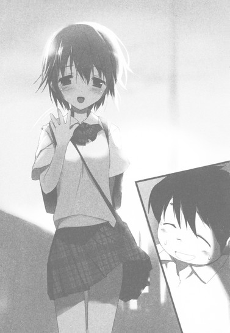

| [川原礫]アクセル・ワールド11 | |
| 川原礫 | |
| (2015) | |
|
アクセル・ワールド11 ─超硬の狼─
川原 礫
|
底本データ
一頁17行 一行42文字 段組１段
「二重山括弧」は「山括弧」に置換え注略。
「＞」は全角縦中横注略。
アクセル・ワールド11
─超硬の狼─
ブレイン・バースト内を暗躍する謎の組織〈加速研究会〉。その総本山〈東京ミッドタウン・タワー〉の頂に鎮座する、〈大天使メタトロン〉。
完全無敵の神獣級エネミーによって、守護されている〈加速研究会〉を打倒するため、七王会議が開かれた。
そこで導き出された秘策とは、シルバー・クロウの新アビリティ〈理論鏡面〉獲得作戦だった。
メタトロンの放つ絶対即死極太レーザーにも耐えるアビリティを習得する命を受けたクロウだが、〈心意技〉がイマジネーションによって生み出されるのに対して、〈アビリティ〉は行動をトリガーに発現する。そのため、今までのハルユキの強いイメージだけでは、〈理論鏡面〉アビリティは習得できない。
いっこうに糸口が見えないハルユキに対し、〈アーダー・メイデン〉こと四埜宮謡が哀しい過去を語り始め──。
川原 礫
冬のあいだほとんど自転車に乗れなかったので移動力が下がりまくりです。春になったらまた鍛えたい......と思っているうちにすぐ梅雨に......そして真夏に......。
イラスト：ＨＩＭＡ
10月３日生まれ。挿絵は今シリーズが初のイラストレーター。『電撃萌王』小冊子への寄稿を見た文庫編集者が、今回の挿絵依頼をオファーしたことがきっかけ。本業仕事の合間を縫って、ブログやＳＮＳサイトなどでイラストを発表している。
［各レギオンのアバターリスト （括弧）内はプレイヤー名］
【〈黒のレギオン〉 ネガ・ネビュラス】
レギオンマスター／ブラック・ロータス （黒雪姫）
〈四元素（エレメンツ）〉
風／スカイ・レイカー （クラサキ・フウコ）
火／アーダー・メイデン （シノミヤ・ウタイ）
水／アクア・カレント ※現在は脱退
土／グラファイト・エッジ ※現在は脱退
シルバー・クロウ （アリタ・ハルユキ）
ライム・ベル （クラシマ・チユリ）
シアン・パイル （マユズミ・タクム）
【〈赤のレギオン〉 プロミネンス】
レギオンマスター／スカーレット・レイン （コウヅキ・ユニコ）
サブマスター／ブラッド・レパード
レッド・ライダー ※現在は加速世界から退場
チェリー・ルーク ※現在は加速世界から退場
【〈青のレギオン〉 レオニーズ】
レギオンマスター／ブルー・ナイト
〈幹部〉
コバルト・ブレード
マンガン・ブレード
フロスト・ホーン
トルマリン・シェル
【〈黄のレギオン〉 クリプト・コズミック・サーカス】
レギオンマスター／イエロー・レディオ
【〈緑のレギオン〉 グレート・ウォール】
レギオンマスター／グリーン・グランデ
〈六層装甲（シックス・アーマー）〉
第三席／アイアン・パウンド
アッシュ・ローラー （クサカベ・リン）
ブッシュ・ウータン
オリーブ・グラブ
【〈紫のレギオン〉 オーロラ・オーバル】
レギオンマスター／パープル・ソーン
〈側近〉
アスター・ヴァイン
クルムゾン・キングボルト ※現在は脱退
【〈白のレギオン〉 オシラトリ・ユニヴァース】
レギオンマスター／？？？
〈レギオン全権委任代行〉
アイボリー・タワー
【〈加速研究会〉】
ブラック・バイス
ラスト・ジグソー
ダスク・テイカー （ノウミ・セイジ）
※現在は加速世界から退場
サルファ・ポット
〈その他〉
ニッケル・ドール
サンド・ダクト
マッチメイカー
クロム・ファルコン
サフラン・ブロッサム
アズール・エアー
マゼンタ・シザー
ココア・クラッカー
ラグーン・ドルフィン （アサト・ルカ）
コーラル・メロウ （イトス・マナ）
アルミナム・バルキリー （チギラ・チアキ）
オレンジ・ラプター （ホオリ・ユウコ）
バイオレット・ダンサー （クルマ・クルミ）
ジルコン・パラディン
アクセル・ワールド 11
─超硬の狼─
■黒雪姫（クロユキヒメ）＝梅郷中学の副生徒会長。清楚怜悧なお嬢様。その素性は謎に包まれている。学内アバターは自作プログラムの『黒揚羽蝶』。デュエルアバターは〈黒の王〉『ブラック・ロータス』（レベル９）。
■ハルユキ＝有田春雪（アリタ・ハルユキ）。梅郷中学二年生。いじめられっ子で太り気味。ゲームは得意だが、内向的。学内アバターは『ピンクのブタ』。デュエルアバターは『シルバー・クロウ』（レベル５）。
■チユリ＝倉嶋千百合（クラシマ・チユリ）。ハルユキの幼馴染。お節介焼きな元気娘。学内アバターは『銀色の猫』。デュエルアバターは『ライム・ベル』（レベル４）。
■タクム＝黛拓武（マユズミ・タクム）。ハルユキ、チユリとは幼少期からの知り合い。剣道が得意。デュエルアバターは『シアン・パイル』（レベル５）。
■フーコ＝倉崎楓子（クラサキ・フウコ）。旧〈ネガ・ネビュラス〉に所属していたバーストリンカー。〈四元素（エレメンツ）〉の一人。とある事情により隠匿生活をおくっていたが、黒雪姫とハルユキの説得により戦線に復帰する。ハルユキに〈心意〉システムを授けた。デュエルアバターは『スカイ・レイカー』（レベル８）。
■ういうい＝四埜宮謡（シノミヤ・ウタイ）。旧〈ネガ・ネビュラス〉に所属していたバーストリンカー。〈四元素（エレメンツ）〉の一人。松乃木学園初等部四年生。高度な解呪コマンド〈浄化〉を扱えるだけでなく、遠距離攻撃も得意とする。デュエルアバターは『アーダー・メイデン』（レベル７）。
■ニューロリンカー＝脳と量子無線接続し、映像や音声など、あらゆる五感をサポートする携帯端末。
■ブレイン・バースト＝黒雪姫からハルユキに転送されたニューロリンカー内のアプリケーション。
■デュエルアバター＝ブレイン・バースト内で対戦する際に操るプレイヤーの仮想体。
■軍団＝レギオン。複数のデュエルアバターで形成される、占領エリア拡大と利権確保を目的とする集団のこと。主要なレギオンは七つあり、それぞれ〈純色の七王〉がレギオンマスターを担っている。
■通常対戦フィールド＝ブレイン・バーストのノーマルバトル（１対１格闘）を行うフィールドのこと。現実さながらのスペックを持つが、システムはあくまで一昔前の格闘ゲームレベルのもの。
■無制限中立フィールド＝レベル４以上のデュエルアバターのみが許可されるハイ・プレイヤー向けのフィールド。〈通常対戦フィールド〉とは段違いのゲームシステムが構築されており、その自由度は次世代ＶＲＭＭＯにも全くひけを取らない。
■運動命令系＝アバターを制御するために扱うシステム。通常はすべてこのシステムによってアバターは操作される。
■イメージ制御系＝自身が強く想像（イメージ）することによってアバターを操作するシステム。通常の〈運動命令系〉とはメカニズムが大きく異なり、扱えるものはごく少数。〈心意〉システムの要諦。
■心意（インカーネイト）システム＝ブレイン・バースト・プログラムのイメージ制御系に干渉し、ゲームの枠を超えた現象を引き起こす技術。〈事象の上書き（オーバーライド）〉とも言う。
■加速研究会＝謎のバーストリンカー集団。〈ブレイン・バースト〉をただの対戦ゲームとしては考えておらず、何事かを企む。〈ブラック・バイス〉、〈ラスト・ジグソー〉が所属している。
■災禍の鎧＝クロム・ディザスターと呼ばれる強化外装。装着すると、対象アバターのＨＰを吸い取る〈体力吸収（ドレイン）〉や、敵の攻撃を事前に演算・回避する〈未来予測〉など強力なアビリティが使用可能となる。しかしその使用者は、クロム・ディザスターに精神を汚染され、完全に支配される。
■スターキャスター＝クロム・ディザスターが持つ大剣のこと。禍々しい形状をしているが、本来の姿は、その名の通り、星のように輝く厳かな名剣である。
■ＩＳＳキット＝ＩＳモード練習（スタディ）キットの略。ＩＳモードとは〈インカーネイト・システム・モード〉のことで、このキットを使えば、どんなデュエルアバターでも〈心意システム〉が使用可能となる。使用中は、アバターのいずれかの部位に赤い〈眼〉が張り付き、〈心意〉の象徴である〈過剰光（オーバーレイ）〉が、黒いオーラとして放出される。
■〈七の神器（セブン・アークス）〉＝〈加速世界〉に７つある、最強の強化外装群のこと。内訳は、大剣〈ジ・インパルス〉、錫杖〈ザ・テンペスト〉、大盾〈ザ・ストライフ〉、形状不明〈ザ・ルミナリー〉、直刀〈ジ・インフィニティ〉、全身鎧〈ザ・ディスティニー〉、形状不明〈ザ・フラクチュエーティング・ライト〉。
■〈心傷殻〉＝デュエルアバターの礎となる〈幼少期の傷〉、その心の傷を包む殻のこと。その殻が並外れて強固で分厚い子供が、メタルカラーのデュエルアバターを生み出すという。
大型スーパーマーケットの自動ドアを通過すると、視界の下側に小さなプログレス・バーが出現した。
シンプルなデザインだが、左から右へ進行していくバーの先端には黒いちょうちょが止まっていて、処理率が百パーセントに近づくにつれ小刻みに翅を震わせ始める。ほんの三秒ほどでタスクが完了し、バーが消えると、蝶は音もなく飛び立った。反射的に右手を伸ばすが、蝶は指の間を軽やかにすり抜ける。本物そっくりな動きでスーパーの天井あたりまで舞い上がり、空気に溶けるように消滅する。
「......相変わらず、サッちゃんの作るアプリは妙なとこが凝ってるわねぇ」
右隣からそんな声が聞こえ、視線をそちらに動かす。
立っているのは、半袖シャツとプリーツスカートの制服を着た女性だ。柔らかそうな栗色のロングヘアをエアコンの微風になびかせ、すらりとした脚を包むオーバーニータイツは涼しげな薄水色。左手には大きめのトートバッグを提げている。
優しげな目鼻立ちの顔からは微笑が絶えることはないが、その意味合いは各種状況によってフレキシブルに変化し、必要とあらば生半可な怒り顔の十倍コワくなることも可能だ。しかし現在彼女の顔に存在するのは単なる微苦笑で、そこにたっぷりと〈サッちゃん〉への親愛の念がトッピングされている。
まったく同様の心情を抱いていることを大きな笑顔で表現しつつ、有田春雪は倉崎楓子に答えた。
「先輩作のアプリはみんなあのちょうちょがくっついてるんですけど、処理完了して飛んでく時に、ウルトラ素早くかつマックス優しく握ると捕まえられるんです」
「......捕まえると、どうなるんですか？」
「一匹ゲットで一ポイント獲得です」
ハルユキの答えに、楓子はいっそう首を傾げる。
「......ポイントを獲得すると、どうなるんですか？」
「千ポイントで何かが起きるらしいんですが、それが何かはナイショだそうです」
「............凝ってるわねー............」
今度は本格的な呆れ顔でしみじみと呟いてから、楓子はぽんと両手を合わせた。
「さてと、お買い物を済ませてしまいましょうか、鴉さん。上で、お腹を空かせた子供たちが待っていますから」
「は、はい」
頷き、ハルユキは右手の指を持ち上げると、プログレス・バーがあった場所に浮かんでいる実行ボタンに触れた。途端、仮想デスクトップ右側に、スーパー地下一階食品売り場の平面図と十行ほどの〈お買い物メモ〉が表示される。
マップには進むべき経路が細いラインで、買い物をするべき棚が点滅するドットで示されているので、それに従って、まずは生鮮食品コーナーへと向かう。とある棚に近づくと、マップ右側のメモ一行目がハイライト。書かれているのは【じゃがいも五個（メークイン）￥１９８】で、目の前の棚にはまさしくソレが山積みだ。一袋手に取り、芽が出たりひび割れたりしていないのを確認してから、視界に表示される購入ボタンを押す。
ちゃりーんというサウンドが響き、ニューロリンカーにチャージされている電子マネーから百九十八円が引き落とされた。楓子がトートバッグを広げながら差し出すので、そこにじゃがいもを入れると、買い物メモの一行目がグレーアウトする。
そこでようやくハルユキは気付き、慌てて言った。
「あ、ぼ、僕が持ちます！」
「あら、そうですか？ なら、買い物はわたしがしますね」
楓子から五百グラム重くなったバッグを受け取り、並び順を入れ替えて、マップに示された次のポイントへ。メモ二行目には【たまねぎ二個￥98】の文字列。
この店内マップと連動した買い物メモが、黒雪姫の自作アプリ〈ショッピング・オプティマイザーＶｅｒ．２・０〉だ。お店のローカルネットと接続し、買いたい商品の位置と価格情報を取得して、マップに表示してくれる。もちろん対象はスーパーだけに留まらず、広大無辺なホームセンターや似たようなパッケージが密に並ぶドラッグストアでも商品を探して右往左往せずに済む。
陳列場所の検索機能くらいなら、お店のローカルネットも備えているのだが、買い物リストアプリとの連動はできない所がほとんどだ。なぜならそのサービスを提供すると、客があらかじめ予定していたものだけをサッサと買って帰ってしまい、店内をさまよいつつ余計なものに手を出してくれなくなるからだ。黒雪姫製買い物アプリの凄いところは、店のローカルネットが拒否するはずのデータ連動をアッサリやってのけることなのだが、怖いので詳しい仕組みは聞いていない。
クジビキで買い物部隊に任命された楓子とハルユキは、混み合う夕方のスーパーマーケットをアプリのナビに従って高速移動し、メモ最終行の【超絶熟成カレールウ・甘口￥２７８】までの計十一点を約四分で購入完了した。支払いはローカルネット経由で済ませているので、行列のできているレジエリアを素通りし、店外に出る。
ショッピングモールの中央通路をエレベータに向かって歩きながら、楓子が再び苦笑混じりに言った。
「このお買い物アプリ、初めて使わせてもらいましたけど......いかにもせっかちなサッちゃんらしい設計だわねぇ」
「あ、あはは......。バージョン３からは、支払いもオートでできるようになるみたいです」
ハルユキの言葉に、楓子はくるりと瞳を回してみせる。
「なら、お店の中をダッシュしながら商品をぽいぽいバッグに入れて、そのまま出てこられるのかしら？出口でガードマンにブロックされるのに、10バーストポイント賭けてもいいわ」
「............そ、そうですね」
黒雪姫に、「バージョンアップしたら動作テストに協力してくれ」と依頼されていたことを思い出して軽く青ざめたりしつつ、ハルユキはちょうどドアが開いた住居棟行きエレベータに駆け寄った。
１
二〇四七年六月二十四日、月曜日、午後六時三十分。
杉並区高円寺北に建つ複合型高層マンション、Ｂ棟二十三階の有田家リビングルームには、ハルユキのなにより大切な仲間たち──すなわちレギオン〈ネガ・ネビュラス〉のメンバーが勢揃いしていた。
六人掛けダイニングテーブルの奥側に、マスターたる黒雪姫。キッチン寄りの椅子二脚に、参謀格の黛拓武とムードメーカーの倉嶋千百合が並んで座る。ベランダ側には、レギオンの良識兼マスコット役の四埜宮謡と、（不本意ながら）トラブルメーカーのハルユキ。そして、黒雪姫と正対する位置に、レギオン副長の倉崎楓子。
ちょうど一週間前の月曜日に、六人目のメンバーである謡と出会ってから、なんとなくこの並びで座るのが定例となっている。しかし今日は、黒雪姫の隣と楓子の隣にそれぞれ一脚ずつ、追加の椅子が用意してある。テーブルの上に並ぶ丸皿も、六枚ではなく八枚だ。
先ほど保温モードになった炊飯器からは炊きたてごはんの甘い匂いが漂い、ＩＨレンジに載る大鍋も暴力的なまでにスパイシーな香りを振り撒いている。ハルユキはもちろん、他の五人も責め苦に耐える表情を浮かべ、いつしか会話も途絶えたままだ。
「............僕......もう、限界かも......」
ハルユキが頭をふらふらさせながら呟くと、隣で謡が十本の指を弱々しく動かした。
【ＵＩ＞ がまんなのです、クーさん。これも精神力を鍛える訓練なのでｓｙ】
表情は毅然としているが、めったにないミスタイプが、彼女の限界も近いことを示している。正面のチユリはじーっと白い皿を睨み、タクムはひたすら眼鏡のレンズを拭く。楓子の口許に浮かぶ微笑はだんだんコワイ度を増し、そんな中で黒雪姫はさすがマスターと言うべきか、静かに瞼を閉じたまま微動だにしない──
「............遅い!!」
ということもなく、テーブルを軽く叩きざま叫んだ。
「もう三分三十秒も遅れている！ これが加速世界なら五十八時間だぞ！」
「正確には五十八時間二十分ね」
と、にっこり笑いながら楓子が補足する。二人の背中から炎にも似たオーラが立ち上るのを幻視したハルユキは、ついいつもの習性でフォローに入った。
「ま、まあまあ先輩、師匠も、ほほほらカレーは寝かせるほど美味しくなるって言いますし」
「ほう？ ならキミのぶんはたっぷり寝かせてみようじゃないか、三日ほど」
「せっかくですから、限界超えを目指して一週間寝かせましょう」
「ち、違う限界を超えちゃいますよソレ！」
ハルユキがわたわた両手を振った、その瞬間。全員の聴覚に、待ち望んだサウンドが鳴り響いた。ぴんぽーん、というチャイム音が終わらないうちにハルユキの右手が電光の如く閃きも表示された来客ウインドウの解錠ボタンを押す。
「い、いらっしゃい！ エレベータホールまで迎えに行くから、二十三階に上って！」
そして椅子から転げ落ちるように玄関にダッシュするハルユキの背後で、残る五人も立った。黒雪姫が右手を振り、矢継ぎ早に指示する。
「チユリ君はごはんをよそってくれ！ タクム君とフーコは冷蔵庫からサラダを出す！ういういはカレーを温め直せ！麦茶の用意は私に任せろ!!」
ハルユキがリビングに案内した来訪者の第一声は、
「わぁ、いー匂い！ あたしもう、おなかペコペコだよー！」
というものだった。
ネガ・ネビュラス一同の、殺気に満ちた視線にもまるで動ぜずハルユキを見上げると、
「どこに座ればいいの、おにーちゃん？」
と無垢な笑顔で続ける。ハルユキは慌てて真っ赤なＴシャツの両肩を押し、黒雪姫の隣に用意された椅子に案内した。やや緊張感に満ちた配置ではあるが、ダイニングテーブルの奥側を上座と捉えると、こうしないわけにもいかない。
なぜなら、椅子にぴょこんと腰掛けた、赤毛をツインテールにした少女は立場的に黒雪姫とまったくの同格──。レギオン〈プロミネンス〉頭首たる赤の王、〈不動要塞〉スカーレット・レインこと上月由仁子その人なのだから。
ニコが素直に黒雪姫の隣に座ってくれたので、ハルユキはひとまずほっとしたが、その直後二人目の来訪者が音もなくリビングの戸口に姿を現した。ニコに数十秒遅れた理由は、玄関でゴツいライダーブーツを脱いでいたからだろう。両手にも黒革のロンググローブをはめていて、それが半袖のセーラー服と妙にマッチしている。肩にかかる三つ編みを背中に払い、やや低めのハスキーボイスで──
「ＳＲＹ。環七が事故回避渋滞」
と、最低限の情報だけを口にするのはもちろん、赤のレギオンの副長、ブラッド・レパード略してパドさんだ。
ハルユキは彼女も椅子に案内しようと戻りかけたが、それより早く、もっとも近い場所にいた楓子が立ち上がった。
「それはお疲れ様。あれに捕まると厄介よね、レパード」
穏やかな口調で言いつつ、パドさんの前まで移動する。
事故回避渋滞というのは、自動車が事放りそうになった時、車両制御ＡＩが急制動をかけると同時に周囲の車にも警告信号を送ることで発生するものだ。道路が混雑していると、玉突き事故を防ぐために警告が連鎖反応的に伝播していき、かなりの広範囲にわたって車が停止、あるいは強制徐行モードとなる。
そして今この瞬間、有田家リビングルームでも、向き合う女性二人から発せられた不可視のスパークが瞬時に広がり、ハルユキの動きを緊急停止させた。ゴクリと生唾を呑み込みながら、今更のように意識する。
〈血まみれ子猫〉の二つ名を持つパドさんと、〈鉄腕〉スカイ・レイカーこと倉崎楓子は、第一期ネガ・ネビュラスが消滅するまでは互いに相手を最大のライバルと認め合う間柄だった──と前に聞いた。パドさんが、相当な古参であるにもかかわらずまだレベルを６に留めているのは、レイカーの半引退と深い関係があるらしい。
「......Ｈｉ、レイカー」
パドさんが、グローブを外しながら短く発した挨拶からは、かつて二人がリアルでも会ったことがあるのか、それともこれが初対面なのかはまるで判らない。
少なくとも、三週間前の〈ヘルメス・コード縦走レース〉最終局面で二人は再会し、言葉を交わしているはずなのだが、あれは多チーム参加のイベントバトルだったので、考えてみればレイカーの復帰以降まだ直接の対戦は一度も行われていないのだ。
......も、もももしかして、ここでいきなり対戦開始とか？
思わず手に汗握るハルユキだったが、右ナナメ後方のニコが、〈天使モード〉を解除した声であっさりと緊迫感をキャンセルした。
「ガンのつけあいはそんくれーにして、早く食おーぜ！これ以上待てねーよ！」
「......待たされたのはこっちだがな、赤の王」
と、隣の黒雪姫が応じる。それを機に楓子も一歩下がり、パドさんをテーブルにつくよう促した。ライバル二人が並んで座り、ハルユキも慌てて自分の椅子に戻ったところで、再び黒雪姫が口を開いた。
「それでは、何はともあれ食べよう。話はそれからだ。──いただきます」
「「「いっただっきまーす!!」」」
他の七人も唱和し、同時にスプーンを手にすると、それぞれの前にあるカレーの大皿に挑みかかった。
なにゆえにネガ・ネビュラスの総員が六人がかりでカレーを手作りし、そこにプロミネンスのトップ２が招待され、揃って食卓を囲むこととなったのか。
その理由は、昨日──六月二十三日、日曜日に行われた〈七王会議〉の席上へとさかのぼる。
自分が選び、皮を剥いたじゃがいもをモグモグ咀嚼しながら、ハルユキは記憶を二十時間ほどロールバックさせた。一歩間違えば、純色の王たちから死刑宣告を受けていたかもしれなかった、断罪の場へと──。
２
両手に花。
と言って言えないこともないと判断することも不可能ではない状況なのではなかろうか、とハルユキは考えた。
なぜなら、ハルユキのデュエルアバターであるシルバー・クロウは現在、階段状に高くなった円形ステージの最上段に一人で立たされ、一段下がった左右には凛々しくも美しい女性型アバター二人がぴんと背筋を伸ばしているからだ。残念ながら彼女たちはクロウの護衛でも従者でもなく、罪人を監視する刑吏役なのだが。
「......あのぉ、その刀、初期装備なんですか？それとも、どこかで拾ったんですか？」
緊張感に耐えきれず、右側に立つ青のレギオン最高幹部、コバルト・ブレードに小声で質問する。
藍色の重装甲をかしゃりと鳴らしてハルユキを見た女武者は、少し憤慨したような囁き声で答えた。
「刀は我らの魂だ。初期装備に決まっている！」
すかさず左側から、装甲色が少し緑がかっているだけで双子のようにそっくりなマンガン・ブレードの声が響く。
「拾ったとは聞き捨てならん、無礼討ちにするぞ！」
ひいいっ、と震え上がりながら慌てて言い訳。
「ち、ちち違うんです、ちょっと前に無制限フィールドでよく似た刀を見たもんだから、それでつい」
すると、女武者二人は顔を見合わせ、完璧にハモったひそひそ声を発した。
「「無制限フィールドの、どこで見たのだ？」」
「え、えっと、その............」
ハルユキが想起したのはもちろん、無制限中立フィールドの真ん中にそびえる絶対不可侵の〈帝城〉で出会った不思議な青系アバターが携えていた直刀だ。銘、〈ジ・インフィニティ〉。加速世界最強の強化外装、〈七の神器〉の五番星である。
そんなマル秘情報を敵対レギオンの幹部においそれと漏らせるわけもなく、ハルユキは両手の人差し指を擦り合わせながら言った。
「え、えへへ......それはヒミツです」
途端、コバルトとマンガンが両眼をびかーんと光らせ、体の前で杖のように地面に突いていた刀の柄を強く握った。だが幸いそこで、のんびりとした口調の──それでいて強烈な威厳に満ちた声が朗々と響いた。
「おいおい、コバル、マーガ。検分が終わる前にそいつを退場させないでくれよな」
「「はっ!!」」
女武者たちは大声で叫び、再び姿勢を正す。ハルユキもびくっと首を縮め、アバターの顔を覆う鏡面シールドの奥からそっと声の主を窺った。
シルバー・クロウが立たされている円壇は、直径三十メートルほどの円形広場の中央にある。広場の外周には、太い柱を輪切りにした即席の椅子が七つ、半円形に並ぶ。そこに腰掛けるのは、加速世界の支配者たるレベル９ｅｒたち──即ち〈純色の七王〉だ。
ハルユキから見ていちばん右に、渋谷エリアを本拠とするレギオン〈グレート・ウォール〉の頭首、〈絶対防御〉の二つ名を持つ緑の王グリーン・グランデ。先週と同じく、今日も従者を連れていない。
その隣に座るのは、杉並を領土とする〈ネガ・ネビュラス〉頭首にしてハルユキの剣の主、〈絶対切断〉とかつて呼ばれたらしい黒の王ブラック・ロータス。背後に副長スカイ・レイカーの優美な立ち姿がある。
三つ目の椅子には、中野から練馬を支配する〈プロミネンス〉マスターのスカーレット・レイン。もちろん強化外装群は召喚せず、可愛らしい少女型アバターの足をぶらぶらさせている。傍らに、直立した豹を思わせるシルエットのブラッド・レパード。
そして四つ目、つまりハルユキの正面には、今回も議長役を務めている青の王が悠然と座す。〈剣聖〉ブルー・ナイトは新宿から文京エリアまでを領土とする〈レオニーズ〉の頭首で、ハルユキの左右に立つ女武者たちは彼の側近だ。つまり、先ほど二人をたしなめた声は青の王のものである。
更にその左、五つ目の椅子には、ひと目見ただけで女王という言葉を連想させる、高貴なシルエットのアバターが腰掛けている。銀座エリアの支配者、〈紫電后〉こと紫の王パープル・ソーンだ。背後に、女性士官めいた外見の側近、鞭使いアスター・ヴァインが控える。二人とも微動だにしないが、発せられるプレッシャーはこの場の誰よりも明確にハルユキをフォーカスしている。
六つ目の椅子を占めるのは、毒々しいまでに鮮やかな黄色の装甲を持つ道化師型アバター。秋葉原から上野にかけてを領土とするレギオン〈クリプト・コズミック・サーカス〉頭首、〈放射性惑乱〉こと黄の王イエロー・レディオは、今日も見える範囲には配下を連れていない。笑い顔のフェイスマスクを、まるで振り子のようにゆっくり左右に揺らしている。
そして──一番左、七つ目の椅子には、今回も本来そこに座するべき〈王〉の姿はなかった。
先が尖った棒のようにひょろりとしたシルエットのアバターは、〈アイボリー・タワー〉。六本木エリアを拠点とするレギオン〈オシラトリ・ユニヴァース〉の支配者たる白の王の全権代理だ。ハルユキが唯一自分の眼で見ていない七人目のレベル９ｅｒを今日こそは目撃できるかと思っていたのだが、白の王はよほど恥ずかしがり屋なのか......それとも、たかがレベル５のシルバー・クロウなぞに興味はないのか。
──たぶん後のほうだろうなあ。僕は興味シンシンなのになあ。
と、内心ちょっとしょんぼりしつつ更に視線を動かすと、〈魔都〉ステージの濃い霧の向こうにそびえる巨大な城が見えた。もちろん加速世界の中心たる〈帝城〉の偉容だが、ここは無制限中立フィールドではなく、コバルトとマンガンが生成した通常対戦フィールドなので城に入ることはできない。ハルユキや他の王たちは、システム的には武者二人による対戦のギャラリーとしてこの空間に接続しているというわけだ。
つまり、コバルトもマンガンも、携える刀でシルバー・クロウを直接攻撃はできないのだが、〈妨害的ギャラリー〉としてこの場から排除することはできる。あるいは、可能性は低いのだがこの場の全員が同意すれば対戦ルールが〈バトルロイヤルモード〉に変化し、誰もが誰もの敵となり得る。
──いやいや、僕はぜったいイエスボタンを押さないぞ。押すもんですかーだ。
前回の七王会議でも同じようなことを思ったのをすっかり忘れ、ハルユキはそんな決意を固めつつ状況の検分を終えた。つまるところ、この場は被告たるシルバー・クロウを裁く大法廷、というわけだ。さしずめ、ブラック・ロータスが弁護士で、最も敵対的なパープル・ソーンあたりが検事か。ブルー・ナイトが裁判官だとすると、他の四王は陪審員。
これだけ役者が揃っているのに、先ほどから一同が沈黙しているのは、最後の登場人物を待っているからだ。シルバー・クロウが白か黒かを、その特殊能力で検める〈証人〉。彼または彼女の言葉ひとつで、ハルユキのバーストリンカーとしての命が絶たれるか否かが決する。
もちろんハルユキは、自分の無罪を確信している。
容疑者としてこの場に立たされるに至った直接の原因は、過日の〈ヘルメス・コード縦走レース〉に於いて、呪われた強化外装──〈災禍の鎧〉クロム・ディザスターを召喚したことだ。加速世界の黎明期から何度となく巨大な災いを引き起こしてきた〈鎧〉の、六代目の所有者、いや〈宿主〉となってしまったハルユキに許された猶予は一週間。前回の七王会議から、今日のこの会議までにアバターから鎧を浄化できねば、シルバー・クロウの首には膨大な額の賞金が掛けられる。まだようやくレベル５でしかない現状では、それは死刑宣告に等しい。
ゆえにハルユキとレギオンの仲間たちは、シルバー・クロウに寄生する〈鎧〉を消し去るべく、一週間ひたすら奮闘した。浄化アビリティを持つアーダー・メイデンを四神スザクの祭壇から救出し、〈鎧〉を生み出した二人のバーストリンカーの記憶と向き合い、クロム・ディザスターという存在に秘められたロジックを解き明かして、ついに全ての呪いを解くことに成功したのだ。
〈鎧〉の原形となっていた二つの強化外装──大剣〈スター・キャスター〉及び全身鎧〈ザ・ディスティニー〉は、すでにメイデンの浄化能力によってシルバー・クロウから切り離され、加速世界のとある場所で永遠の眠りについている。ハルユキのデュエルアバターにはもう、いかなるオブジェクトも寄生しておらず、ゆえにいかなる誹りを受ける謂われもない。
と、ハルユキは確信しているのだが──それがスムーズに認められるかどうかについては、ほんの少し不安がなくもない。なぜなら、今この場の全員が待っている〈証人〉が、いったいどんなバーストリンカーなのかよく知らないのだ。黒雪姫や楓子は心当たりがあるらしき口ぶりだったが、無条件に信頼しているようにはとても見えなかった。
つまり、もし仮に万が一、証人が検察官に抱き込まれていたりすると検分の結果を無視して「黒だ！」と言い出すかもしれず、それを否定する証拠もハルユキは持っていない。そんなことを考えながら無言で立っていると不安ばかりが増大してしまうので、つい両側の女武者たちに話し掛けたくなるのだ。
「あのぉ、マンガンさん」
「............今度は何だ」
煩わしそうに視線だけを向けてくる相手に、ぽそぽそと訊ねる。
「コバルトさんとは、リアルでもごきょうだいとか......もしかして、双子だったりするんですか？」
「............双子だ」
「へ、へええ！ ......でもその場合、〈親〉はそれぞれ別の人......ってことなんですか？」
「ほう、いい質問だな小僧」
と、反対側で囁いたのはコバルト・ブレードだ。小さく顔を寄せ、どこか得意げな口調で続ける。
「ニューロリンカーが、ユーザーを固有脳波で識別するのは知っておろう。ならば、その脳波がほぼ同一な人間が二人いればどうなると思う」
「え......に、ニューロリンカーの共有......？ で、でも、お二人はこうして同時に加速を......」
首を捻っていると、今度はマンガン・ブレードが低く笑う。
「フフフ、その先が知りたければ、青のレギオンに移籍したのち精進してみるんだな。使える奴なら、我らの槍持にしてやらんでもないぞ」
「もっともそれも、今日の会議の行方次第だがな、フフフ」
「え、あの、いえそれはエンリョしときます......」
「「なんだと!!」」
二人が再び刀の柄を握り、正面に座るブルー・ナイトが、呆れたように首を振りながら再度たしなめようとした──
その寸前。霧のたなびく円形広場に、妙に陽気な声が響き渡った。
「やー、遅なってゴメンなぁ！ うっかり帝城のまるでむこっかわに出てもぉてん！」
〈魔都〉ステージの硬質な地面を叩く、かんかんという軽い足音。後ろからだと判断し、ハルユキは素早く振り向いた。やや遅れて、両側の武者たちも体の向きを変える。
濃密な霧のベールを透かして、ひとつのシルエットが見えた。小柄で細身の女性型だ。頭部だけが不釣り合いにボリューミーで、いかにもバランスが悪そうなのだが、悪視界を気にする様子もなくまっすぐ近づいてくる。
「来たぞ、マーガ」
「緩めるな、コバル」
素早く言い交わした女武者たちの声に、やけに張り詰めたものを感じ、ハルユキは途惑った。無制限中立フィールドならば、接近するデュエルアバターには最大限の警戒を払うべきだが、ここは通常対戦フィールドなのだ。確かに現在、〈ギャラリーは対戦者の十メートル以内には近寄れない〉という制限はオプション設定で解除されているのだが、それでも〈ギャラリーは一切の攻撃力を持たない〉という大原則は変わらない。
いったい何を警戒してるんですか、と二人に訊ねるチャンスは残念ながらなかった。霧の奥からあっさりと姿を現した来訪者が、ハルユキのすぐ横を悠然と通過し、七王たちの前で立ち止まったからだ。
装甲色は、ごく薄い紫色。四肢や体には特徴的なパーツはなく、いかにもＦ型らしいなよやかなフォルムである。何より目立つのは、やはり頭部だ。百六十センチほどの身長のうち、三十センチ以上を占めるだろう。扇形に広がったその形は、帽子型の装甲なのか、それとも本来の頭なのか、後ろ姿からは即断できない。
右腰に手をあて、軽く会釈するアバターに対して、青の王ブルー・ナイトが椅子から立ち上がって言葉を掛けた。
「──急な要請に応じてくれたことに、まずは礼を言うぜ、〈アルゴン・アレイ〉」
「なーに、かまへんて。ウチも貰うもん貰てるしな、あはは！」
アルゴン・アレイという名らしいバーストリンカーの返事は、あくまで明るい。純色の七王を前にしている緊張感など欠片も感じられない。
「それにしても、ひっさしぶりやねぇ、この眺め。前に王サンたちが揃ってるとこ見たん、何年前やったかなぁー」
というその言葉に、真っ先に反応したのは黄の王イエロー・レディオだった。
「おや......妙なことを仰いますねぇ、〈クアッドアイズ〉。王と呼ばれるようになってから、七人全員が顔を合わせたのはたった一回......先代の赤の王がだまし討ちで退場なさったあの時だけだったように記憶しておりますけどね。なんだか、その場に居合わせていたような口ぶりですねぇ？」
アルゴンを問い詰めるフリをして、実は黒の王ブラック・ロータスを挑発しようという意図が見え見えのその台詞に、ハルユキは激しく歯噛みした。しかし黒雪姫も楓子も素知らぬ顔で受け流しているので、なんとか堪える。
動じないのはアルゴンも同様だった。大きな頭を傾け、ぴょこんと肩をすくめる。
「ありゃ、そやったかな。さすがに記憶があいまいやわ、何せラジオ君がまだこんなちーちゃい頃から知っとるからなぁー」
右手で自分の胸の高さを示してから、「なわけないやろ！」とセルフ突っ込み。さすがの黄の王も黙り込んだところで、追い打ちをかける。
「あー、やっぱアカンわぁー！ ウチ昔っから、ラジオ君見てるとラジオ焼き食べたくなってまうねん。どう、このあと付き合わん？飯田橋に旨い店あんねん、もちろん東京にしては、やけどな、あはは！」
「......相変わらず、口の減らない人ですね......」
イエロー・レディオが憮然と呟き、椅子に座り直したところで、ブルー・ナイトが再び言葉を発した。
「旧交を温めるのも結構だけどな、そろそろ本題に入らせてくれ。この後にも議題が控えてることだしな」
「そやった、〈視に〉きたんやったなぁ。ほなら、早速見せてもらおか......」
そう言って、今までずっとハルユキに背を向けていたアルゴン・アレイは、くるりと振り向いた。
帽子だったかな、とハルユキはまず思った。Ｆ型にはたまにある、アバターの口が露出しているフェイスマスクの上半分を、レンズ状のゴーグルが覆っていたからだ。更に、その上にも二つ丸いパーツが見えるが、そちらはカバーで隠されている。頭部の異様な大きさは、本来の頭の上に追加装甲を載せているせいだろう。
そんな思考をぼんやりと巡らせながら、ハルユキは近づいてくるアルゴンをじっと見詰めた。両脇のコバルトとマンガンがじりじりと下がるのも気にせず、ただ立ち続ける。
階段状になっている台の一段目、二段目をアルゴンはゆっくり登り、躊躇う様子もなくハルユキと同じ三段目に足をかけた。そこに登ると、距離はもう二十センチもない。目と鼻の先で、大型のレンズ型ゴーグルがきらりと光る。思わず覗き込むが、奥は深い闇に満たされていて見通せない。
「............ふぅーん。ぼんが噂のカラス君かぁー」
そんな囁き声とともに顔が傾けられると、反射光の加減か、二つのレンズが瞬きしたように見える。
「なんや聞いたハナシだと、あの〈鎧〉を自力で分離したんやってねえ？ウチのツレもえろう褒めとったよ、ぼんのこと。楽しみや、ちゅうて」
「ど......どうもです......」
ハルユキが恐縮しながらそう答えると、アルゴン・アレイは喉声でくすくすと笑った。
この〈証人〉役のバーストリンカーについては、さして多くを知らない。事前に聞いているのは、他のデュエルアバターの状態を全て見透す力を持っていて、寄生属性オブジェクトの有無を判定できるということと、〈四眼の分析者〉という二つ名だけだ。
かなりの古参らしいことは言動から想像できるが、正式なアバターネームも今日やっと知ったくらいなので、ハルユキはもちろん初対面である。通り名からして眼が四つあるのかな、と思っていたが、アルゴンの顔を覆うレンズは二つしかない。あと二つはどこにあるんだろう、などと考えながらまじまじと小柄な姿を眺めていると。
ちりっ。
と、意識のずっと深いところで、小さな火花が弾けた気がした。
言うなれば、本来そこにあるはずのない記憶に、ほんの一瞬だけ回線が繋がったかのような。あれ、どこかで......、と思うがそれ以上の情報は呼び出せない。ノイズだらけのスクリーンに、おぼろなシルエットがちらつくだけだ。
ハルユキが立ち尽くしていると、アルゴンはすっと体を引き、両脇のコバルトとマンガンを交互に見やって言った。
「ほな、始めよか。ぼんとウチは今ギャラリーやから、アビリティ使おとしたら、お嬢ちゃんたちの対戦に混ざらして貰わなあかんで」
「......承知している」
コバルト・ブレードが硬い声で応じ、〈インスト〉を開いて素早く操作する。すぐに、ハルユキとアルゴンの目の前に、小さなウインドウが開いた。英文のメッセージは、〈バトルロイヤル・モードに招待されましたイエス／ノー〉と読める。
アルゴンは「ぽちっとな」などと言いつつすぐにイエスを押したが、ハルユキは「えええっ」と仰け反らざるを得なかった。バトルロイヤル・モードに参加するということは、安全な観戦者から、体力ゲージを持つ対戦者に格上げ──いや格下げ？されるということだ。コバルトとマンガンの侍シスターズがその気になれば、二本の刀でハルユキを一寸刻み五分試し──
その時、会議場に到着してから初めて、黒の王ブラック・ロータスが静かな声を発した。
「大丈夫だ、クロウ。これが罠だったら、この場の全員をブチ殺す」
続けて背後のスカイ・レイカーが、
「もちろんです。まとめてスカイツリーから吊し首ですわ」
とんでもない台詞に、気温がマイナス百度くらいまで下がりかけたところで、隣に座る赤の王スカーレット・レインが追加の爆弾を投下した。
「おいおいロータス、言っとくけどプロミは単なるオブザーバーだからな！吊すならあっちの顔色わりー連中だけにしといてくれ」
顔色悪い連中、というのが青だったり紫だったりを指しているのは明らかで、大人物な青の王はともかく、パープル・ソーンとアスター・ヴァインのあたりからオーラがめらめらと立ち上る。このままだと本当にここで第二次スーパー七王大戦が勃発しかねないと判断したハルユキは、慌ててウインドウに右手を伸ばした。
「だ、だだ大丈夫です！ 僕の潔白を証明して貰うためですから！」
意を決してボタンを押す。バトルロイヤル参加のメッセージがフラッシュし、視界左上に自分の体力ゲージががしゃーんという金属音とともに降りてくる。他の三人のゲージは、右上に縮小して表示される。
コバルトとマンガンは、さすがに青の王の側近だけあって二人ともレベル７だ。しかし更なる驚きは、【ＡｒｇｏｎＡｒｒａｙ】の右にあるレベル８の表記だった。やはり相当のベテランであり強者なのだ。黄の王を昔から知っているらしいあの口ぶりも、これなら頷ける。
しかし当人は、あくまでライトな口調で、
「よっしゃ！ これも仕事や、じーっくり見さして貰おか。準備えーか、カラス君！」
とニジリ寄ってきた。反射的に直立不動になったハルユキは、「お、お願いします」と答えるしかない。
「ほな、いくで」
短く呟いた、アルゴン・アレイの帽子──とこれまでは思っていたパーツ──に装着された二つの丸板が、ジャカッ！と音を立てて上下に開いた。
その内側にあったのは、本来の眼の位置にあるものよりも、一・五倍ほど径の大きいレンズだった。四つのレンズ、いや〈四眼〉が、至近距離からハルユキを捉える。
続けて、大きな頭部の内側から、ひゅうーんという唸りが聞こえてきた。側面に設けられたスリットから温風が排気され、直後、全てのレンズが眩い紫に発光する。サーチライトか、いっそある種のレーザーのように直進性のある光が、シルバー・クロウの体を四箇所で貫いた。
「............!!」
思わず体をすくませるが、ダメージ感は一切ない。ちらりと見上げた体力ゲージもフル状態のままだ。それでいて、確かに何かがアバターを内側まで貫通している異様な感覚。
「............ふむふむ、ストレージは完全にカラッポやね」
不意に、アルゴンが小さく呟いた。その言葉は、原則的に他人には見えないはずのアイテム欄を、彼女に覗かれていることを意味する。
「装備中の強化外装もナシ。何らかの支援効果、あるいはアイテムによる欺瞞も一切ナシ......」
アルゴンの声からは、いつしか陽気さが薄れ、代わって事務的な冷ややかさが表に出てきている。対象個人にはひとかけらの興味も抱かず、あくまで観察対象として分析するような、その声......。
ちりっ！
再び、頭の奥に、先ほどより少しだけ強い火花。現実の視界に、もう一つの情景が二重写しに浮かび上がる。
急角度な崖の上に立ち並び、こちらを見下ろす沢山の人影。生身の人間ではなくデュエルアバターだ。ずっと、ずっと昔、確かにどこかで見た光景だと思える。いや、昔ではない。これは──夢。つい数日前、夢の中で見たシーン......？
ハルユキは息を詰め、おぼろげな記憶を必死に呼び覚まそうとした。時系列が混乱しているのは、これが〈夢で見た遥かな過去の情景〉だからだ。しかも、ハルユキ自身の記憶ではない。今はもうない、とある強化外装に刻み込まれていた記憶。その強化外装を生み出し、ずっと昔に加速世界を去った、一人のバーストリンカーの記憶。
ありったけの精神力を振り絞り、ノイズだらけのスクリーンを少しずつクリアにしていく。崖と思えたのは、湾曲する斜面──クレーターのような広い穴だ。縁に立つアバターの一人は、やけに大きな頭に、四つの眼を煌々と光らせている。かすかな声が途切れ途切れに聴覚を刺激する。
『......ージの全回復を......。必殺技ゲ............費なし。......らへん、イマ............回路によるメイン............のオーバー......現象や』
どこかで、聞いた、声。
データを読み上げるように冷ややかなその声に、別の声が応じる。
『やはり......トレーションの深化より............チメントの爆発のほう............早く現象を......るようだ。制御............うかは別問題......』
言葉の主は、隣に立つひょろりとしたアバター。細長い、というのとは少し違う。薄い板を何枚も縦に並べたような。再び、最初の声。
『そうやね。それと............を超える......〈心傷殻〉を持つもんがメタル............することもほぼ確実......』
ハルユキが、自分の魂を絞り尽くすように、どうにかそこまでの情報を再生したのと同時に。
耳許で、現実の声が密やかに流れた。
「ふーん、さすがはメタルカラーやね。〈心傷殻〉が厚くて、その奥がなかなか見えんなぁ......」
刹那──。
凄まじい衝撃がハルユキの意識を揺さぶり、記憶のスクリーンを粉々に吹き飛ばした。
しかしその寸前、スクリーンからはあらゆるノイズが消失し、くっきりと明瞭な情景が写真のようにハルユキの脳裏に焼き付けられた。
同じだ。
〈彼〉の記憶の中で、崖の上から四つの眼で見下ろしていたシルエットと──今この瞬間、ハルユキを四つの眼で分析しているＦ型アバターは、同じバーストリンカーだ。
そして、同じシーンで、四つ眼アバターの隣に立っていた薄板積層アバターは......これまでハルユキの前に三度現れ、異質な能力でハルユキや仲間を大いに苦しめた、〈加速研究会〉副会長......〈拘束者〉ブラック・バイス。
ということは。
────と、いうことは。
凍り付くハルユキの耳に、ほんの少し陽気さの戻った声が響いた。
「そんでもって......寄生属性オブジェクトも、いっこもナシ、と。安心せぇや、ぼん。あんたにはもう〈鎧〉は取り憑いてへんで。この〈クアッドアイズ〉がばっちり保証したるわ！」
途端、左右に立つコバルトとマンガンが、少しばかり肩の力を抜いた。
前方でも、まず黒雪姫と楓子が大きな安堵を見せつつ頷き合い、次いでニコがばしっと掌に拳を叩き付ける。パドさんは「ＧＪ」と言うかのように小さく親指を立て、手前では緑の王がごく小さく頷く。
反対側に座る黄の王は「やれやれ」とばかりに両手を広げ、紫の王は小さく肩をすくめただけだったが、背後のアスター・ヴァインが丸めた鞭をピシッと鳴らした。白の王全権代理のアイボリー・タワーはまったくの無反応、そして中央に座る青の王は、ひとつ大きく首肯すると、マントをなびかせて立ち上がった。
しかし、王や側近たちの反応を、ハルユキはほとんど見ていなかった。
脳裏では、ひとつの言葉だけが何度も何度もサイレンのように鳴り響いている。
──こいつだ。こいつだ。こいつだ！
いま目の前に立っている〈四眼の分析者〉ことアルゴン・アレイは────
ブラック・バイスの仲間。
加速研究会の中核メンバーだ。
やや俯けたヘルメットの下で、恐怖と戦慄のあまり歯がかちかちと鳴る。もしここが現実世界なら、全身には滝のように汗が流れ、涙さえ滲んでいただろう。
「いややわぁ、そんなに緊張しとったんか、ぼん！」
笑い混じりの声が聞こえる。視界の上側から、ほぼ光が消えつつあるアルゴンの四つ眼がハルユキの顔を覗き込む。
「安心してええて、もう誰もあんたを賞金首にしよなんて言ーひんから......」
そこで、言葉が途切れた。
消えかけていた四連レンズの光が、やや強度を増す。本物の眼のようにぱちぱちと瞬きしながら、じわ、じわと近づいてくる。
気付かれてはならない。ハルユキが気付いたことを悟られてはならない。
もしそれを看破されたら、アルゴンは前言を翻し、ハルユキにはまだ〈災禍の鎧〉が寄生していると宣言するだろう。シルバー・クロウは有罪と判定され、賞金首としてこのフィールドを追われる......いや、手始めにコバルトとマンガンの手によって首を落とされるだろう。
何としてもこの場を切り抜け、自分の得た情報を黒雪姫たちに伝えねばならない。
飛び退きそうになるのを懸命に堪え、立ち続けるハルユキのヘルメット側面を、アルゴンの細い指がそっと撫でた。そして、ごくごくかすかな、二人にしか聞こえないボリュームの囁き声で──。
「ぼん......あんた、ウチのこと、知っとるん............？」
もし、シルバー・クロウの顔が眼も口も完全に隠された鏡面ヘルメットでなければ、この瞬間に表情で見抜かれていたかもしれなかった。しかしハルユキは、強張る顔を懸命にアルゴンに向け、はい？というふうに小さく傾けた。
声を出さなかった、いや出せなかったのが逆に幸いしたか──。アルゴンは、それ以上ハルユキを追及しようとせず、
「いや......気にせんでええわ」
とだけ囁くと顔を離した。離れ際にヘルメットの天辺をぽんと叩き、階段を下りていく。
ここで安堵を見せてはならない。ハルユキは最後の精神力を振り絞り、ただぼんやりと立ち尽くすさまを装った。予想通り、アルゴンは最後の一段を下りたところで振り向き、レーザーじみた最後の一瞥を浴びせてきた。
そのチェックもどうにかクリアできたらしく、四眼の光はそこで消えた。〈分析者〉は立ち上がっている青の王ブルー・ナイトに向き直ると、両手を腰に当てて言った。
「さっきも言うたけど、あのカラス君には寄生モンはいっこも憑いてへんし、強化外装的にも真っ裸やよ。つまり、もうディザスターではありえひん、ちゅーこっちゃ」
「それを聞いて安心したぜ、〈クアッドアイズ〉。正直、またアレと闘ることになんのかってヒヤヒヤしてたからな」
ストレートな青の王の言葉に、黄の王がクックッと笑う。ナイトはそちらを、どうせお前もだろうというふうにひと睨みしてから、全身のヘビーアーマーをがしゃっと鳴らして大声で宣言した。
「それでは、第一の議題についてはこれで解決と──」
「あの、発言いいですか」
割り込んだ声の主は、これまでずっと無言だったどころか、ミニチュアの塔の如く身動きさえしなかった白の王の代理、アイボリー・タワーだった。
細長い右手を二本目の塔のように上げ、特徴のない、平板な声で続ける。
「シルバー・クロウ氏から〈クロム・ディザスター〉が分離された件は了承しました。しかし、ならば、〈鎧〉は再びアイテムカードとして封印されたのでは？そのカードはどこに行ったんでしょうね？」
アルゴン・アレイの正体のことで頭がいっぱいだったハルユキなれど、その指摘には意識を向けないわけにはいかなかった。
アーダー・メイデンの浄化能力によってシルバー・クロウから分離された二つのアイテムカードは、現在、かつてそれらの所有者だった二人のバーストリンカーの〈家〉に安置されている。カードと一緒に家の鍵も内部に置いてきたため、もう誰もあの家には入れない、というより視認することさえできないはずだ。
だが、それをそのままこの場で説明はできない。加速世界に、ネガ・ネビュラスの誰も知らない、他人の家に押し入る手段がひそかに存在しているかもしれないからだ。黄の王あたりがもう一度あの強化外装を手に入れたら──それでも、二つを〈ザ・ディザスター〉に融合させる手段はもうないはずだが──何を企むか知れたものではない。
王たちの視線を浴びて、言葉に詰まったハルユキの代わりに、黒の王ブラック・ロータスが立ち上がった。
「アイテムカードは、二度と誰も入手できない形で封印した。私もクロウも、もう触れることさえできない。──この答えでは不満か、アイボリー・タワー？それとも......封印の方法とその場所まで知りたいか？」
冷ややかな声に、象牙色の尖塔を模したアバターは、くるっ、くるっ、と頭部を左右に回転させた。
「いえいえ、その回答で充分ですよ、黒の王。割り込んで失礼しました、青の王」
そして手を下ろし、再び置物のように沈黙する。
ブラック・ロータスも腰を下ろすと、ブルー・ナイトを促すようにひらりと右手を振った。青の王は一つ頷き、台詞を再開させた。
「──第一の議題については、これで解決とする。〈クアッドアイズ〉、ご苦労さん。悪いが、対戦者になっちまった関係上すぐにはバーストアウトできない。会議終了までちょっと待ってて貰えるか」
「かまへん、かまへん。スミッコで見学さして貰うわ」
そう言って、広場の左側に移動するアルゴン・アレイの姿を、ハルユキはそっと眼で追った。〈四眼の分析者〉の二つ名を持つ彼女が、加速世界の擾乱者、〈加速研究会〉のメンバー......しかも副会長ブラック・バイスと並ぶ幹部であることをハルユキは今や確信している。しかしその根拠は、夢で見た、という至極あいまいなもので、ここで言い出してもとても王たちを納得させられるとは思えない。
残念だが、今すべきはたった一つ──アルゴンの疑念を二度と呼び覚まさないこと。会議の残り時間をどうにか無事にやり過ごし、バーストアウトしたらその場で黒雪姫と楓子に報告するのだ。
ハルユキは意を決し、大きく息を吸うと、右手を上げて言った。
「あのぉ、僕ももうココ降りていいですか？」
奇跡的に、震えたりつっかえたりすることなく声が出せた。青の王はちらりとハルユキを見ると頷き、親指でひょいと黒の王のほうを指す。ハルユキも会釈を返すと、階段を一段下り、背後のコバルト・マンガン姉妹にもぺこりと一礼した。振り向くと地面まで飛び降り、転ばないよう、ダッシュにもならないよう注意しながら、黒の王の椅子へと小走りで移動する。
なんとか普通に動けたという自信はあったが、それでも楓子の隣に立った瞬間、途轍もない安堵感に膝が笑いそうになった。いや、ここで気を抜いている場合じゃないと背筋を伸ばし、議場の反対側──アイボリー・タワーの後方に立っているアルゴン・アレイの様子をそうっと窺う。
〈分析者〉は、帽子についているほうの二眼をすでに閉じていた。両腰に手をあて、爪先でぱたぱた拍子を取っている様子は、とうてい悪の大幹部には見えない。だが、油断は禁物だ。シルバー・クロウと同様、アルゴンのレンズ型ゴーグルも視線の方向を覆い隠す。のんびり構えているように見えて、秘かにハルユキを観察しているかもしれないのだ。
平常心、平常心......と口の中で唱えていると、左に立つスカイ・レイカーが少し顔を寄せ、囁いた。
「お帰りなさい、鴉さん」
その短いひと言には、ハルユキが師匠と慕う楓子の思いやりがたっぷりこもっていて、胸が詰まった。すかさず、すぐ前に座るブラック・ロータスも振り向き、
「頑張ったな、クロウ」
などと優しく言うので本気で涙ぐみそうになる。
だが、ここで気を抜くととんでもない大ポカをやらかすのが有田春雪という人間であることをさすがにそろそろ学習しているので、ハルユキはただ二度、三度と頷くにとどめた。そのやりとりの間に、コバルトとマンガンの二人も円壇を降り、議場を横切って青の王の背後に控えている。
場が落ち着いたところで、青の王が再度声を発した。
「残り十五分か......ちょっと急ぐぜ。第二の議題......〈グレート・ウォール〉から情報提供のあった、ミッドタウン・タワーについてだが......」
そこで言葉を切り、右端の椅子に悠然と座す緑の王をちらりと見る。
「......説明はあんたがやってくれるのかな、〈絶対防御〉？」
全員の視線を一身に受けたグリーン・グランデは、しかしやはりと言うべきか沈黙を保ったまま、右腕をごくわずかに動かした。すると、それが合図だったかのように、背後の霧の中から一つのシルエットがすうっと出現する。
金属光沢を持つダークグレーの装甲。丸いヘッドギア型の頭部と、両手に装着された大きなグローブ。
「あ......パウンドさん」
ハルユキが呟くと、緑のレギオンの幹部集団である〈六層装甲〉の第三席を占めるレベル７、〈鉄拳〉アイアン・パウンドは小さく頷いた。緑の王の横を通り過ぎ、臆する様子もなく議場の中心近くまで進み出る。
「──我が王に代わって俺が状況説明をやらせて貰う」
かつて〈鉄腕〉レイカーのライバルの一人だったというだけあって、パウンドも相当に古参なのだろう。この場のほぼ全員とすでに面識があるようで、名乗りを省略して話し始める。
「もう直接確認しているレギオンもあるだろうが、無制限中立フィールド内の赤坂エリア西部、〈東京ミッドタウン・タワー〉に、神獣級エネミー〈大天使メタトロン〉が出現した。その他幾つかの情報から判断して、ミッドタウン・タワー上層階には、ここしばらく加速世界に蔓延している感染型強化外装、〈ＩＳＳキット〉の本体に類するオブジェクトが存在すると思われる」
その後約三分を費やして、アイアン・パウンドは、多くの情報を的確にまとめつつ王たちに向けて語った。
ミッドタウンの周囲二百メートルに接近すると、メタトロンの放つ超々威力のレーザー攻撃によって一瞬で蒸発させられてしまうこと。
メタトロンの無敵属性をキャンセルするには、無制限中立フィールドが〈地獄〉ステージに変遷するのを待つしかないこと。
これまで内部時間で数ヶ月にもわたってそのチャンスを待ったが、ついに〈地獄〉はただの一度も出現しなかったこと......。
パウンドが状況説明を終えると、数秒間の沈黙に続いて、まず紫の王パープル・ソーンが発言した。
「まあ......それは無理もないね。あたしも、通常フィールドならともかく、無制限フィールドが〈地獄〉になったのを見たことなんて、数えるくらいしかないもの」
少し鼻にかかるような、どちらかと言えば甘く可愛らしい声だが、その奥には超高圧の電流にも似た意思が秘められている。機会さえあれば、必ず黒の王の首を取ってみせる、という。
「無制限フィールドの〈地獄〉は本物の地獄だからなあ。そこらの巨獣級がみんな邪神級エネミーに変異するんだぜ......俺は二度とゴメンだね」
と、これは青の王。他の王や幹部たちの何人かも、まったくだというように頷く。
重苦しい沈黙を破ったのは、イエロー・レディオのキーの高い声だった。
「うーん、ちょっとした疑問なんですがね？ 外側からはミッドタウン・タワーに近づけない、それは納得しましたよ？でも......なら、内側からはどうなんです？現実世界でタワーの上層階まで行って、そこで〈アンリミテッド・バースト〉コマンドを使えば、メタトロンの攻撃圏をスルーしてタワーに侵入できるんじゃないですか？」
「あっ......！」
ハルユキは思わず声を出してしまった。確かに、黄の王の言うとおりだ。無制限フィールドに出現する座標は、現実世界での居場所に準拠するのだから、本物のミッドタウン・タワーに登ってから加速すれば一気に敵の本陣に入り込める理屈なのだ。
──しかし。ハルユキには名案と思えたそのアイデアを否定したのは、すぐ右に座る赤の王だった。
「あのなあレディオ、そんくれーグランデはとっくに考えたと思うぜ。もし、テキのアジトが六本木ヒルズ・タワーにあんなら、その手もいけるだろうさ。最上階まで、中学生なら五百円で上れんだからな。でもな、あたしも調べてみたけど、ミッドタウン・タワーの大部分はドのつく高級ホテルなんだよ。宿泊客以外は完全シャットアウトだろ」
「あっ......！」
再び叫ぶハルユキ。議場中心のアイアン・パウンドも一つ頷き、情報を補足する。
「ちなみに、一番安いツインルームで、お一人様一泊三万円からだ」
むぐ。と、場の全員が押し黙る。
いかに最強者〈純色の七王〉だったり、そのレギオンの最高幹部だったりしても、バーストリンカーである以上、現実世界では収入をオコヅカイに頼る中学生、高校生の集団だ。三万円というのはおいそれと出せる金額ではない。せめて、初回の侵入でＩＳＳキット本体を確実に破壊できる保証があれば、お金を出し合って宿泊費を捻出し、攻撃要員を送り込むという手もなくもないのかもしれないが、恐らく最初はただの偵察で終わるだろう。そのためだけに三万円はキツい。悲しいほどにキツい。
再び議場に満ちたヘビーな沈黙を、ブラック・ロータスの声が刃のように切り裂いた。
「──加速世界の問題を、リアルマネーでどうにかしようとするのは邪道だ。加速研究会の奴らも、まさか金を積んでメタトロンを〈コントラリー・カセドラル〉から引っ越させたわけではあるまい。我々も、あくまでバーストリンカーとして状況に当たるべきだ」
「ほほう、実にご立派、ご立派」
黄の王が、細長い両手をぱちぱちと叩く。
「しかしならば黒の王、あなたには何か腹案があるというのですか？メタトロンにはお得意のだまし討ちも通用しませんよ、きっと？」
あからさまな挑発に、ハルユキと楓子が半歩足を前に出す。しかし黒雪姫はあくまで冷静に応じた。
「同様に、貴様の得意な目眩ましだの袖の下も効かんだろうしな。いいからもう黙っていろ、この場にわざわざ解説役を連れてきたということは、グランデにはきっと考えがあるはずだ」
その言葉に、レディオは不愉快そうに両眼を細めたが、それ以上何を言うこともなく椅子に掛け直した。再び全員の視線が中央のパウンドに集まる。
確かに、状況説明だけなら、テキストメールを各レギオンの窓口となっている匿名アドレスに送信するだけで事足りたはずだ。緑の王がそれで済ませず、前回は連れていなかった随員を同行させたのは、きっと何か提案があるのだ。
ハルユキは固唾を呑み、パウンドの次なる言葉を待った。
しかし次の瞬間、鋼鉄色のボクサー型アバターがまっすぐ視線を向けてくるので、思わず仰け反る。きょろきょろ左右を見るが、やはりパウンドが注視しているのはシルバー・クロウのようだ。
────あ、なんか、嫌な予感。
そう思ったのも束の間──。パウンドが、まるでハルユキの心を読んだかのように重々しく頷き、言った。
「確かに、状況を打開する腹案がたった一つある。シルバー・クロウ......〈鎧〉を浄化したばかりの所で済まんが、もう一頑張りして貰えないか」
「えっ、あのっ、ででででもっ」
ハルユキはじりじり後退しつつ素早く首を左右に動かす。
「めめめメタトロンのレーザーは空中もカンペキ射程範囲内ですよ、ととと飛んで近づいても撃ち落とされますよぜったい」
「うむ、それは確実だろうな」
パウンドはあっさり認めたが、すぐに続けて言った。
「しかし今回、我々が期待しているのは貴様の〈飛行アビリティ〉ではないのだ。もう一つのユニークネス......〈シルバー〉という金属色なんだよ」
「いいい色？ た、確かに僕はシルバーですけど、でもあんま大した特徴はないっていうか......せいぜい毒に強いとか、それくらいで......」
「今はそうだろう。しかし貴様は、この場でただ一人、とある可能性を持っているのだ」
そこで一度言葉を切り、アイアン・パウンドは、いっそう重々しい口調で──
「かつて加速世界に存在した伝説のアビリティ......あらゆる光線技に対して絶対の耐性を持つ、〈理論鏡面〉を習得できる可能性を、な」
３
「うー、食った食った......黄色系になりそーなくらい食った......」
という呻き声とともに、ニコがスプーンを置いた。
数分早く食べ終わっていたハルユキは、手に汗握る思いで赤の王の採点を待った。カレーのレシピはチユリママのオリジナルで、調理の大部分はチユリと謡がその任にあたり、ハルユキが担当したのは買い出しとじゃがいもの皮剥きだけなのだが、それでも学力テストの採点結果メールを開くとき並みに緊張する。
リビングルームを満たす静寂のなか、ニコはしばし瞼を閉じていたが、やがて両眼をカッと見開くや叫んだ。
「八十五点！ ギリ合格！」
途端、ネガ・ネビュラスの全員が、ほ～～っと長く安堵のため息を吐いた。それに重なって、パドさんの「ＧＪ」のひと言が流れた。
手早く食器を片付け、場所をソファセットに移して、八人は再び向かい合った。
ソファも本来は六人掛けなのだが、ニコと謡がハルユキの半分以下の質量しかないので、詰めればなんとか全員が座れた。小学六年生と四年生の少女二人が並んで同時にアイスティーを飲んでいる光景は何と言うか実に微笑ましく、一人っ子歴十四年のハルユキとしては「こんな妹たちがいたらナー」などと妄想してしまうが、加速世界に於いてはかたや最強たる〈王〉の一人、かたや超高温の炎を操る〈劫火の巫女〉である。考えてみれば二人ともに遠隔攻撃を得意とする赤系で、仮に一対一で戦えばさぞかし派手なデュエルとなるであろう。
「......って、あれ、ニコと四埜宮さんはもしかして初対面？あ、リアルではもちろんそうだろうけど、加速世界でも......？」
ハルユキの問いに、小学生二人はちらりと顔を見合わせ、同時にかぶりを振った。まずニコが口を開く。
「あたしがバーストリンカーになったのは、第一期ネガビュが消滅するちっと前だけど、当時の領土戦でメイデンとは何度か顔は合わせたはずだぜ」
続けて謡が、ホロキーボードを手早く叩く。
【ＵＩ＞ お互い赤系ですから、基本的には遠くから火力を撃ち合うだけでしたが】
「でも一度だけ、〈鉄腕〉の姐さんが空中からメイデンをこっちの拠点ド真ん中に放り投げてきてさ！落っこちたのがあたしの目の前ときたもんだ」
【ＵＩ＞ あの時は大変失礼致しました】
そのやり取りの間も、楓子は素知らぬ顔でグラスを傾けている。思わずぶるりと背中を震わせてから、ハルユキは感じたことをそのまま口にした。
「そっか......。昔は、ウチとプロミも普通に領土戦してたんだよね。いつかまた、できるようになればいいね......」
現在、ハルユキの所属する新生ネガ・ネビュラスと、ニコ率いるプロミネンスは無期限の停戦中で領土戦は行っていない。メンバーがたった六人しかいない現状では、毎週律儀に攻めてくるレオニーズと、隔週くらいで小規模チームを送り込んでくるグレート・ウォールの相手をするのが精一杯なので停戦協定は大いに有り難いのだが、それは同時にブレイン・バーストの〈ゲームとしての楽しさ〉を阻害してしまっているということでもある。
ハルユキの言葉に、ニコはちらりと複雑そうな表情を浮かべてから、視線を右に座る黒雪姫に向けて言った。
「......ロータス。これは、あたしが口を出すことじゃねーだろうけど......あんたのトコは正直、ナイトやグランデに言われるまんま〈ミッドタウン・タワー攻略〉に加わるより、陣容の回復を優先したほうがいいんじゃねーか？〈四元素〉の残り二人は、まだ戻ってねーんだろ......？」
しばし間を置いてから、黒の王は小さく頷いた。
「ああ。アクアとグラフの両名は、いまだ帝城の〈四方門〉に封印されている。すぐにでも救出作戦を開始したい気持ちは、むろん私にもある。しかし......〈四神スザク〉の祭壇から、こうしてメイデンを取り戻せたのも万に一つの奇跡だったのだ。彼女と同時に、クロウまでをも失っていてもまったく不思議ではなかった......」
その言葉はまさしく事実だ。ハルユキは、アーダー・メイデンを回収はできたものの離脱に失敗し、帝城の内部に突入してしまった。あそこからの脱出は、本殿の奥深くでトリリードのテトラオキサイドという不思議なアバターに出会えなければ絶対に不可能だった。
もちろんニコにはそこまでの事情は説明していないが、感じるものはあったのだろう。それ以上食い下がろうとせず、頷くと短く付け加えた。
「そうか。......ただ、これだけは伝えとくぜ。あたしも、パドたち〈三獣士〉も、昔みたいにネガビュと領土戦でバチバチやり合える日を楽しみに待ってっからな」
すかさず、パドさんがこくりと頷く。
その言葉に、副長である楓子が微笑みながら応じた。
「その時は、またあなたの頭上にメイデンを落っことして差し上げますわ、赤の王」
途端、謡が小さく咽せ、ハルユキとタクムはひいぃーと首を縮める。だがチユリは剛胆にも笑い声を上げ、言った。
「あはは、フーコ姉さん、その時はあたしも一緒に投げてよ！本拠地殴り込み、ちょー楽しそう！」
「うふふ、チーコは硬いから落とし甲斐がありそうですね」
「......なんだかその展開は、拠点に残る我々があまり楽しめなさそうだな。どうだハルユキ君、キミも私を抱えて敵陣特攻してみては」
「ま、マスター、そしたら自陣の守りがぼくだけになっちゃいますよ！」
タクムが悲鳴を上げ、皆が揃って笑う。
それが収まったところで、表情を改めた黒雪姫が、ひとつ咳払いしてから口を開いた。
「──そんな日がいつか、いや近い未来に現実となることを、私は信じている。だがそのためには、ネガ・ネビュラスの陣容復活ももちろんだが......まずはあの悪党どもを、加速世界から叩き出さねばならん」
「〈加速研究会〉......ですね」
タクムの呟きに、黒雪姫は深く頷き、続けた。
「装着者に闇の心意技を付与し、また精神を支配する〈ＩＳＳキット〉が加速世界に出現してからまだわずか一週間しか経っていない。にもかかわらず、キットの感染は恐るべきスピードで拡大している。今はまだ、世田谷や江東、足立といった辺境エリアにぎりぎり留まっているが......これが都心まで広がった時、加速世界のあらゆるルールは崩壊するだろう。〈秩序の破壊者〉などと呼ばれている私だが、対戦のスピリットまでが汚されることは容認できん、断じてな」
深い怒りと危惧を秘めた言葉を、ニコが引き継ぐ。
「それに関してはあたしも留保なしに同意だ。ここ二日で、キットの感染は足立区から北区に拡大しているのを確認している。その先はもう板橋、そして練馬だからな......。今週中にオオモトをぶっ叩かねーと、プロミにも感染者が出るのは避けられねえだろう」
「それは、世田谷と地続きの杉並も同様だ」
黒雪姫はそこで一瞬言葉を切った。
実は、ネガ・ネビュラスではすでに先週、〈ＩＳＳキット感染者〉が出現している。タクム──シアン・パイルである。彼は、己をキット破壊の実験台とするために世田谷エリアに赴き、〈マゼンタ・シザー〉という名のバーストリンカーからＩＳＳキットを譲り受けた。その時点ではまだキットは封印アイテム状態だったものの、直後に最凶ＰＫ集団と言われる〈スーパーノヴァ・レムナント〉にリアルアタックされ、彼らを撃退するためにキットを解放・装着してしまったのだ。
闇の心意の威力は凄まじく、タクムは〈レムナント〉を鎧袖一触なぎ倒したものの、強烈極まる精神干渉によって心意のダークサイドに引き込まれた。このままでは仲間にも牙を向けてしまうと悟った彼は、相討ち覚悟でマゼンタ・シザーからキットに関する情報を得ようとした。
しかし、タクムの危機を知って学校から駆けつけたハルユキと直結対戦を行い、互いにありったけの心意をせめぎ合わせることで辛くも自分を取り戻した。その夜、チユリを交えてこの部屋で雑魚寝し──三人は、不思議な夢を見たのだ。
所在その他一切が不明なブレイン・バースト中央サーバー、またの名を〈メイン・ビジュアライザー〉の内部で目覚めたハルユキとチユリは、夢遊病者のように歩くタクムを追った先で、奇怪な光景を目にした。
銀河にも似た中央サーバーの片隅に、漆黒の脳髄とでも言うべき大型オブジェクトが構築され、そこに無数のＩＳＳキット保持者たちが血管じみたコードで接続されていたのだ。あれこそがキット本体だと悟ったハルユキは、遠距離型心意技〈光線槍〉を発現させ、タクムと繋がる血管を切断。目覚めたタクムともども、現実世界に復帰した。目を醒ました時、タクムに宿るＩＳＳキットは、完全に消滅していた。
その事実は、ＩＳＳキット本体を破壊できれば、全ての端末キットも消し去れることを示している。だが、中央サーバーに自我を保ったまま侵入するには、〈キット装着者と直結しての睡眠〉という困難極まる条件をクリアする必要がある。それは事実上不可能だが──中央サーバー内部に存在するキット本体は、いわば〈影〉だ。加速世界、無制限中立フィールドのどこかに、〈実体〉としてのＩＳＳキット本体が存在する。
ハルユキは、無制限フィールド内部でキット端末を破壊し、離脱した謎の発光体を追って飛翔した。その行く先にそびえていた巨塔こそが、〈東京ミッドタウン・タワー〉だ。一気に突入せんとしたハルユキを制止したのは、緑の王グリーン・グランデと、彼の配下アイアン・パウンドだった。ほど近い六本木ヒルズ・タワー屋上から長期監視を行っていた彼らは、ハルユキに告げた。ミッドタウン・タワーは、〈地獄〉ステージ以外では完全無敵たる神獣級エネミー、〈大天使メタトロン〉に守護されていることを──。
そこまでを短い時間で回想したハルユキは、息を詰めて黒雪姫の言葉の続きを待った。
「──すでに先週、クロウとメイデンが、杉並第三戦域に於いてＩＳＳキットを装着したブッシュ・ウータン、オリーブ・グラブ両名と戦っている。ウータンはその後、キットの支配から脱出できたようだが......オリーブはいまだ連絡がつかないらしい。グレウォのメンバーにまで感染者が出ているとなると、猶予時間は想像以上に少ないだろう。ネガビュがミッドタウン・タワー攻略に参加するのは、七王会議での要請もさることながら、レギオンと領土を護るためでもある」
「......ま、そのへんの事情はプロミも同様だ。五代目ディザスターん時の借りもあるし、ネガビュに協力すんのはやぶさかじゃねーが......しかしなあ」
そこでニコは腕組みし、光の加減で緑色にも見える瞳をジロリとハルユキに向けた。
「もしあんたらの目論見が成功すっと、そこのカラスはウチに対してとんでもねー切り札になっちまうんだよなぁ！たぶん、七レギオンでいちばん光線技の使い手が多いのはプロミだからよ」
「だから我々は、貴様の指示した超高難度ミッションを総動員で遂行したのだろうが！二回もお代わりしておいて、今更イヤだとは......」
「わーってる、わーってるよ！ さっき合格だっつったじゃねーか。......しかしロータスよ、カレーを超高難度扱いとは、さてはオヌシ料理が苦手だな？」
赤の王がにんまり笑いながら発した台詞に、黒雪姫は怒り顔のまま頬を赤くし、謡と楓子が妙な咳き込みかたをする。チユリがにこやかな顔で、「あのねえニコちゃん、先輩ったらタマネギの皮を......」とマル秘情報を暴露しかけたが、久々に発動した極冷気クロユキスマイルを浴びて途中で黙る。
しばしカッカッと笑ってから、ニコは表情を改め、ひとつ頷いた。
「ま、約束だかんな。手作りカレー三杯ぶんだけ付き合ってやるよ......シルバー・クロウの、〈理論鏡面〉アビリティ習得計画に、な」
──そうなのだ。
昨日の七王会議に於いて、ハルユキは、大天使メタトロン攻略作戦の一番槍を務めるように王たちから要請された。アイアン・パウンド曰く、とある稀少なアビリティを身につければ、メタトロンの放つ絶対即死極太レーザーにも耐えられるかもしれない、らしい。
だがそのアビリティ、〈理論鏡面〉を習得するには、大威力の光線技を持つバーストリンカーの協力が不可欠だという。しかるに、ハルユキ以外のネガ・ネビュラスメンバー五人には、光線使いは存在しない。強いて言えば、タクムのレベル４必殺技〈ライトニング・シアン・スパイク〉が見た目はそれっぽいが、本人によればあれは〈鉄杭をプラズマ化させて撃ち出す技〉で、属性としては〈高熱・貫通〉に分類される物理技らしい。
ハルユキはもちろんまだ、現実世界でのプラズマやレーザーの定義など理科の授業で習っていない。しかし加速世界では、プラズマ技と言えば超高温粒子群の流れを操る攻撃で（つまり火焔攻撃はその仲間だと言える）、対してレーザー技はあくまで一直線に収束された光による攻撃だ。剣風でプラズマを斬ることはできるが、質量なきレーザーは斬れない。
つまるところ、タクムの技はレーザーと似て非なるもので、光線技の使い手に協力を求めるなら、ネガビュ以外から探さねばならないということだ。七王会議の終了後、レギオンメンバー六人はダイブコールで侃々諤々の話し合いを行い、最終的に決した。どうせなら、皆が知る中で最も強力なレーザー技を持つバーストリンカー......すなわち、〈不動要塞〉スカーレット・レインに協力してもらおう、と。
その要請に対して、赤の王が出してきた予想外の条件。
それこそが、〈手作りカレーであたしを満足させたら手伝ってやらー〉なる代物だったのである。
皆の前のグラスが空になり、順番にトイレを済ませたところで、時刻は夜七時半となった。
この八人の中で、もっとも厳格な門限があるのは小学校の寮に暮らしているニコだろうが、今日は例によって「外泊許可をデッチ上げてきたから問題ねー」らしい。次に厳しいのは謡の門限だが、これは夜九時という、小学生にしては相当に──ちょっと有り得ないほど遅い時間なので、移動を考えてもまだ一時間は余裕がある。この家の主たるハルユキ母は、日付が変わるまで帰ってこないはずだ。
再びソファセットに並んで座った一同は、チユリとタクムが自宅から持ち寄った色とりどりのケーブルを使って、有田家ホームサーバーに繋がるＸＳＢハブとそれぞれのニューロリンカーを有線接続した。ガラステーブルに置かれた十口ハブは、黒雪姫が持参したものだ。いざというときは誰かがハブの電源を切れば、全員が即時にバーストアウトできる。
「............あれ、でも、〈対戦〉するのになんでわざわざセーフティを？」
自分の首に最後のケーブルを挿す寸前、遅まきながらハルユキはそんな疑問を感じ、黒雪姫の顔を見た。今のいままで、アビリティ習得に挑む自分と、光線技を実演してくれるニコが二人で対戦し、他の六人はギャラリーに入るのだろうと思い込んでいたのだ。一般対戦ならば、内部時間で三十分、現実時間ではたった一・八秒で終了するので緊急切断セーフティは必要ない、はずだ。
だが黒雪姫は、一瞬きょとんとしたあと、何かに気付いたように瞬きし、次いでにっこりと笑った。
「決まっているじゃないかハルユキ君、これから行くのは通常対戦フィールドではなく、無制限中立フィールドだからだよ」
「え......う、〈上〉に？ ノーマルな対戦じゃいけないんですか？」
ひたひたと忍び寄る嫌な予感を振り払いつつ、ハルユキは重ねて訊ねた。
それに対する答えもまた、非常に簡潔だった。
「うむ、いけないな。なぜなら、今回のミッションはきっと一死ニではまるで足りないだろうからだ。私の予想では最少でも五死......いや十死か......」
そこにすかさずパドさんが付け加えて曰く──
「二十死で済めばＧＪ」
いぃーやぁーだぁ────。
と暴れるハルユキを、両側からタクムとチユリががっちりと取り押さえ。
「君ならきっとできるよハル」「あたしたちがついてるじゃない」という大変心強い言葉とともに、ニューロリンカーにぶすっとケーブルを挿入した。
最後のトドメとばかりに楓子が、
「もし、わたしたちを中で待たせたら......解ってますよね、鴉さん？」
と優しく微笑めば、もはや逃走は不可能だ。
加速コマンドの発声に困難が伴う謡のために、黒雪姫が二十秒から開始したカウントに合わせて、ハルユキは「なるようになれ、命までは取られないさ」と思いつつ叫んだ。
「「「アンリミテッド・バースト!!」」」
──取られるんだった、しかも二十回、と気付いたのは聴覚いっぱいに雷鳴に似た加速音が響き渡ったあとだった。
４
「......ステージは、そこそこアタリかな」
というニコの声に、閉じていた瞼を開く。
ハーフミラーのヘルメット越しに見えたのは、夜の市街地に原色のネオンサインが無数に瞬く光景だった。〈繁華街〉ステージだ。
秋葉原の電気街にどこか似ているのでハルユキも決して嫌いではないが、地形の高低差が激しく、広いオープンスペースもあまりないので多人数での訓練やイベントには向いていない。
「なんでアタリなんです？」
訊くと、真っ赤な少女型アバターは、二本のアンテナ型パーツを頭の左右でぴこぴこ振りながら言った。
「〈暴風雨〉とか〈霧雨〉ステージはレーザー技にマイナス修正があっからな。〈大海〉みてーな水中ステージは、そもそもレーザー使えねーし」
「............ナルホド」
頷いていると、ざっと周囲を偵察してきたらしい黒雪姫と楓子が戻ってきて言った。
「周囲に他のバーストリンカーは見当たらない」
「環七を少し南に行ったところに大きめの巨獣級エネミーがいましたから、移動するなら北がいいわね」
「お、じゃあ、最後はそいつ狩ってお開きにしようぜ。クロウが減らすポイントをちっと補填してやんねーとさ」
ニコの優しい配慮に、ぶるりと身を震わせる。
八人が出現したのは、現実世界のハルユキの自宅マンションにあたる高層建築物の屋上だ。〈繁華街〉ステージでは、建物の内部は進入禁止なのでダイブ時に座標を移動させられたのだろう。
大規模マンションなので、屋上もかなりの面積がある。ハルユキは改めて周囲をぐるり見回してから、提案した。
「広い場所が必要なら、もうここでいいんじゃないですか？他のバーストリンカーがいても、地上からは簡単に上がってこられませんし」
「それは、その通りなのですが......」
と、少し離れた場所で首を傾げるのは、生成と緋色の二色をまとう巫女型アバターだ。
「こんなに高い場所で派手な大技を使うと、そのバトルエフェクトはかなりの遠方からも視認できるのです。新宿あたりから、青の皆さんのエネミー狩りパーティーが近寄ってくるかもしれないのです」
「寄ってきて、もし邪魔立てするようでしたら......その時は、わたしとあなたで、ね？ういうい？」
にっこり笑うレイカーに、メイデンは「......のです」と首を縮める。
「んじゃまあ、ここでやってみっか！ 〈シルバー・クロウの、理論鏡面アビリティ習得作戦〉、はっじまっるよー！」
子供向け学習番組のようなノリでニコが叫び、パドさんとタクム、チユリが拍手。ウム、と一つ頷き、赤の王は先生っぽい口調になって続けた。
「クロウが死ぬま......いや、実技に入る前に、何か質問があったら訊いとけ。誰でもいいぞ」
「はーい！」
と、真っ先にチユリが手を挙げる。
「えっと、あたしまだよく理解してないんだけど......〈アビリティ〉って、〈必殺技〉とはどう違うの？技の名前叫ばなくても使えることくらいしか知らないのよね、実は」
「お、いい質問だな。回答は......システム解説担当、ブラック・ロータス先生から」
「な......なんだ、私か!?」
いきなり指名された黒雪姫は、それでもコホンとひとつ咳払いし、右手の剣を指示棒のように動かしつつ話し始めた。
「──もっともシンプルな違いは、アビリティは原則的に〈パッシブスキル〉であり、必殺技は〈アクティブスキル〉であるということだ」
物心ついた頃よりのネットゲーマーであるハルユキにはお馴染みの用語だが、チユリは耳慣れなかったようで、「ぱっしぶ......？」と三角帽子を傾けている。黒雪姫も解説の解説をするべく、
「パッシブスキルというのはつまり......受け身の、ではなくて、ええと......」
としばし唸ったが、あっさりと放棄して剣でチユリの隣を指した。
「......続きは、困った時のシアン・パイル博士から」
長年レギオンの参謀役を務めてきたタクムは、そうなると思ってました的に頷くと、黒雪姫の隣に進み出た。
「ブレイン・バーストでは、パッシブスキルは自分を対象として常時、またはゲージの続く限り発動し続ける能力......アクティブスキルは、主に外部を対象に、ゲージを消費して瞬間的な影響を及ぼす能力と定義できます」
さすがにハカセと呼ばれるだけあって滑らかな弁舌だ。しかしそれでもまだチユリには難しかったか、「自分に常時......、外部に瞬間......」と呟いている。
タクムは、右手に装着された強化外装〈杭打ち機〉を夜空に向けると、ガシュン！と鋭い金属音とともに内部の鉄杭を射出した。瞬時に一メートル強伸びた鋭い鋼鉄は、すぐにキリキリと回転しながら筒の中に再装填され始める。
「僕のこの技は、一見必殺技っぽいけど、実は強化外装が僕に付与する常時発動型パッシブスキル......つまり〈アビリティ〉なんだ。使うのに、必殺技ゲージは必要ない。──マスターの剣もそうですよね？」
訊ねられた黒雪姫は、自分の両腕に煌めく黒曜石の剣を見下ろして頷いた。
「ああ、その通りだ。アビリティとしての名前は〈ターミネート・ソード〉......むろんこれも常時発動型ということになるな」
「あーなるほど......なんか解ってきた！」
チユリは叫び、右手の人差し指をびしっとハルユキに向けた。
「ハル、あんたの〈飛行アビリティ〉は、パッシブスキルだけど常時発動型じゃなくて、使うとゲージを消費する限定発動型ってことね。アッシュさんの〈壁面走行〉とか、レイカー姉さんの〈ブーストジャンプ〉もその仲間ね」
「お......おお、なるほど」
いままで感覚的にのみ理解していたことをきちんと言葉にされ、ハルユキは思わず感心してしまった。ゲームはまるで初心者だったはずのチユリだが、バーストリンカーになってからの吸収力には正直驚かされる。
「ってことは......問題の〈理論鏡面〉もアビリティなんだから、習得できればもしかして常時発動......それってつまり永遠に光線技無効......」
ゴクリ、とヘルメットの下で生唾を呑んでから、ハルユキはあれっと顔を上げた。
「え、でも、さっきからみんな習得って言ってますけど......そもそも、そんなことできるんですか？必殺技もアビリティも、レベルアップボーナスでゲットするしかないんじゃ......？ぼ、ぼく、まだ当分レベル６にはなれませんよ......」
おどおど一同を見回すハルユキを、黒雪姫がゴーグル越しにも解るアキレ顔で眺めた。
「あのなあクロウ。キミ、忘れっぽいにも程があるぞ。思い出してみろ......自分が、〈飛行アビリティ〉に目覚めた時のことを」
はて、どうだったかな。と腕組みしてから、ようやく気付く。
そう。デュエルアバター〈シルバー・クロウ〉は、最初から飛行型だったわけではないのだ。加速世界に生まれ出た時点では、翼を持たないただのメタルカラーだった。
しかし、シアン・パイルとの激戦の終盤、満身創痍になりながらももう一度立ち上がろうとしたその時──。それまでは突起ひとつなかったはずの背中に、白銀に輝く十枚の金属フィンがジェネレートされ、ハルユキを空へと導いた。つまり、〈飛行アビリティ〉を習得したのはアバターが生まれた時でも、レベル２に上がった時でもなく、
「対戦の......真っ最中だったんだ......」
呟いたハルユキに、黒雪姫は深く頷きかけた。
「そうだ。必殺技はレベルアップ時にしか習得できないが、アビリティはその限りではない。通常対戦中、あるいは無制限中立フィールドへのダイブ中に、何らかのトリガーによって発現することもある。大昔のＲＰＧで、戦闘中に新技をピコーンと閃いたようにな。もし、キミが〈飛行〉に目覚める瞬間にインストを開いたままでいたら、そこに新たなアビリティ名が記述されるのが見えたはずだ......無論、ごく稀な現象ではあるが」
「ご、ごく稀......ですか」
反射的に繰り返してから、重要なのはそこじゃないと思い直す。
「いえ、ええと、そのトリガーって......具体的には、どんなものなんですか？」
「ン......そうだな、なかなか言葉にはしづらいのだが......」
口を閉じた黒雪姫に代わって発言したのは、これまで静かに一同を見守っていたブラッド・レパードだった。
「──〈逆境〉」
短いそのひと言に、ハイランカーたちは揃って頷く。パドさんの隣に立つ楓子が、微笑みながら付け加える。
「そう、だわね。新たなアビリティを呼び覚ますのは、絶望的なまでの逆境と、それに抗おうとする意思......。そういう意味では、心意技の習得プロセスに少し似ているけど......」
「心意技がイマジネーションによってゆっくりと磨かれるのに対して、アビリティはあくまで行動をトリガーとして瞬間的に発現する。ゆえにハルユキ君、キミがどれほど強く〈鏡〉をイメージしようとも、それだけでは〈理論鏡面〉アビリティは習得できないのだ」
黒雪姫は、解説をそう締めくくると、視線をライム・ベルに向けた。
「チユリ君、アビリティと必殺技、ついでに心意技との違いは、こんなところでいいかな？」
「うん、とってもよく解りました、先生！」
元気な返事を聞きながら、ハルユキも大きく頷いた。
新たな力、アビリティを習得せんと望むなら、逆境に抗って足を前に踏み出さねばならない。約八ヶ月前、黒雪姫の眠る病室でそうしたように。だからこそ、強力な光線技を持つ赤の王の助力が必要だったのだ。彼女が発射するレーザーを五体で受け止め、抗い、前に出る。それができれば、きっと〈理論鏡面〉アビリティはシルバー・クロウに宿るはずだ。
ようやく決意を固めたハルユキは、スカーレット・レインの小柄なアバターと、彼女の腰に光る拳銃型強化外装を見詰めて言った。
「質問はもうないよ、ニコ。始めよう」
「お、いい面構えになってきたな、メットで見えねーけど。んじゃ、実技開始と行くか」
ニヤリと笑い、赤の王は振り向くと、広い屋上の真ん中へと歩き始めた。その背中に向け、半分は己を鼓舞するための言葉を投げかける。
「遠慮は無用だぜ、ニコ。そのレーザーガンが弾切れになるまで撃ちまくってくれ」
────決まった。
と、内心で独りごちた、その時。
十数メートル離れた場所で振り向いたニコが、「へ？」という声とともに自分の腰の拳銃を見た。次いで肩をすくめ、予想外の台詞を口にする。
「あー、これは使えねーよ、レーザーじゃなくて実弾だもん」
「へ？」と、今度はハルユキが声を出す番だった。
「あたし、実は光線技っていっこしか持ってねーんだよな。ちょい待ち、今呼ぶから」
ひょいっと暗い空を見上げ──。
「着装、〈インビンシブル〉」
気負いのないボイスコマンドが発せられた、次の瞬間。ニコの背後から、ゴゴゴゴン！という重低音とともに、巨大なポリゴンブロックが幾つも出現した。それらはたちまちディティールを増し、四連装の機銃やミサイルポッド、分厚い装甲板やホバースラスターへと変化する。
ミニマムサイズの少女型アバターはあっという間に武装コンテナ群に包み込まれ、最後に長大な二門の主砲が左右から合体した。ズズーンとマンション全体を揺らして着地、各所の排気口からもうもうと白煙を噴き出すその姿は、もはや大型エネミーにすら比肩し得るほどの圧倒的存在感を放っている。これこそ、赤の王の真なる姿──〈不動要塞〉という二つ名の本質なのだ。
「ふ、ふええ......おっ、き──────い！」
強化外装全展開状態のスカーレット・レインを初めて見るチユリが、体を限界まで仰け反らせつつ叫んだ。コンテナ群の真ん中に、顔と肩だけを覗かせたニコはそちらをちらっと見ると、
「そこ、もーちょっと下がったほうがいいぜ。範囲ダメ喰らっちまうかもしんねーから」
と親切かつ恐ろしい指示を出す。
チユリとタクムが、屋上の南の縁に並ぶ黒雪姫たちの所まで下がると、ニコは改めて正面からハルユキを見た。
「ほんじゃ、一発目、行ってみっか」
その台詞を聞いて、ハルユキはようやく精神的スタン状態から復帰した。
「え、あの、まさか、あの、光線技ってもしかしてその......」
「もしかしなくてもコレだ」
がっきゅいーん、とカッコイイ駆動音を響かせて右の主砲が旋回し、巨大な砲口がぴたりとハルユキを捉える。
「ウソ、イヤ、ちょっと待って、最初はもうちょっとマイルドっていうか、お試しコースっていうか」
「だから、さっき言ったろーがよ。あたしの光線技はコレいっこしかねえんだって。安心しろ、必殺技じゃなくて通常射撃にしといてやっから」
その優しい言葉に、主砲後部の冷却ファンの回転音が重なる。長大なバレルにぱりぱりと細かいスパークが走り、砲口を満たす暗闇の奥で、深紅の輝きが不規則に明滅する。
「いくぞー、発射五秒前、三、二、一......」
容赦なくカウントダウンが開始され、ハルユキはもうどうすることもできず、両腕を体の前でクロスする防御姿勢を取った。
「──ファイヤー！」
ズシュウウゥゥゥン!! という、これも猛烈にカッコイイ発射音──よりも先に、ハルユキの視界が真っ赤に染まった。全身を異様な感覚が包む。無制限中立フィールドは、被ダメージ痛覚が通常対戦フィールドの二倍に拡張されているのだが、痛いというより熱い。しかもその熱さがとんでもないレベルに達しているせいで、むしろ冷たいようにも思える。
────信じろ、イメージするんだ！
ハルユキは、収束された光エネルギーの奔流に抗いながら、内心で叫んだ。
────僕の装甲はシルバー。全メタルカラーの中で、最大の反射率を持つ〈銀〉なんだ。レーザーなんか跳ね返せ。鏡になるんだ。あらゆる光を弾く、〈理論鏡面〉に。
深紅に輝く視界の中央から、純白の光が放射状に広がり、周囲を駆け抜けていく。圧力も熱感もどこかに遠ざかり、意識だけが浮遊する。
............ああ、ニコ、光が............光が見えるよ............。
そんなハルユキの思念に、〈天使モード〉で応じるニコの声が聞こえた気がした。
............うん、わかるよ、お兄ちゃん。
............だって、お兄ちゃん............溶けてるもん。
「へっ？」
短い肉声を漏らした、コンマ一秒後。
じゅっ、というささやかなサウンドとともに、ハルユキは蒸発した。
赤の王の主砲攻撃を受けること、十回。
そして死ぬこと十回、生き返ることも十回。
最初のうちは六十分の蘇生待ち時間中も近くで見守ってくれていた黒雪姫たちだったが、三回目あたりから手持ち無沙汰そうになり、五回目で揃ってエネミー狩りに行ってしまったのを、薄情と責めることはできまい。逆の立場だったらハルユキだって飽きる。むしろ、一時間ごとにちゃんと屋上に戻ってきてくれたことに感謝すべきだろう。
「............えっと............」
十回目に生き返ったハルユキを、少々気の毒そうな眼で見ながら、ニコが言った。
「......どーする？ まだ続けっか？ カレー旨かったから、あたしゃあと十回くらいなら付き合うけどさ......」
凹みまくりで口を開く元気もないハルユキに代わって、黒雪姫がこちらも歯切れ悪く答えた。
「ううむ......まあ、続けていればいつかは、と思う反面......こうなると、別方向からのアプローチが必要な気もするなぁ......。──どうだ、レイカー？」
「そうですねえ......。もう少し、逆境の度合いをプラスしてみては？」
「ほう、たとえば」
「赤の王の主砲を二門同時に受けるとか、いっそ通常攻撃ではなく必殺技で......」
そこまで聞くや否や、ハルユキは項垂れていた顔を上げ、ぶんぶんかぶりを振った。
「い、いえその、もうちょっと別のアプローチでお願いします！」
「ン、そうか。──しかし、別と言ってもなぁ......」
──いっそ本ちゃん、つまり〈大天使メタトロン〉のトンデモレーザーで実地訓練。
というアイデアを誰かが出した瞬間に飛んで逃げようとハルユキは決意した。しかし幸い、その思考を読んだかのように、タクムが助け船を出してくれた。
「マスター、これだけやって駄目なんですから、〈行動〉だけでは足りないということではないでしょうか？」
「と、言うと？」
「イメージ、つまり〈鏡〉というものへの理解度が要求されているのではないかと......」
その言葉に、黒雪姫たちのみならず、ハルユキも思わず首を傾げる。
「......つってもタク、鏡は鏡だろ？ ただの、光を反射する板......」
「現実世界ではそうだよね。でも、加速世界ではどうだろう？ハルの装甲色であるシルバーが、ハルの内的世界の暗喩であるのと同じように、この世界に〈完璧な鏡〉が存在するなら、それもきっと......」
「何らかの概念のメタファー、ということか」
呟き、黒雪姫はいっそう考え込む仕草を見せた。
数秒間続いた沈黙を、今度はチユリがまっすぐ手を挙げて破った。
「あたし、今さらなギモン思いついちゃったんだけど......」
「ン、言ってみたまえ」
「ハルが覚えようとしてる〈理論鏡面〉ってアビリティ、ハルより先にマスターした人がいたんですよね？その人に教わりに行く......ううん、いっそ、その人に〈メタトロン〉の相手をして貰うのはダメなの？」
それを聞いた途端、ハルユキはぽかんと口を開けていた。
言われてみればまったく御説ごもっともだ。そのアビリティを習得したバーストリンカーがいるからこそ、そういう名前がついているわけで、今まで彼または彼女のことを考えもしなかったのはどうかしている。──というより、黒雪姫や楓子は、なぜ今までその方向をことさら無視し続けたのか？
同じ疑問を、タクムも感じたのだろう。ハルユキ、チユリと一緒にじっとレギオンマスターを見詰める。
三人の視線を受けた黒雪姫は、珍しくそれを避けるように顔を伏せ、ちらりと右側──少し離れて立つ巫女型アバターを見やった。
アーダー・メイデンも、めったにないことだが、いつもはピンと伸ばしている背中を屈め、前髪パーツにフェイスマスクを隠している。そういえば、今日は四埜宮さんがあんまり喋ってないな......とハルユキは遅まきながら意識するが、理由までは解らない。
途惑うハルユキたち三人に、楓子がそっと頷き掛けた。
「その件は、次の機会にしましょう。──パイルの言うとおり、これ以上過酷な特訓を続けるよりも、いちど理論面からアプローチしてみるべきだと私も考えます。赤の王、レパード、今日はここでお開きにしたいと思いますが、いかがでしょう？」
赤のレギオンの二人はちらりと視線を交わし、同時に頷いた。
「そりゃ、あたしは構わねーけど......」
「私もＮＰ」
「それでは、全員で高円寺駅の離脱ポイントまで移動しましょうか。途中に少し大きめの野獣級エネミーがいましたから、それを狩って鴉さんが失ったバーストポイントを補填していきましょう」
５
現実世界の重力に抗って両の瞼を持ち上げる。
有田家リビングルームは、ダイブ前と何ひとつ変わった様子はなかった。それも当たり前、内部で過ごした時間が約十二時間ということは、こちら側では四十数秒しか経っていないのだから。
しかしハルユキは、両肩にずしりとのし掛かる疲労感のせいですぐには立てなかった。これだけ連続して〈死んだ〉のは、もしかしたらバーストリンカーになって初めてかもしれない。赤の王の主砲から発射されるレーザーは、余りに強力すぎてシルバー・クロウを数秒で蒸発させてしまうため、むしろ痛みや衝撃は大したことはなかったのだが一回目と十回目で蒸発にかかる時間がまったく変わらなかったという事実には、さすがに忸怩とせざるを得ない。
ソファに埋まったままションボリ俯いていると、ニューロリンカーからＸＳＢケーブルを抜いた黒雪姫が、向かい側から優しい微笑みを向けてきた。
「お疲れ様、ハルユキ君。キミはよく頑張ったぞ。それと、酷い目に遭わせてしまって済まなかった」
「え、いえ、そんな......だって僕、結局〈理論鏡面〉アビリティ覚えられなかったですし......」
もごもご答えると、黒雪姫と楓子とニコ、パドさんが瞬時に視線を交換しあい、代表してニコが口を開いた。
「あのな、クロウ。ぶっちゃけると、あたしたちはお前が今日の訓練でいきなりアビリティに開眼する可能性はかなり低いと思ってたんだよ」
「............へ？」
「あたしがロータスに依頼された仕事は、お前が〈理論鏡面〉を習得する手伝いじゃなくて、〈光線技〉っつーものを体で感じさせてやることだったんだ。ここんとこお前の先読み回避力が上がりすぎなせいで、対戦や領土戦じゃあホーミングミサイルとか超弾幕の機関銃とかしか喰らってなかったろ」
「う、うん、まあ......」
確かに最近のハルユキは、飛行中でも単発の直線遠隔攻撃、つまりレーザーやライフル弾の類はほとんど避けられるようになっている。ライバルたちもそうと知り、対シルバー・クロウ用にはニコの言ったような火器を用意するようになっているので、レーザーで撃たれる機会はいっそう減っているのだ。
「なぁんだ、最初っからそーゆー狙いだったのね。......それでハル、どうだったの？光線技のヒミツ、何か見えた？」
身を乗り出して訊ねるチユリに、ハルユキは苦笑いしながら肩をすくめた。
「ヒミツっつっても、なあ......。そりゃ、同じ赤系の大技でも、砲弾撃ち出すやつとか火焔放射とかとは全然違ったけど......」
「ふうん、どう違ったんだい？」
今度はタクムが興味深そうに質問する。
「うーん、そうだな。爆発の衝撃もないし、燃料が燃える匂いもしなかった。あくまで純粋なエネルギーの流れが、もの凄い密度で向かってきて......オレの装甲も、最初の一瞬だけはその流れを反射するんだけど、すぐに真っ赤に焼けちゃって、そのまま溶けて蒸発......って感じだったかな」
「なるほど......。これは現実世界の話だけど、確かあらゆる金属の中で、銀は最大の光反射率を持ってるんだ。ええと、何パーセントだったかな」
タクムは手早く仮想デスクトップを操作しようとしたが、それに先んじてパドさんが発言した。
「可視光域の平均で九十五パーセント」
「............なんでンなこと知ってんだ？」
レギオンマスターの問いに、セーラー服姿の側近は真顔で答える。
「こういう展開になるかと思って調べておいた。ネット検索の待ち時間が好きじゃないから」
「............なるほど」
さすがはせっかち星人。と一同が感じ入ったところで、タクムが咳払いして続ける。
「......つ、つまり、銀っていう金属はどんな波長の光もほとんど反射するんだ。逆に言えば、だから銀色をしている。金が金色に見えるのは、青色領域の光の反射率が低いからなんだよ。でも、そんな銀の反射率も百パーセントじゃない。たった数パーセントの反射しきれなかったエネルギーが、シルバー・クロウの装甲を加熱し、蒸発させてしまったんだ」
「はー、なーるほどぉ。簡単に言うと、クロウのぴかぴか度合いが足りなかったってコトね」
チユリの言葉に、タクムは一瞬停止してから頷いた。するとすかさず、
「じゃあ磨こう」
という台詞が続く。
「こうなったら、みんなで磨くしかないわ！ シルバー・クロウがぴっかぴっかになるまで、クレンザーとかで」
デュエルアバターを寄ってたかってがしゅがしゅ研磨されるところを想像してしまってから、ハルユキは慌てて首をぶんぶん横に振った。
「や、ヤだよ！ 絶対すげーひりひりするだろそれ！だいたい加速世界にクレンザーなんかあるわけが......」
「まあ、なくもない」
──と、黒雪姫が真顔で頷いてハルユキを凍らせたが、幸い直後に打ち消しの接続助詞が置かれた。
「が、どれだけ磨いても、反射率百パーセントまではいかないだろうな。仮に九十九まで持っていけたとしても、やはりレインの主砲には耐えられないだろう。残り一パーセントの威力で、アバターは溶けてしまうはずだ」
「......つまり、それだけニコちゃんの光線技がスゴかったってことでもあるわけね......」
磨き案を諦めてくれたらしいチユリがそう嘆息すると、赤の王が得意そうにぴくぴく鼻を動かした。
「ま、まーな。でも、あたしの主砲の直撃に、そのレベルで五秒近く耐えたのはクロウが初めてだぜ。もっと自信持っていいぞ」
「そうだな。何せ私は、ほんの一秒浴びただけで全身の装甲がコゲたからな」
という黒雪姫の台詞は、かつて共同で五代目〈災禍の鎧〉の討伐にあたった祈、ニコが癇癪を起こしてブラック・ロータスをディザスターともども主砲で撃ったことを指している。
「チッ、昔のこと持ち出すなよ。どーせアンタ元々真っ黒なんだから、多少コゲても大差ねーだろ」
ニコの憎まれ口に、黒雪姫もすかさず応酬。
「ならば元々真っ赤な貴様は、トマトソースで煮ても問題ないな。次の食事会はスパゲティ・アラビアータにしよう」
「あ、あのなあ、現実世界の話じゃねーだろ！だいたいあたしゃ辛いパスタ苦手なんだよ！トマ系なら普通にナポリタンでいいだろが！」
「言っておくが、私はイカスミのスパゲティは苦手だ」
「誰もそんな話してね──よ!!」
このまま放っておくと、王同士の直接対戦にまで発展しかねないので、ハルユキは慌てて体ごと割り込んだ。
「ま、まあまあ二人とも、トマト系パスタならチユママさんの得意なペスカトーレがオススメですよ、魚介のうまみタップリでもうサイコー」
「............ほう」
「............へえ」
味を想像したのか、二人が大人しくなったところで話題を引き戻す。
「ええと、つまりタク、オレの......シルバー・クロウの装甲は、反射率が高いけど完璧じゃなくて、だから強力すぎる光線技は無効化できないってことか？」
「ああ。そうだと思う」
フレームレスの眼鏡をきらりと光らせ、レギオンの頭脳は自説をまとめた。
「そして、その反射率を、どんな金属でも有り得ない百パーセントにまで引き上げるのが、問題の〈理論鏡面〉アビリティなんだよ、きっと。向こう側でも言ったけど、おそらく習得するには〈逆境〉と〈行動〉だけじゃ足りない。知識から導かれる〈イメージ〉も不可欠なトリガーなんだ。噛み砕いて言うと、もっともっと深く〈鏡〉というものを知る必要がある......今、ぼくに推測できるのはそれくらいかな......」
「──鏡を、知る、か......」
噛み締めるように呟いてから、ハルユキは改めて親友の顔を見た。
「サンキュー、タク。なんとなく、道が見えた気がする」
「そうか。......頼んだよ、ハル。加速世界にはびこるＩＳＳキットの根を断ち切るには、きみの力が必要なんだ」
「ああ。──オレが〈鎧〉に呑まれた時は、沢山の人に助けて貰ったからな......今度は、オレが頑張る番だ」
タクムと二人、ぐっと頷き合っていると──。
「はいはーい、二人の世界作ってるとこ悪いけど、そろそろお時間でーす」
チユリがパンパンと両手を叩いて割り込んだ。慌てて「そんなんじゃねーよ！」と反論したハルユキは、もうひとりの幼馴染のふくれっ面に、少し嬉しそうな色合いを見つけていっそう気恥ずかしくなった。照れ隠しに卓上のケーブルを片付け始めると、なぜか黒雪姫や楓子たちまでが朗らかな声で笑った。
二レギオン合同作戦は、そこでひとまず散会となった。
今日の集まりで、〈四眼の分析者〉こと〈アルゴン・アレイ〉の話題が出なかったことには理由がある。
ハルユキはもちろん、昨日の会議が終わるや否や黒雪姫と楓子にアルゴンが〈加速研究会〉の中核メンバーであることを報告した。二人ともハルユキの話を極めて重く受け止め、即座に調査を始めると言ったのだが、同時に情報はネガ・ネビュラス内に留め、プロミネンスの二人にはまだ伝えないとも決めたのだ。理由は、もしニコやパドさんが独自に動くと、加速研究会の魔手が赤のレギオンに向きかねない──いや、その可能性が極めて高いからである。
プロミネンスの調査力や戦闘力を信用していないわけではない。だが、何せネガ・ネビュラスと違い、総勢で三十名を超える大所帯だ。メンバー全員の状況を常にチェックするのは不可能だろうし、レギオンの端からじわじわと侵食していく手口こそ、加速研究会の得意とするところなのだ。
ゆえにハルユキは、帰り支度をするニコとパドさんに向けて、内心で隠し事を謝りつつ見送りに立った。
二人を玄関まで送ろうとしたのだが、リビングの出口で、パドさんが「ここでいい」とハルユキを押しとどめた。きっと玄関でライダーブーツを履くのに時間がかかるのだろうと推測し、素直にそこで頭を下げる。
「ほんじゃ、またな！ カレーごちそーさま、ペスカトーレ作るときもぜってー呼べよ！」
というニコの言葉を最後にリビングのドアが閉じられ、二つの足音が廊下を遠ざかる。九十秒ほどしてから玄関の開閉・施錠ダイアログが視界に浮かぶ。
さらに数分後、車に同乗して帰る黒雪姫・楓子・謡が連れ立って玄関をくぐり──今度はハルユキも見送りに出た、最後にチユリとタクムも同じマンションの別フロアに帰宅した。
一人になった途端、強烈な寂しさに襲われ、ハルユキは細長くため息をついた。
見慣れた自分の家であるはずなのに、白い壁紙や硬質樹脂のフローリングは、早くも他人行儀な顔に変わっている。タクムたちが掃除を手伝っていってくれたので、リビングやキッチンには十数分前までの大騒ぎの痕跡すら残っていない。
壁のアナログ時計を見ると、八時十五分を回ったところだった。ハルユキは仮想デスクトップからリビングルームのエアコンと照明を切り、そっとガラス戸を閉めると、廊下の突き当たりにある自室へと戻った。
八畳の洋間は、左の壁一面にビルトイン式のスライド書架が設えられ、右側にはセミダブルサイズのベッドが置かれている。どちらも中学生男子には似つかわしくない家具だが、ずっと前に離婚した父親が残していったものをそのまま使っているのだ。
暖色系に設定してあるＬＥＤシーリングライトの照度を少し上げながら、南側の窓に面したライティングデスクまで移動し、これも父親のものだったメッシュチェアに座る。使い始めた当時は座面を最大まで上げてもデスクの天板が遠かったものだが、今ではオーダーメイド品のようにしっくり馴染む。
机に両腕を置き、これも黒雪姫お手製のリマインダーアプリを起動。明日までの宿題が一件あるが、夕方のうちにタクムたちと協力して片付けてしまったので完了マークがついている。その他、いよいよ次の日曜に迫った梅郷中文化祭に関するタスクが一件。保護者他の招待客の申請期限が明後日までだが、母親が見にくるはずがないし、他に招待したいような学外の友達も──。
と、そこまで考えた時、脳裏に幾つかの顔が横切った。
つい三十分前まで会っていた赤のレギオンの二人。そして、緑のレギオンに所属する、ハルユキの古いライバル。
厳密に言えば倉崎楓子や四埜宮謡も梅郷中の生徒ではないのだが、招待はきっと黒雪姫がするだろう。
しかし、プロミネンスやグレート・ウォールに所属するバーストリンカーをハルユキが、しかもブレイン・バーストとはまったく関係のない学校の文化祭に誘うというのははたしてどうなのか。ハルユキと彼女たちは、あくまで加速世界を媒介にして結びつく関係だ。今日を含めて、リアルで会ったことは何度もあるが、その全てがブレイン・バーストがらみの用件だったはずだ。
うむむ、としばし考えてから、とりあえずその件は明日までペンディングすることにして、ハルユキは右手で仮想デスクトップをワイプした。全ウインドウが消え、各種アイコンも視界の端までしゅしゅっと退避する。
メッシュチェアの背もたれに体を預け、ゆらゆらとリクライニングさせながら、思考をもう一つの〈宿題〉へと向ける。
「............鏡、か......」
独り言を呟いてから、僕持ってたっけな、と思ってデスクの引き出しを開けてみる。中身不明なメモリカードだの用途不明なケーブルだのがごちゃごちゃ詰め込まれているが、手鏡が入っている様子はないし、この部屋には姿見もスタンドミラーもない。
代わりに、クロムポリッシュ仕上げのカードケースを見つけたので引っ張り出し、表面をＴシャツの裾で拭いてから、銀色の輝きにしげしげと見入っていると──。
「おいおい、エチケットミラーくれー持っとけよ」
という声が後方から聞こえた。なかば無意識に反駁する。
「そ、そんなの持ってる男子中学生のほうが少数派だよ」
「えー？ あたしの見たとこ、パイルは持ってんじゃねー？」
「そ、そりゃタクはどう見たって少数派............」
そこまでナチュラルに会話してしまってから、ようやく気付く。
これはニューロリンカー越しのボイスコールではない。本物の口と耳を使った会話だ。ということはつまり、その相手は肉声が届く距離に......。
「──────!?」
ハルユキは猛烈な加速でチェアごと振り向き、勢い余って一回転半してから六時方向を視認した。
どっしりしたセミダブルのベッドには、ライトグレーのタオルケットが掛けてある。その下から出した上半身をビッグサイズの枕にもたれさせ、にやにや笑いながら赤毛のツインテールを揺らしているのは──つい先刻、大型エレクトリックバイクで練馬エリアに帰ったはずの、〈プロミネンス〉頭首スカーレット・レインこと上月由仁子に間違いなかった。
「な、な、な、に、に、に」
何でニコがここに。という台詞を壊れたオーディオファイルのように切れぎれに再生しながら、ハルユキは口をぱくぱくさせた。
仮に、またしても何らかの手段で有田家の一時的電子鍵を手に入れていたのだとしても、それで玄関ドアを開けた時点でハルユキの視界には通知窓が表示されたはずだ。しかしそんなものは、皆が帰ってからは絶対に見ていない。とすればどうやって施錠されたドアを......。
「............あっ......。まままさかもしか、ニコ、きみ、最初から──帰ってなかったのか！リビングから出たとこでドア閉めて、パドさんだけ玄関に向かって、ニコはこっそり僕の部屋に移動していままでタオルケットの下に隠れてた......そうでしょ！」
名探偵ハルユキ渾身の密室トリック解明キメゼリフを、ニコは「それ以外ねーだろ」と素っ気なく肯定した。
「ていうか、この部屋に入ってきた時点で気付けよ。こんな薄いタオルケットじゃ、その下にあたしがいるのバレバレだったろが」
「うっ......だ、だって、まさか誰かいるなんて思わないし......」
「あんた、ホラー映画なら最初の十分で殺されるタイプだな」
「よ、よく言われ............い、いや、そーじゃなくて！」
ぜいぜいと呼吸を繰り返しつつ思考をまとめ、ようやく次に言うべきことを思いつく。
「な、なんで!? コレ、当然パドさんも協力してるんだよね？どどどーしてこんなことを!?」
「だからぁ、あたし外泊許可でっち上げてきてっから、今日は寮に帰れねーんだよ。あんたんトコの依頼でこうなってんだぞ、責任取って当然だろ」
という台詞を、いかにも当然という顔で言われると、なるほど当然かなという気もしてくる。思わず頷いてしまってから、ハルユキは再びぶんぶんかぶりを振った。
「ででででも、今日はウチの親が帰ってくるよ！どう説明するんだよ！」
「紹介して貰うのも楽しそうだけど、そりゃまた今度でいいよ。この部屋に閉じこもってりゃバレねーだろ。あ、でもその前にフロだけ貸して、あと着替えも」
「バレ......フロ......キガエ............」
今さらのように思考回路の冷却が追いつかなくなり、単語だけを繰り返すハルユキの目の前で、ニコは体からタオルケットを剥ぐとぴょーんと床に降りた。そのまま、部屋の北側にあるクローゼットを開け、ハンガーに掛かる十枚ほどのＴシャツを物色する。
「趣味わりぃなあ、赤はねーのか赤は......お、これでいいや」
かしゃっと音を立て、イタリアのバイクメーカーのロゴが入った真っ赤なＬサイズシャツを引っ張り出すと、ニコはドアに向かいながら言った。
「んじゃ、二十分くらいなー。その間にオフクロさんが帰ってきちまったら、何とかフォローよろしく」
がちゃばたん、とドアが開閉し、ハルユキは部屋に一人残される。
今のはきっとただの妄想、いやそれはそれで問題がある、ていうかフォローってどうするの、またハトコのサイトウトモコちゃん作戦を使うしかないの──などとグルグル考えていると、やがて視界の端に浴室使用中インジケータが点灯した。
仮にその小さなアイコンを押し、開いたホームサーバー操作画面からエマージェンシーモードを起動すれば、浴室の監視ウインドウを呼び出すようなことも可能なのだが、もちろんそんな真似は考えも──いや考えただけで却下し、ハルユキは長く深いため息を連続十秒ほど吐き続けた。
幸い、と言うべきなのだろう、ニコの入浴は予告より五分ほど延びたもののその間に母親が帰宅するようなカタストロフは回避された。
「ふひー、やっぱここんちのフロは広いなあオイ！」
などという声とともに部屋に戻ってきた赤の王に、冷蔵庫から出してきたばかりのミネラルウォーターのボトルを投げ渡そうとして、ハルユキは直前で視線を逸らしてしまった。コントロールが狂い、書架にぶつかりそうになったボトルをニコが寸前でキャッチする。
「あぶね、ちゃんと見て投げろよ！」
「み、見れるか！ そっちこそちゃんと着てこいよ！」
上ずった声で言い返すと、ニコは自分の体を見下ろし、「何言ってんの」というように両手を広げた。
「着てるじゃん」
確かに着てはいるが、それはハルユキのクローゼットから徴発した赤いＴシャツ一枚きりで、裾からは真っ白い素足がそのまま伸びている。サイズが大きいので膝上まで隠れているものの、右手にそれまで着ていたＴシャツだのカットオフジーンズだのを全部持っているので、シャツの下は推して知るべしだ。
「な、なんか足りないだろ色々！」
両手で視界の七割ほどを覆いながら再反駁するハルユキに、ニコはふふーんと笑いながら、シャツの裾を三センチほど摘み上げるという挙に出る。
「そんなこと言いながら、脚フェチの血が騒いでんだろー？んー？」
「ちっ、ちがっ......！ ぼぼ僕、そんな趣味ないし！」
「じゃあ何フェチなんだよ？」
「え、ええとそれは......」
動きを止め、脳内スクリーンを点灯。そこに映し出される映像は、なぜかブラック・ロータスの剣状の脚だったり、スカイ・レイカーのハイヒールを装備した脚だったり、ブラッド・レパードの獣っぽいフォルムの脚だったりして、なんなんだよこの趣味は！と両手を振り回してそれらの映像を消去する。
そんなハルユキの有様に、なぜかニコは天使モード全開のスマイルを浮かべると、
「変なおにーちゃん♪」
とのたまった。続けて「お水、ありがとっ！」とペットボトルのキャップを捻り、こくこく飲む。
まだ毛先の濡れる髪を無造作に下ろしたその姿に、ハルユキは思わずドキンとしてしまってから、胸の中で「あれは赤の王あれは赤の王」と呪文のように繰り返した。
ひと息にボトルを半分ほど空にしたニコは、ふうっと息をつくとそれを服と一緒にサイドボードに置き、背中から勢いよくベッドに転がった。大人用のベッドの上では、その姿は余りにも小さく見えて、ハルユキはもう一度、先ほどとは違うニュアンスで心拍をスキップさせる。
ニコは、細い手足を大の字に投げ出したまま、一分以上も瞼を閉じていた。もしや寝てしまったのか、ていうか僕はどこで寝ればいいのか、とハルユキが心配し始めたところで、不意に静かな声が流れた。
「......嫌なら、降りてもいいんだぜ」
「............え？ な、何を？」
「〈メタトロン〉攻略戦の先鋒を、さ。あたしゃ正直、王連中にムカついてんだ。今日の会議まで、あんたを賞金首に指定しようとしやがってたくせに、その根拠がなくなったらすぐさま〈理論鏡面〉アビリティを習得しろとか調子良すぎんだろ、どー考えても。あいつら、特に紫とか黄色あたりは、あんたがメタトロン戦で無限ＥＫになってもまったく構わねぇと思ってるはずだぜ......」
口調は抑制されていたが、その奥には深い憤りと──そしてある種の危惧が感じられて、ハルユキはすぐには答えられなかった。
不意に、耳の奥にかすかな声が甦る。そう、先週の七王会議のあとにも、ニコは突然この家に現れたのだ。そして、去り際にハルユキに言った。
────あのね、ハルユキおにーちゃん。あたしたちのどっちかが......もしかして両方がブレイン・バーストを無くしたら、きっと相手のこと全部、何もかも忘れちゃうよね............。
────だから、約束しよ。ニューロリンカーのアドレスブックに、見覚えのない名前を見つけたら、データ消す前に一通だけメールを出すって。そしたら、もしかしたら、もう一度............。
「............ニコ」
ようやくハルユキが口を開くと、ベッドの上の少女は、うっすらと瞼を持ち上げた。その奥の、深いグリーンに光る瞳を見つめながら、言葉を続ける。
「ええと......あ、ありがとう。でも、大丈夫だよ。メタトロンのレーザー、僕も自分の眼で見たけど、強力すぎて無限ＥＫになるほど近くまで行けないんだ。──それに、アイアン・パウンドさんに先鋒をやってくれって言われたことも......プレッシャーはあるけど、でも、少し嬉しい気持ちもあるんだよ。だってさ......だって......」
懸命に言葉を探しているうちに、いつしかニコが視線をまっすぐこちらに向けていることに気付く。その幼い顔には、あどけなさと深い思慮が同居していて、彼女もまた〈王〉なのだということを改めて意識させる。
「............だって、僕は、加速世界で一人だけの完全飛行型なんて言われてるけど、それってつまり異物ってことだろ。ネガ・ネビュラスの一員ってこととは関係なく、沢山のバーストリンカーたちにとって、僕はずっと攻略すべきイレギュラーな存在......ある意味じゃ、エネミーにも似たものだったんだ。でも......昨日、パウンドさんは、同じバーストリンカーとして僕に語りかけてくれたと思う。それ、僕にはけっこうびっくりするっていうか......凄い出来事だったんだよ。だから......だから、僕は............」
たどたどしい口調でどうにかそこまで説明したが、その先は言葉にできなかった。
────僕は、思ったんだ。
────今度の〈メタトロン攻略作戦〉で僕が先鋒の役目をちゃんと果たせれば、もしかしたら、長いこと敵対してる五人の王たちと黒雪姫先輩がもう一度歩み寄るきっかけになるんじゃないか、って。ニコと先輩が、友達になれたみたいに。
ハルユキのそんな胸の裡をまるで全て見透かしたかのように、ニコは優しく、透明で、そしてほんの少し哀しげな笑みを浮かべた。
「......そっか。あんたがそこまで考えてるなら、あたしもこれ以上は止めねーよ。でもな......、くれぐれも気をつけろよ。敵はメタトロンだけじゃねーからな」
「え......？ それって、どういう......？」
「先週、あたしがここんちで言ったこと覚えてるか？」
突然そんなことを訊かれ、ハルユキはパチパチ瞬きしてから、不明瞭な声で答えた。
「え、ええと......うん。その......ニューロリンカーのアドレスブックに、見覚えのない名前を見つけたら......」
と、いきなりニコの顔が来ているＴシャツなみに真っ赤になり、直後大きな枕が唸りを上げて飛んできた。顔面でぼすんと受け止めた枕越しに、甲高い喚き声が届く。
「そ、そ、ソコじゃねーよ！ い、いやソコも覚えてねーとだめだけど......そうじゃなくて、その前んとこだよ！」
「ま、前......？」
顔から落ちた枕を両手で抱え、ハルユキは再び記憶を辿った。すると、一つの不思議な単語が脳裏に甦る。
「あ、ああ、あれか......ええと、おり......〈オリジネーター〉は化け物だ、とか......」
「そう、そこ」
頷いたニコはすでに真剣な表情に戻っていて、ハルユキは枕を抱き締めたままごくりと喉を動かした。
「あたし、先週の会議じゃ情けなくもビビっちまったけど、今日はきちんと王全員の〈情報圧〉を測ってみたんだ。〈分析者〉みてーに特殊アビ持ってるわけじゃねーけど、あたしも赤系のタシナミで、眼にちょっとしたスキャン機能があっからさ」
分析者という言葉にハルユキは思わず反応しそうになったが、どうにか我慢し、違う箇所について訊ねる。
「す、スキャン......？ って、と......透視できたりとか？」
「アホか。熱源スキャンとか、風向スキャンとかだよ。その応用で、バーストリンカーが蓄積してる記憶情報最も、気合入れりゃ見えんだ。なんつーか......すげぇ重力が、空間を歪めるみてーにな。──あの場で、他の奴らとはケタが一つ違う情報圧を放ってやがったのは、まず......緑の王、グリーン・グランデ」
ニコが指を一本立てながら口にした名前は、ハルユキにもある程度予想できるものだった。
四日前の夜、ハルユキは、〈災禍の鎧〉と同化した状態でグランデと剣を交えた。その瞬間、ごくわずかではあるが、かの王が加速世界で過ごしてきた膨大な時間の一部がハルユキの中に流入してきたのだ。
「うん......。僕も、緑の王が、他の王とちょっと違うのは何となく感じてた......」
「喋んねーし、それどころか対戦すらしねーしな」
ニコは仄かに苦笑し、すぐに表情を改めると指をもう一本立てた。
「そして、二人目は......青の王、ブルー・ナイトだ」
「え......あの人が？ 僕、王の中じゃ、けっこう親しみやすいほうかなーなんて思ってたんだけど......」
「口調とか態度とかはわりと砕けてっからな。でもな......あれが奴の〈地〉かどうかは微妙なトコだぜ。こいつは又聞きの又聞きだけどよ......」
そこでわずかな躊躇いを見せてから、ニコは声を低めて続けた。
「......ロータスが、先代の赤の王レッド・ライダーの首を落とした時......一番荒れ狂ったのは青の王だっつう話だ。まるで別人になったみてーに暴れて、ステージの建物どころか地面までぶった斬りまくったらしいぜ」
「............じ、地面って基本破壊不能なんじゃ......」
「だから、噂さ、あくまで。でも、昨日の会議で飄々と議長やってたナイトが、本当のあいつなのかどうかは定かじゃねーよ。多分、緑の王と同じく、あいつも〈親〉のいないバーストリンカー......つまり。〈オリジネーター〉だからな」
「オリジ......ネーター......」
ニコだけでなく、緑の王自身の口からも聞いたその単語を、ハルユキはそっと繰り返した。
〈親子〉関係は、バーストリンカーが最初に結ぶ絆だ。親は子に己の知る全てを伝え、子は親の期待に応えようと努力する。その絆があるからこそ、バーストリンカーは加速世界を愛することができるのだ──と、ハルユキは理解している。もし〈親〉がいなければ、最初から自分以外の全てのバーストリンカーが〈敵〉になってしまうのだから。
「......あたしの〈親〉はもういねーけど、それでも、あたしはチェリーの〈子〉でよかったと、今でも思ってる。ひよっ子の頃、あいつから教わった沢山の大事なことは、いまでもあたしのここに残ってるからな」
囁くようにそう言い、ニコは赤いＴシャツの胸を右手でとんとんと叩いた。
「でも、だからこそ、あたしには想像できねぇ。最初のバーストリンカー......オリジネーターたちにとって、加速世界がどんな場所だったのか......。親も、レギオンもなくて、ただ戦ってポイントを奪い合うしかできねぇってのが、どういうもんなのか、さ......」
もちろん、ハルユキにもその状況をリアルに想像することはできない。しかし、おぼろげに感じることはできる。なぜなら、つい数日前までハルユキと同化していた〈災禍の鎧〉こそ、二人のオリジネーターたちがその愛と悲しみの深さゆえに生み出したものだったからだ。
「............そんな世界でも............」
ベッドの上であぐらをかくニコをじっと見詰め、ハルユキは呟くように言った。
「そんな戦うだけの世界でも、きっと対戦を通して解り合えたバーストリンカーもいたんだよ。僕と、ニコがそう。だったみたいにさ」
「..................」
するとニコは、喚くか、再び遠隔攻撃するか迷うような顔を見せたあと、小さく苦笑した。
「......そうだな。あんたみてーのが、オリジネーターの中にもちっとはいたかもしんねーからな......。──脱線しちまった、ともかくあたしの見たとこじゃ、緑の王と青の王はそのまんまを出してねぇ。むしろ、紫とか黄色のほうがよっぽど素直なくれーだ」
「じゃあ......あの会議にいたオリジネーターは、その二人だけ......？」
ハルユキの質問に、ニコは人差し指と中指を立てたままの自分の右手をちらりと見下ろし、そこに加えるか迷うように、親指を二、三度動かした。
「............ああ、多分、な。でも......もしかしたら......」
「え......？」
「......いや、何でもねえ。ともかく、あたしが言いてーのは、メタトロンの相手する時も背中には気をつけろってこと。ネガビュに敵意バリバリな紫だけじゃなくて、緑の王と青の王も、腹の底で何考えてるか知れたもんじゃねーからさ」
「う、うん、解った。心配してくれてありがとう、ニコ」
ハルユキが頭を下げると、赤毛の少女はにやっと笑い、小さな体をベッドに転がした。長い欠伸をしてから、右手をちょいちょいと振る。
「あたしゃもう寝るから、枕返せ」
「そ、そっちが投げたんじゃないか......」
ぶつぶつ言いながらも、ハルユキは椅子から立ち、ニコが持ち上げた頭の下に枕を差し込んだ。ついでに、数分前から疑問に思っていたことを訊ねる。
「............そんで、僕はどこに寝ればいいのさ」
すると、ニコは両手で枕を頭に固定しながらぐるりと左に回転移動した。そのまま瞼を閉じ、
「おやすみ、おにーちゃん......」
などと呟く。必然的に右側にスペースが発生してはいるが、だからと言ってそこに突撃できるかどうかは別問題だ。
「えーと......と、とりあえず僕もオフロ入ってくるから......」
もごもご言い、寝床問題をサスペンドして、ハルユキはそそくさと部屋から脱出した。
二十分後、浴室から戻ってくると、ニコはすでにくうくうと可愛らしい寝息を立てていた。
サイドボードから飲みさしのペットボトルを取り、ぬるくなった水を全部飲み干してから、ハルユキは善後策を検討した。別のタオルケットを抱えてリビングのソファで寝るというのがもっともジェントルな対応だろうが、母親が帰宅すれば当然見つかるはずだし、理由を訊かれれば「部屋にオバケが出るから」という言い訳しか思いつかないし、それで納得して貰えるとは到底思えない。と言って、自室のフローリングにダイレクトで床寝するのはあまりに切なすぎる。
「............別レギオンとは言え、王の指示だしなー......」
ぽそっと呟くことで倫理的・道義的ハードルをどうにか飛び越え、ハルユキは覚悟を決めてベッドの端に膝をついた。ニコと最大限距離を取りつつすみやかに仰臥姿勢へ移行し、ＬＥＤライトを常夜灯モードまで絞る。
仄かなオレンジ色の薄闇に包まれた途端、こんな状況ではあるが急激に瞼が重くなった。そのまま眠りの淵に落ちていこうとした、その寸前──。
すでに熟睡していると思っていたニコの、小さな囁き声が聞こえた。
「迷ったけど、伝えとく」
「え............何、を............？」
「あんたが習得しようとしてる、〈理論鏡面〉アビリティの前の持ち主......」
続く言葉を、ハルユキはなかば夢の中で聞いた。
「......名前は、〈ミラー・マスカー〉。アーダー・メイデンの......〈親〉だ」
６
「ヒャ──────ッハアァァァァァ──────!!」
という甲高いシャウトとともに、背後からＶツインエンジンの爆音が迫る。
後ろを見る余裕すらないが、両足つま先の数センチ先に、高速回転するタイヤの熱を感じる。両手をまっすぐ前に伸ばし、両翼の推力を振り絞って、ハルユキは懸命に逃げる。
六月二十五日火曜日、朝七時五十分。
杉並区高円寺南一丁目、またの名を〈杉並第二戦域〉では、このところ恒例となりつつある一つの対戦が行われていた。緑のレギオン所属、アッシュ・ローラーＶＳ黒のレギオン所属、シルバー・クロウ──略して〈アシュクロ戦〉である。さすがに毎朝ではないが、いつの頃からか隔日──火、木、土曜日の朝に、前回勝ったほうが相手に乱入するという取り決めができている。
バイク使いアッシュと、飛行型クロウの対戦は、前半が地上での高速格闘、互いの必殺技ゲージが溜まる後半から空中での三次元戦闘という展開になりやすい。見所が多いうえに視覚的にもハデなので、最近はこのカードの常連ギャラリーも増えてきて、彼らがわざわざ登校中に観戦待ちしてくれていると思うと、ハルユキも〈熱く明るく楽しい対戦〉を観てもらえるよう毎回がんばってしまう──のだが。
今日は、対戦の開始時から少々ノリが違った。
アッシュ・ローラーが、なぜかやたらと燃えている......というか、髑髏ヘルメットの口許から湯気が出るほどのバーサク状態だったのだ。
「オルアァァ！ 待てこのカラス野郎!!」
背後から追いすがる怒声に、ハルユキは悲鳴で応じた。
「い、嫌だ!! 待ったら追突事故だし!!」
「ただのオカマで済むか！ 人身事故で九点減点だクルアァァ!!」
「そ、それ、点数減るのアッシュさんの免許だし!!」
などと言い合いながら両者がカッ飛ぶのは、環七通りから一本西に入った生活道路だ。右に教会、左に図書館──もちろん両方とも本来の建物ではなく、金属パイプを無数に組み合わせた異様な姿に変貌しているが──を見ながら地上ぎりぎりを駆け抜ける。戦場自動追随モードになっている二十人ほどのギャラリーたちが、前方の建物屋上に次々に出現し、通り過ぎるとまた消える。
行く手に少し大きめの交差点を視認したハルユキは、アバターを右に傾け、鋭角ターンの体勢に入った。
道路の左に寄り、ぎりぎりのアウト・イン・アウトコースを取る。交差点の手前十メートルに立つ電柱を蹴り飛ばし、反動でターンイン。路面に翼の先端で火花を散らしながら、右旋回で交差点を抜ける。
「くおっ......！」
たちまち目の前にアウト側の壁が迫り、必死にアゴとお腹を引っ込めて遠心力に抗う。わずか数ミリのマージンを残してコーナーをクリアし、直線飛行に戻りながらほっとひと息。
今のは自分でも会心のターンだった。バイクを含めた質量ではクロウの数倍もあるアッシュは、同じスピードで曲がれないだろう。ここで引き離し、序盤の接近戦でだいぶ押し込まれた戦局を立て直す──
......おおおおおっ!!
というギャラリーの歓声に思考を遮られ、ハルユキはびくっと振り返った。眼に飛び込んだのは、爆炎を吹き上げて崩れる大型建築物と、その炎の下を猛然と駆け抜けるアメリカンバイクのシルエット。次々落下する構造物を右に左に避け、ほとんどノーダメージでハルユキが飛ぶ道路に合流してくる。
恐らく、そのままでは交差点を曲がれないと見たアッシュは、右手前の建物をバイクに装備されたミサイルで破壊し、強引にショートカットしてきたのだ。
「ん......んなぁ────!?」
思わず叫んでしまってから、慌てて再加速に入るが、一度緩めたスピードはすぐには戻らない。たちまち背後にエンジン音が迫り、今度こそ前輪がクロウの足先に接触。じゅいいいん！とグラインダーのような騒音が響き、体力ゲージが削り取られる。
「あちゃちゃちゃ!! ......な、な、なんで今日はそんなにガチモードなんですかあああ!!」
悲鳴混じりに発したハルユキの問いに──。
アッシュ・ローラーは、予想外の答えを投げ返してきた。
「決まっティ────ング!! てめーが！ オレ様の可愛い妹を!!カレ──パ──ティ──からハブキングしたからだああァァァァッ!!」
「は......はいいいいい!?」
驚きのあまり姿勢が崩れ、再びつま先をタイヤに削られる。そのまま路面に引き込まれそうになるが必死に耐え、なんとかもう一度距離を開ける。
右側に連続して並ぶおどろおどろしい寺院群の前を通過しながら、ハルユキは懸命に頭を回転させた。
アッシュの言う〈カレーパーティー〉とは、昨夕有田家で開催された手作りカレーの集いのことに違いあるまい。そして同じく〈可愛い妹〉とは、現実世界に於けるアッシュ・ローラーの〈リアル〉にして倉崎楓子の〈子〉、日下部綸を指している。
なぜアッシュが現実の自分本体を妹と呼ぶのかというと、そこには複雑極まる諸事情が存在し、ハルユキも全てを把握しているわけではない。大まかに言えば、綸という少女はニューロリンカーを二つ所有していて、ブレイン・バースト・プログラムがインストールされているのは、バイク事故で数年間も昏睡中の兄、日下部輪太のニューロリンカーなのだ。
彼女は、兄のニューロリンカーを装着している時だけバーストリンカーになれる。しかし、加速世界に出現するアッシュ・ローラーというデュエルアバターに宿っている人格は、なぜか自分を綸ではなく兄・輪太と認識している。そこにどのようなロジックが働いているのか、ハルユキにはもう推測もできない。
たった一つ言えるのは──アッシュお兄さんは妹の綸ちゃんを溺愛しており、そして今この瞬間、ハルユキが妹をイジめたと思い込み激怒しているということだ。
「ち、ち、ちゃうんですよう!!」
高速移動中の二人の会話はギャラリーの耳に届かないはずだが、それでも声を低めながら、ハルユキは必死に弁解した。
「き、き、昨日の集まりには、他のレギオンの人も来たもんだから......そこに妹さんを呼ぶわけにいかなくって......！」
「言い訳ノーセンキュ────!! なら時間をずらしゃノープロブレミングだろが!!」
「そ、そんな余裕なかったんですよう！ だ、だいたい、妹さんには師匠が事情を説明して、了承して貰ったはずじゃ......!?」
「てめーには！ ワードで了承しても、ハートで泣いてた妹の気持ちが！ネバー解らねぇのかあああァァァァーッ!!」
怒りの咆哮に、じゃきんという不穏な金属音が重なり、ハルユキはちらりと後ろを見た。
アメリカンバイクのフロントフォーク左右には、太い筒型パーツが取り付けられ、片方はすでに空だ。しかしもう一方にはまだ、先が尖った対地対空兼用兵器、すなわちミサイルが装填されていて──その頭では赤いレンズが、ハルユキをロックしてちかちか点滅中。
「ヒッ、ヒイイイイ!!」
何度目かの悲鳴を漏らし、ハルユキは飛びながら両手をクロールするように漕いだ。
垂直上昇し、ステージの上空を覆う黒雲に飛び込めばミサイルの照準は外せよう。しかしそれはできない。なぜならここは、自然系・風属性の〈轟雷〉ステージなのだ。雲の中は縦横無尽に雷が飛び交っていて、それどころか、少し高度を上げただけで容赦ない落雷に見舞われてしまう。飛行型、しかも伝導率最大の〈銀〉を装甲に持つシルバー・クロウには相性最悪なステージの一つだ。
無論、この近接状態でミサイルをブチかませばアッシュも無事では済むまい。しかし、残り体力ゲージはクロウが約半分なのに対してアッシュは七割以上。巻き添えダメージを喰らっても問題ない状況、というか今のアッシュお兄さんに、おそらくそんな計算は存在しない。
────かくなる上はッ！
ハルユキは、背後の「ピピピピピ」というロックオンサウンドに聴覚を集中させながら、タイミングを計った。
「オルアァ、ぶっとべカラス野郎!! 〈ハウリング・パンヘッド〉オオォォォ!!」
技名発声が高々と響いた、その瞬間。くるりと体を反転させ、背面飛行の状態で両手を大きく広げる。
「ひ、ひひひ必殺！ ミサイル白刃取りいいぃぃぃぃ!!」
裏返った絶叫とともに、発射直後のミサイルの側面を両の掌で挟む。燃料に点火されたミサイルに推力が生まれるよりも一瞬早く、おりゃあ、とばかりにシーカーレンズを真上に向ける。
すかさず手を離すと、ミサイルは白煙を引いて垂直に飛び始めた。予想外の光景を見たギャラリーたちが大きく沸く。
反撃のチャンスではあったが、ハルユキはつい上昇していくミサイルを眼で追ってしまった。
アッシュも、ギャラリーも同様に空を見上げる。無数の視線を受けながら、白いミサイル、いやロケットはたちまち上空の黒雲に近づき──。
空から降り注いだ何本ものぶっとい雷を受け、ぼかーんと四散した。
「............あ」と、ハルユキが呟き。
「............Ｏｈ」とアッシュが唸った、その直後。
落下するミサイルの破片を追って、更なる雷の群れがまっすぐ地上へと殺到し、その真下にいた二人のバーストリンカーを紫色の閃光に包み込んだ。「ピギャ────!!」という悲鳴が重なって響き、二人のホネ型シルエットが激しく明滅した。
「..................ふひぃ............」
対戦が終了し、現実世界に復帰したハルユキは、高円寺陸橋交差点にかかる歩道橋の手すりに体を預け、長く息を吐いた。
「............あそこからドローなら、まあ健闘、だよな......」
自分にそう言い聞かせながら、脳内の〈対戦メモ〉に今日学んだ知識を書き付ける。〈轟雷〉ステージでは、壊れやすい金属オブジェクトを空に投げることで、落雷の誘導が可能。それにミサイル系の武器は、射出直後なら軌道を変えられる、こともある。
「......ほんとに、まだまだ知らないことばっかりだ......」
──対戦のテクニックも、そして加速世界の歴史も。
心の中でそう付け足し、ハルユキはもういちどため息をついた。
今朝がた、母親の寝ている寝室の前を堂々と通過して練馬エリアに帰った赤の王ニコ。彼女が、寝入り端のハルユキの意識に、そっと落としていったひとつの情報──。
〈理論鏡面〉アビリティの創造者たるミラー・マスカーという名のバーストリンカーは、ネガ・ネビュラス四元素の一人、アーダー・メイデンの〈親〉なのだという。
俄には信じがたい話だ。もしそれが事実なら、なぜ黒雪姫や楓子、そして謡はハルユキたちに真っ先にそうと言わなかったのだろうか。しかし思い返してみれば確かに、昨日の黒雪姫たちにはほんの少し歯切れの悪いところがあった。何らかの事情が彼女たちの口を重くしていたのだとすれば、それはきっとレギオンの......いや、もしかしたら謡個人の過去に、深く関わるものなのだ......。
「......今日、四埜宮さんに直接訊いてみよう」
ハルユキは、声に出してそう決意した。黙っているべき理由があるのなら、ニコはそもそもハルユキに何も言わなかったはずだ。あの情報を告げることで、ニコはきっとハルユキの背を押してくれたのだろう。
視界端の時刻表示を見ると、七時五十五分になろうとしている。まだ遅刻を心配するような時間ではないが、それでも小走りに歩道橋を降りようとしたハルユキは、環七通りを北から走ってくる大型ＥＶバスを発見して再び足を停めた。
もしかしたら、あのバスの中には、アッシュ・ローラーの本体である日下部綸が乗っている可能性がある。彼女は、〈アシュクロ戦〉の直後に必ずバスの窓から歩道橋を見上げ、そこに立つハルユキを何度か目にすることでシルバー・クロウの本体を識別したらしい。あまりにも間抜けなリアル割れではあるが、割れてしまった以上今さら逃げ隠れしても意味はない。
ハルユキは歩道橋の中央に立ったまま、眼下の道路を近づいてくるバスを見詰めた。さっきの対戦で、お兄様の怒りが少しでも溶けてればいいけど、と思いながら通過を待っていると──バスが左にウインカーを出し、交差点の少し北にあるバスベイに停車した。
高円寺陸橋下のバス停は、駅も学校も近くにないので、いつもは素通りされることが多い。ハテと思いながら見ていると、バスはすぐに再発車。降りたのは女子生徒がたった一人で、その制服にハルユキは見覚えがあった。
「............あ、り、りり？」
うわずった声を漏らすハルユキを、女の子は地上から真っ直ぐ見上げ、小さく右手を振った。そのまま小走りに動き始めるので、ハルユキも慌ててそちら側のエスカレータに向かう。
下りエスカレータをつんのめるように駆け下り、歩道橋のたもとに着地すると、少女も移動速度を上げた。たたたっと駆け寄る途中で一度つまずき、両手をわたわたさせて体勢を立て直してから、ハルユキの前までやってくる。
一メートルほどの距離で向き合ったものの、咄嗟に言葉が出てこない。えーとまずさっきの対戦について何か言うべきか、それとも昨日のカレー会に招待できなかったことを謝るべきか、いやいやまずは朝の挨拶か──と考えていると。
「あ、あの、さきほどは、兄が本当に、失礼なことを言い......ました」
か細い声が女の子の口から発せられ、直後、やや癖っ毛のショートヘアが勢いよく下降する。
「えっ、いやぜんぜん、それより僕こそ昨日はごめんなさい！」
負けてならじと頭を下げると、両者の頭頂部が軽く接触する。わあこれじゃ謝罪じゃなくて攻撃だとパニクり、しゅばっと体勢を戻せば、今度は後ろにひっくり返りそうになる。
そんなハルユキの通学バッグをきゅっと掴み、体勢を回復させてから、女の子──日下部綸は涙目ながらも小さく笑った。
綸がバスを降りたのは、先の対戦中のアッシュ・ローラーの言動についてひと言謝りたかったかららしい。当然、彼女は次の渋谷行きに乗らねばならないので、バス停まで戻って話そうとハルユキは提案した。
「あの、お時間、大丈夫......ですか？」
「平気へいき、まだ校門閉まるまでだいぶあるから」
言いながら、視界に表示されるバス運行情報を確認する。時刻表どおり、次のバスは四分後に到着しそうだ。余り長くは話していられないが、改めて謝るくらいの時間はある。
いまだハルユキのバッグの端っこを摘んだままの綸に向き直り、もう一度、今度は慎重に頭を下げた。
「日下部さん、昨日は本当にごめん。僕も誘いたかったんだけど......さすがに、プロミネンスの幹部とリアルで対面させちゃうわけにいかなくて......」
「い、いえ、その事情はちゃんと、師匠が説明してくれて、私は納得して......たんです。でも、兄が勝手に、あなたにあんな......ことを」
小声でそう言いながらまたしても涙目度を増す綸の首には、少し大きいメタリックグレーのニューロリンカーが装着されている。外装シェルには、稲妻のような形のクラックが一本、長く走る。
バイクレースの選手だったという綸の兄、輪太が使用していたものだ。彼女は、このニューロリンカーを装着している時だけ、バーストリンカーとして〈対戦〉できる。しかし対戦後にこれを外し、自分のニューロリンカーに交換すると、対戦時の記憶は徐々に薄れ、半日ほどでほぼ消滅してしまうらしい。あたかも、夢の中の出来事であったかのように。
逆に言えば、今ならまだ綸は、さっきの対戦中にアッシュが言ったこと、やったことを詳細に記憶しているわけだ。
「あ、あはは、いいお兄さんじゃない。たまには、あんなムチャ対戦も楽しいよ。派手な決着だったから、ギャラリーの人たちも喜んでたしさ」
「ほんと......ですか？」
少し灰色がかった瞳で上目遣いにウルウルと凝視されれば、ハルユキとしても呼吸心拍体温ともに上昇せざるを得ない。何せ日下部綸は、ほんの五日前、完全な密着状態で聞き間違いの余地がないほどはっきりとハルユキに言ったのだ。好きです、と。
............ま、まああれは、僕が〈鎧〉ともども消え去るかどうかの瀬戸際のことだったしな。言わば戒厳令下のハナシで、平常時ならまたシビリアン・コントロール復活だよな。
と、意味不明な脳内台詞でなんとか自分を落ち着かせ、ハルユキはこくこく頷いた。
「ほ、ほんと。僕、アッシュさんとの対戦が一番楽しみだよ。勝率もぴったり五分五分だし、事前に戦術をあれこれ考えたりとかも、よく知ってる相手だからこそできることだし」
「............そう......ですか」
顔を深く俯けた綸の、可憐な唇が「うれしい」という形に動いた気がして、再び心臓が大きくスキップする。
しかし問題は、綸の感情が大きく動くと、それを加速世界のアッシュお兄様もかなりの高確率で覚えていることだ。このまま向き合っていたら、次の対戦でまた「妹に手ェ出しやがったなカラス野郎！」とバーサクされかねない。と言って、今回のように、綸を誘わなかったらそれはそれで怒られるのだから理不尽なハナシだ......。
と、そこまで考えたところで、ハルユキはあることを思いついた。
「あ......そうだ、日下部さん」
「......はい」
顔を上げる綸に、最大限何気なく聞こえるよう苦心しながら訊ねる。
「今度の日曜日、僕の学校で文化祭があるんだけど......も、もし時間あったら、見に来る？招待枠が余っちゃってて」
途端、綸はパッと顔を輝かせ、しかしなぜかいっそうか細い声で言った。
「いいん......ですか？ あの、行きたいです、すごく、行きたいです」
「そ、そう、良かった」
笑顔で頷き返したが、背中にはドーっと冷や汗が流れている。〈女の子を自分から誘う〉というのは、ハルユキにとって現実世界で最高難度のミッションなのだ。生まれた頃から知っているチユリを放課後のタッグ対戦に誘うのですら、事前に三十分は心の準備をしなくてはならない。
幸いそこでタイミングよく、バスの到着を知らせるアイコンがポップした。道路を見ると、乗用車の列の奥にライトグリーンの大型ボディが突き出している。
「そ......それじゃ、詳しいことはあとでメールするから。お、お兄さんに、よろしく」
最後のひと言は、加速世界のアッシュ・ローラーと同時に、綸が毎日放課後に見舞いに行く現実世界の日下部輪太にも向けたものだ。ちゃんと伝わったらしく、綸は「はい」と頷くと、名残惜しそうにハルユキのバッグを離した。
近づきつつあるバスに向き直ろうとした足を止め、最後に予想外のひと言。
「あの......こんど、バイクのミサイルを四つにしようと思うん......ですが」
びくっ。
と首を縮めつつも、ハルユキはどうにか笑顔で答えた。
「い、いいんじゃないかな、スゴク」
すると綸も、ぱっと輝くような笑みを浮かべ、小さく手を振ってから、停車したバスに乗り込んでいった。
低いモーター音とともに走り去る大型車両を見送り、ハルユキはふうう──と再度長い息を吐いた。
ブレイン・バーストとはまったく何の関係もない文化祭に綸を誘っていいものかどうかは、昨夜も少し悩んだのだが、アッシュの怒りを解くためと考えれば理由がつけられないこともない、かもしれない。何と言っても彼は大レギオン〈グレート・ウォール〉の、今では立派な中堅メンバーなのだし、友好関係を保っておくことは重要なミッションなのだ。きっと。
問題が一つあるとすれば──梅郷中の文化祭というのが、現実の教室や体育館で行う展示や発表だけでなく、ローカルネットでのフルダイブ・イベントにも力を入れているということだ。文化祭を本当に楽しんで貰うにはローカルネットへの接続が不可欠だが、それを他レギオンのバーストリンカーに許可するのはレギオンの安全保障上いささかの問題が......。
「............でもまあ、日下部さんはもう、ウチの全員とリアル割れしてるしなあ......」
だからノー・プロブレミングなはずだ、とハルユキは結論づけ、再び歩道橋のエスカレータを駆け上がった。

閉鎖五分前に校門を通過し、二年Ｃ組の教室に入ると、すでにタクムとチユリの姿がそれぞれの席にあった。
剣道部と陸上部の都大会が七月中旬に迫り、二人とも朝練に出るため、ハルユキより一時間以上も早く登校している。放課後も、部活が終わってからレギオンの作戦に参加しているのだが、正直ハードすぎやしないかと心配になってしまう。
しかし当人たちは、加速世界での経験が、部活にも役に立っていると口を揃える。試合中に〈加速〉を使うという意味ではもちろんない。集中力やメンタル面、つまり精神的なプラス効果が馬鹿にならないのだという。ダスク・テイカーとの決戦を思い出せば、どんな強豪との試合だってビビりはしないさ、とタクムはよく言っている。かつてそのダスク・テイカーだった能美征二は、いまや梅郷中剣道部の一年生部員としてタクムにばしばし鍛えられている......という話を聞いた時は少々複雑な感想を抱いてしまったものだが。
ハルユキとても、ブレイン・バーストで鍛えたナニカを現実世界のドコカで役立ててみたいという気持ちがないわけではないが、所属しているのが運動部でも文化部でもなく飼育委員会なのでなかなか難しい。むしろ逆に、飼育小屋にいるアフリカオオコノハズクの〈ホウ〉から、加速世界で飛ぶ時の気構えを教わったりしている。
──いいんだ、僕の目標は、先輩と一緒にブレイン・バーストのエンディングを見ること。加速世界での全ての対戦、全ての時間はそのためだけにある。〈理論鏡面〉アビリティを習得し、大天使メタトロンを攻略、東京ミッドタウン・タワーにあるＩＳＳキットの本体を潰すという今の目標も、最終的にはその地平に繋がっているのだということだけは忘れちゃいけないんだ。
と、自分に言い聞かせながら席につくと、ちょうど予鈴が鳴った。
前のドアから担任教師の菅野が入ってきて、日直が起立の号令をかける。ハルユキは、ともすれば加速世界に彷徨い出しそうになる思考を引っ張り戻し、クラスメートたちの「おはようございます」に声を揃えた。
７
パカッと開く。
一瞬中を覗き、パチンと閉じる。
という一連の行動を、かれこれ十回近くも繰り返してから、ハルユキは「ウウウ」と低く呻いた。
腰掛けているのは、梅郷中の裏庭西端、飼育小屋の前に、今週新たに設置された木製ベンチだ。新品ではなく、第二校舎の倉庫に十年以上も眠っていた年代物だが、作りはしっかりしている。副生徒会長閣下が、学内サーバー上の備品リストを華麗に操作し、飼育委員会に下賜してくださったのだ。頭上には楠の枝が張りだしているので、ちょっとしたにわか雨程度なら濡れずに済む。
飼育小屋の敷紙交換と水浴び用バットの洗浄はすでに完了し、金網の向こうの止まり木ではコノハズクのホウがうとうとしている。そちらをちらりと見てから、ハルユキは再び手の中の薄板状ツールを開こうと......
「イインチョ、ごめーん。もう掃除終わっちった？」
いきなりそんな声が両耳に飛び込み、ベンチの上でびくーんと体を硬直させる。
はずみで掌から転がり落ちたものを、ハルユキより先に白い手が拾い上げた。差し出されたソレ──昼休みに学内の売店で買ってきたばかりの梅郷中校章入りエチケットミラー──を、すぐには受け取れずに高速瞬きを繰り返す。
「............どしたの？」
ミラーを持ったまま、怪訝そうな声を出すのは、同じ飼育委員会に所属する二年Ｂ組の井関玲那だ。巻きの入ったロングヘア、くっきりしたアイライン、びっちりデコられたニューロリンカーが示すとおり、本来ならばハルユキとは遥かかけ離れた階層に属する生徒である。
──アンタみたいのがなんで鏡なんか持ってるのぉ？
というような台詞を思わず予期してしまうが、玲那はただ首を傾げているだけだ。もしそう訊かれたら、遭難した時に日光を反射してＳＯＳを出す用と答えよう、と思いながらハルユキは強張る右手を動かし、ミラーを受け取った。
「あ......ありがとう、井関さん」
掠れ声で礼を言い、素早く制服の内ポケットにしまう。
「ん」
短く答えてから、玲那は小屋に向き直ると、ホウにひらひらと右手を振った。コノハズクは律儀に翼をわさわさ羽ばたかせて挨拶を返す。
「そーいや、ウチは、文化祭でなんか展示しないの？」
玲那が振り返って発した問いの、ウチという単語が飼育委員会を指していると気付くのに、一・五秒かかった。
「あ......う、うん。空き教室借りて、お客さんにホウを見てもらおうかと思ったけど、こいつまだ引っ越してきたばっかだからさ。いきなり大勢の人に見られるとストレス大きすぎるかもなんで、今年はやめにしたんだ」
「ふーん、さすがイインチョ」
納得したように頷くと、玲那は数歩移動し、同じベンチにすとんと腰掛けた。横目でハルユキを見つつ、妙なニュアンスの笑みを浮かべ──
「......で、なんで鏡ばっか見てたの？ もしか、これからデート？」
「ちっ............ちちち、ちがっ！」
両手と顔をわたわた動かし、さっきの言い訳を実行すべきか否か真剣に検討する。だがそれより早く、玲那は「皆まで言うな」的に頷き、ふと思いついたように付け加えた。
「でも、ウチの購買で売ってるエチケットミラー、アクリル製だからあんましオススメじゃないよ」
「へ......あ、アクリル？ って何が？」
「何がって......鏡に決まってるし。ちょっと見してみ」
言われ、ハルユキはやむなくポケットからミラーを出し、開く。玲那は長めの爪で鏡の表面を軽くコツンと叩き、言った。
「ここ。ここがアクリルだと歪みが出るし、色合いも微妙に変わんの」
今度は、ベンチの足許に置いていた自分のバッグを探ると、ひと目で高級品！という感じのエチケットミラーを取り出す。器用に片手で開いたそれを、ハルユキに差し出す。
「こっちは高精彩ガラスのやつ。見比べてみ？」
言われるまま、ハルユキは左手の校章入りミラーと、右手のブランドロゴ入りミラーを交互に凝視した。
数分前、鏡を何度も開いたり閉じたりしていたのは、鏡そのものを見ようとすると必然的にまん丸い自分の顔が見えてしまうからだ。だが今だけはその恐怖も忘れ、二つの鏡に映る丸顔を比較する。
「お......おお、全然違う......」
思わず感嘆の声を漏らしてしまうほど、左右の鏡像にはクオリティの差があった。左の鏡が、いかにもプラスチックを透過した感のある安っぽい色合いなのに対して、右の鏡はもう実物を肉眼で見ているとしか思えないほどにクリアだ。
二つを交互に凝視しているうちに、ハルユキは、〈何か大事なことに到達しつつある感じ〉が頭の芯をちくちく刺激するのを感じた。つまり鏡というものは、それが鏡であればあるほど──......。
しかし、どうにかそこまで考えたところで、予感は頭から去ってしまった。顔を上げると、玲那が更なる解説を加えた。
「ね、違うっしょ。歪みはともかく、化粧すんのに色変わんのはヤバイからさ。美容室とかのでけー鏡なんて、五万とかするし」
「............な、ナルホド」
深く納得すると同時に、自分には必要ない装備品でもあるなと再認識し、ハルユキは右手の高級ミラーを玲那に返した。
「......で、イインチョ、誰とデートなの？」
「だ、だから、そーゆーんじゃなくて！」
「あ、まさか、超イインチョと？」
玲那の言う〈超委員長〉とは、文字通り委員長を超えた委員長、すなわちホウの正統飼い主にして飼育委員会の影の支配者のことである。
「うーん、いくらなんでも小四はヤベくね？」
「ち、ち、ちちちちがっ............!!」
「あ、来た」
へっ、と顔を上げると、裏庭を校門方向から歩いてくる小さな人影が目に入った。純白のワンピース型制服、茶革のランドセル、右手に提げたバッグを見るまでもなく梅郷中飼育委員会の超委員長、四埜宮謡だ。
「おーい、超イインチョー！ 今、イインチョがさぁ......」
「の、ノオ ────!!」
ハルユキが悲鳴を上げると同時に、謡の接近を感知したホウがばっさばっさと翼を打ち鳴らした。
活動のハイライトである餌やりタイムが終了し、日誌ファイルにサインしたところで、玲那は「そんじゃ、お二人さんごゆっくりー」と言いながら帰宅していった。
【ＵＩ＞ 何がゆっくりなのでしょう？】
謡が不思議そうにタイプする文字列に、
「に、日誌のアップロードじゃないかな？ 学内ネットのトラフィックがほら、アレだから」
と苦しい説明を試み、ハルユキは額の汗を拭いた。どうにか誤魔化されてくれたのか、謡はあやふやな表情ながらも頷き、ベンチの上に置いていた保冷容器を片付け始める。
その小さな背中を見ていると、耳の奥に甦る声があった。
────名前は、〈ミラー・マスカー〉。アーダー・メイデンの......〈親〉だ......。
ニコから伝えられたその情報について、今日の委員会活動が終わったら、謡に直接訊ねてみようとハルユキは考えていた。しかし、いざ機会が訪れても、なかなか言い出せない。
考えてみるとハルユキは、ネガ・ネビュラスの古参バーストリンカー三人、つまり黒雪姫、楓子、謡の〈親〉が誰なのか、今までまったく知らずにきたのだ。黒雪姫の親に関しては、以前に「話せる時が来たら話す」と言われて以来ずっと触れないようにしているのだが、楓子と謡の親についても自分からは訊かない──どころか、知りたいと思うことすら控えてきた部分がある。
ひとつ言えるとすれば、もし彼女たちがそれぞれの親と現在も近しく交流しているのなら、とっくに引き合わせて貰っていても不思議はない、ということだ。それが、紹介どころか名前すら知らされていないからには、そうできない──あるいはしたくない理由があるのだ。
ゆえにハルユキは、謡の背中を見詰めながら、長く逡巡し続けた。
と、まるでその気配を感じたように、謡が片付けの手を止めて振り向いた。虹彩にわずかな緋色が走る瞳で、ハルユキの眼をまっすぐ覗き込んでくる。澄んだ瞳に吸い込まれるように、口から短い言葉が零れた。
「あの......四埜宮さんの............」
しかしその先が声にならない。謡もまた、静かにハルユキの顔を見詰め続けていたが──。
やがて小さな手が動き、仮想デスクトップにゆっくりと文字列を綴った。
【ＵＩ＞ 有田さんは、もう知っておいでなのですね。私の〈親〉のことを】
息を呑み、そのまましばらく呼吸を止めてから、ハルユキは意を決して頷いた。
「うん。昨日、赤の王が教えてくれたんだ。四埜宮さんの親が......〈理論鏡面〉アビリティの創造者だ、って」
それを聞いても、謡はすぐには反応しなかった。五秒ほど沈黙を続けてから、桜色の唇に、ほのかな笑みを浮かべる。
【ＵＩ＞ ニコさんに、お気を遣わせてしまったのです。いえ......サッちんや、フーねえにも。昨日、何も言わなかった二人を責めないで下さい。サッちんたちは、私が決断するのを待ってくれたのです。そしてニコさんは、有田さんをつうじて、私の背中を押してくれた】
すぐには意味を掴めず、ハルユキは仮想デスクトップに表示されたままのテキストを何度も読み返した。そしてようやく理解する。やはり謡には、自分の親にまつわる、高く分厚い心の障壁があるのだろう。黒雪姫と楓子はもちろんのこと、ニコもその事情を察し、悩み、そして決断した。ハルユキに事実を伝えることで、謡に一歩を踏み出させよう、と。
口を引き結び、ハルユキは待った。
更に数秒後、謡が毅然とした指使いで刻んだテキストは、しかしハルユキの予想を遥かに超えるほど重いものだった。
【ＵＩ＞ 私の親、〈ミラー・マスカー〉は、私の本当の兄様なのです。でも、兄様はもう、加速世界にはいません】
少し間を置き。
【ＵＩ＞ そして、現実世界にも】
荷物の片付けを終えた謡は、空いたベンチにハルユキを腰掛けさせ、自分も隣に座った。
薄曇りの空は、淡いオレンジ色に染まりつつある。グラウンドからは、野球部員のかけ声がかすかに響く。校舎の中でも、まだ大勢の生徒たちが文化祭の準備にいそしんでいるはずだが、その活気も裏庭までは届かない。
苔むした地面に視線を落としながら、ハルユキは、何を言っていいのか──何かを言うべきなのかさえ判断できずにいた。
謡が数分前に入力した文字列は、まだ仮想デスクトップのチャット窓に表示されたままだ。何度読んでも、意味するところは明らか。謡の親バーストリンカーは、彼女の実の兄であり、そして彼はもういないということ。ポイントを全損して加速世界から退場したという意味ではない。現実世界で、本当に亡くなっているのだ。
今年十四歳になるハルユキだが、いままで身近な人間と死別した経験はない。もっともそれに近づいたのは、去年、暴走車からハルユキをかばって黒雪姫が重傷を負った時だろう。彼女の回復を祈りながら病院の廊下で過ごした夜のことは、いまでも思い出すだけで鼓動が速まり、掌に汗が滲む。
しかし、もしも──。
そんなことは考えたくないが、もしもあの時、黒雪姫が助かっていなかったら。現在の自分がどうなっているか、ハルユキには想像もできない。少なくとも、いまのように笑ったり、毎日楽しく対戦したりできてはいるまい......。
【ＵＩ＞ ごめんなさい、なのです】
不意に短いテキストがチャット窓を一行ぶんスクロールさせ、ハルユキは眼を瞬かせた。
何も反応できないでいるうちに、謡の指が白いスカートの膝を再び叩く。
【ＵＩ＞ 私が何か言わなければ、有田さんを困らせてしまうだけだと解ってはいるのです。でも、頭の中が、ぐるぐるしてしまって】
「い......急がなくていいよ。ううん、言いたくなければ、何も言わなくていいんだ」
ハルユキは、口から言葉が零れるがままに呟いた。
「僕こそ、黙っててごめん。学年が四つも上なのに......何も、言えないで......」
【ＵＩ＞ それなら、私だってレベルが二つも上なのです】
そんな切り返しに、思わず視線を向けると、謡の顔には普段と変わらない、穏やかな微笑が浮かんでいた。だがその奥には、仄かな寂寥感が滲んでいるように思える。
不意に、ハルユキの脳裏にひとつの情景が甦った。
あれは、謡と二人、無制限中立フィールドの〈帝城〉に突入してしまった時のことだ。巡回する衛兵エネミーの視線をかいくぐり、本殿への侵入に成功したところで、アーダー・メイデンが言ったのだ。
────なんだか、ここに来てから、クーさんがどんどん頼もしい感じなのです。まるで......兄様のようです。
その言葉に対して、ハルユキは「メイさん、お兄さんがいるの。何年生？」と訊ねた。しかし謡は答えず、ただ寂しそうに微笑むだけだった。
ハルユキが呼び覚ました記憶を、まるで大きな瞳で見透かしたかのように、謡がそっと指を動かした。
【ＵＩ＞ あの時のクーさんは、装甲の色と相まって、本当によく似ていたのです。どんな時も優しく、毅然と私を導いてくれた兄様......ミラー・マスカーと。だからこそ......私は怖れたのかもしれません。クーさんが〈理論鏡面〉アビリティを習得することで、これまで以上に兄様に近づいてしまうことを】
「......四埜宮さん......」
【ＵＩ＞ 改めて、有田さんに謝罪します。私には、最初から解っていたのです。ただ強力な光線技に身を晒すだけでは、求める力は決して得られないことが。なぜなら、兄様の心の中にあった〈鏡〉は、硝子と銀で作られた物質的存在ではないのです】
それを読んだ途端、ハルユキは再び頭の奥が刺激されるのを感じた。
数十分前、売店で買った鏡と、井関玲那が貸してくれた鏡を見比べていた時に訪れかけた思考のシッポを、慎重に引っ張る。
「うん......何となく、解るかも。鏡って......それが完璧な鏡であればあるほど、〈モノ〉じゃなくなるっていうか......だって、もし完全な反射率を持ってる鏡があったら、それ自体は眼には見えないよね。そこに映っている他のものが見えるだけでさ。つまり......ええと、ええと......」
そこで再び言語化能力の限界が来てしまったが、ハルユキの言葉を聞いていた謡は軽く眼を見開くと、先ほどとは色合いの異なる笑みを浮かべた。
【ＵＩ＞ 驚きました。もう、お一人の力で、そんな所にまで辿り着いていらっしゃったのですね】
「え......そ、そんな所って、どんな所？」
思わず間抜けな問いを発してしまうが、謡は微笑を消さずにしばし指を停止させ──。
やがて、何かを決意したかのように大きくひとつ頷くと、たたたっと音を響かせてスカートの膝を叩いた。
【ＵＩ＞ 有田さん。ご自分の眼で、見てみたいですか？私の兄様が、その心に宿していた〈鏡〉を】
咄嗟に意味するところ全てを理解しにくい文章だったが、ハルユキは大きく頷いていた。
「うん......見たい。見ればきっと、辿り着ける気がするんだ」
【ＵＩ＞ 解りました。では、行きましょう】
「行くって......無制限フィールド？」
訊ねたハルユキに、謡は一瞬きょとんとしてから、大きく一度かぶりを振った。
【ＵＩ＞ 違うのです。現実世界の、私の家です。少し遅くなるかもしれないので、ご自宅にメッセージを残しておいたほうがいいと思うのです】
８
東京都杉並区は、おおまかに表現すると、右下に傾いたひし形をしている。
ハルユキの自宅マンションや、梅郷中学校がある高円寺地区はひし形の東のカドに位置する。そこから西に行くと、黒雪姫が住んでいる阿佐ヶ谷住宅。南西に、謡の通う小学校がある松ノ木地区。その南にある大宮地区が、確か謡の自宅所在地だったはずだ。
梅郷中から南へ向かう煉瓦タイルの遊歩道を、白い制服姿の謡と並んで歩きながら、ハルユキは彼女と出会った日も同じことをしたのだと思い出していた。
あの時は、大宮地区に入ったところで、遊歩道に設置してあるベンチに座ってタッグ対戦をしたのだ。相手は、緑のレギオンに所属するブッシュ・ウータンとオリーブ・グラブのコンビ。バトルの途中で〈ＩＳＳキット〉の力を発動させたウータンに、ハルユキは為す術もなく追い詰められたのだが、謡は同じ力を持つオリーブをまったくの無傷で退け、巨大な炎の嵐を呼び起こしてウータンをも焼き尽くした。
......まさか、今日も同じ展開に。
と一瞬考えないでもなかったが、幸い今日は【実力を見せて欲しいのです】と言い出すこともなく、謡は歩き続けた。ホウのごはんセットが入っているバッグはハルユキが持っているが、それを差し引いても、身長差をまるで感じさせないほどに謡の歩みは速い。背筋をぴんと伸ばし、すっすっと滑らかに両足を動かす様子は、あたかも足捌きの訓練を受けたかのようだ。
仮想デスクトップに表示させていたナビゲーション・マップの住所表示が大宮一丁目に変わり、そこから更に二百メートルほど進んだところで、遊歩道を東に外れる。周囲は古めかしい屋敷が建ち並ぶ住宅街で、マップのそこかしこにお寺や神社のマークが浮かぶ。
「なんだか......高円寺あたりとは、ずいぶん違うね」
思わず声を低めながらハルユキが呟くと、謡もこくりと頷いた。
【ＵＩ＞ 小さい頃は、このあたりを夕方に一人で歩くのが怖かったのです】
──と、現在十歳前後であるはずの謡に言われてしまうと、四つ年上のハルユキとしてはもう「二人で歩いててもコワイ」とは口に出せない。しかし、左右に連なる塀の向こうで、古木が生温かい風にざざざ......と梢を鳴らしているさまは正直〈墓場〉ステージなみに緊張させられる。
まだ六時前なのに、道路には他の人影はない。もし、ソーシャルカメラの支柱を兼ねる街灯が等間隔に並んでいなければ、五十年ほど昔に迷い込んでしまったかと疑っていたところだ。微妙に直線ではない道路を二人無言で歩き続け、いよいよハルユキの方向感覚が、ナビマップがあってもおかしくなり始めた頃──道の右側に、古めかしい数寄屋門が出現した。
黒ずんだ天然木製で、屋根には本物の瓦が載っている。門扉は左右からきっちり閉じられ、内部をうかがい知ることはできない。しかし、ただの民家ではない証として、右の門柱に大きな一枚板の看板が掛けてある。
門の前で謡が足を止めたので、ハルユキも立ち止まり、看板を見上げた。雄渾な楷書で黒々と記してある漢字は、【杉並能舞台】とある。
「すぎなみ......のう、ぶたい？」
小声で読み上げると、謡はこくりと頷き、素早くタイプした。
【ＵＩ＞ ここが私の家なのです。こちらからどうぞ】
閉じられた数寄屋門の奥にある通用口らしき金属扉に歩み寄り、左手を一振りする。もちろん仮想デスクトップを操作したのだろうが、あたかも超常の力で命じたかの如く、重々しい解錠音が響く。
謡は扉を押し開けると、ハルユキに通るよう促した。今更のように緊張しつつ、「おじゃまします」を言いながら通用口をくぐったハルユキは、内部の光景をひと目見るや、ぽかんと口を開いた。
まるで、無制限中立フィールド内の〈帝城〉だ。いや、もちろんあれほどの規模はないが、樹齢何百年だか知れない大木の奥に重厚な和風邸宅が広がるさまは、とても現実世界とは思えない。建物は、しかもどうやら二棟あるようだ。右側に、平屋の住宅。そして左側には、一見神社とも思える背の高いお堂がそびえる。恐らくは、あれが表の看板にあった〈能舞台〉か。
扉を再度ロックし、隣に進み出てきた謡に向かって、ハルユキは小声で訊ねた。
「四埜宮さん、〈能〉って......ええと......歌舞伎とかの仲間の......？」
はなはだオオザッパな問いだったが、謡は微笑を浮かべて頷いた。
【ＵＩ＞ まさしく、その仲間の伝統芸能なのです。よくご存知ですね】
「ご、ごめん、知ってるのそこまでなんだ」
首を縮めて謝罪してから、再度おそるおそる訊ねる。
「......その、能と歌舞伎って、どう違うのかな？」
もちろん、こっそり仮想デスクトップからオンライン検索すればいくらでも解説ページを見つけられるだろうが、そういう付け焼き刃の知ったかぶりはバレると相当にみっともない。というか謡にはきっと一発でバレるであろう。それよりは素直に無知を認めよう。という決意を秘めて発した問いだったが、謡の答えは、
【ＵＩ＞ しんきくさいのが能、ばかばかしいのが歌舞伎、とかつてフーねえは言いました】
というものだった。
唖然とするハルユキを見て、そよ風のような無声音を発して笑った謡は、すぐに続けてタイプした。
【ＵＩ＞ ちゃんとした違いは、お舞台のほうで説明します。どうぞこちらへ】
謡の言う〈お舞台〉とは、やはり敷地の西側に建つお堂のような木造建築のことらしかった。
近づいてみると、相当に奇妙な構造だ。大小二つの建物が、渡り廊下で連結されているのだが、大きいほうの建物は三方が素通しで、正面奥の板壁には立派な松の絵が描いてある。全体的にかなり古びて、あまり使われていない印象だ。建物の左奥から、斜めの角度で十メートルほどの屋根付き廊下が延び、小さいほうの建物に繋がる。
深い森じみた庭を抜け、小さい建物の裏に回ると、引き戸の入り口があった。謡は制服のポケットから古めかしい金属の鍵を出し、扉を解錠。両手を使って静かに引き開けると、ハルユキに頷きかける。
「......お、おじゃまします」
二回目のフレーズを口にして、ハルユキは古めかしい戸口をくぐった。続いた謡が、引き戸をきっちり閉めてから、壁のスイッチをぱちんと入れた。
天井の、これも旧式な白熱灯が点いた途端、ハルユキはほうっとため息をついた。
何という贅沢な空間だろうか。六畳程度とさして広くはないが、天井、壁、床、そして調度の全てが磨き込まれた天然木製なのだ。もしかしたら、この建物が造られた頃はこれが普通だったのかもしれないが、いま同じ部屋を新造しようとしたら大変なお金がかかるだろう。
上がり框で靴を脱いだ謡は、傍らの下駄箱からスリッパを二足出して片方をハルユキに勧めた。お礼を言って、ハルユキも部屋に上がる。
調度は、右側の壁に古めかしいタンスと、床に背もたれのない椅子が一つ。そして正面に、正体不明の大型家具が置かれている。左右から折り畳める分厚い板を垂直に立てたモノ、としか今は判らないが、他の調度に比べてこれだけが随分新しいようだ。
部屋をきょろきょろ見回していると、チャット窓にゆっくりとテキストが流れた。
【ＵＩ＞ ここが、能舞台の〈鏡の間〉と呼ばれる部屋なのです】
その一文をしばし凝視してから、ハルユキは謡に向き直り、そっと訊ねた。
「鏡の......間？」
【ＵＩ＞ はい。いま、お見せします。そこの椅子におかけください】
促されるまま、数歩移動して、丸い木製椅子に腰を下ろす。正面にあるのは、謎の大型家具だ。謡はそれに歩み寄ると、側面についた金属製の掛け金を外し、まず一番手前の板を右から左へと開いた。次いで、その奥の板を左から右へと開き、ハルユキの後ろまで下がる。
──あれ、家具じゃなくて、扉だったのかな？
と、一瞬思ってしまった。そうではないことを理解したのは、すぐ目の前に座る、まん丸い顔をした中学生男子と眼が合った瞬間だった。
反射的に仰け反ると、正面の中学生も同じように体を傾ける。二人同時に、すぐ後ろに立つ小学生女子に背中を支えてもらい、危うく転倒を回避する。
こんな間抜けなマンマル系中学生が、何人もいるはずがない。つまりハルユキが見ているのもまたハルユキ。謎の家具は、途方もなく巨大な三面鏡だったのだ。
いつもは、鏡で自分の姿を一秒以上眺めていられないハルユキだが、今だけは驚きのあまりまじまじと視線を注ぎ続けた。こんなに大きく立派な鏡を見たことは一度もない。有田家最大の鏡は、母親の部屋にある姿見だが、これは面積で軽く十倍を超えるだろう。まるで、三方の壁が鏡でできた小さな部屋のようだ。
「........................」
言葉もなく十秒以上も見入ってから、ハルユキは、三面鏡の特徴が大きさだけではないことにようやく気付いた。
鏡としてのクオリティ、つまり表面のガラスの透明度や、蒸着した銀膜の反射率もまた凄まじい。学校で井関玲那が貸してくれた高精彩ミラーをすら上回る品質だろう。もはや鏡というより、左右が反転した異世界の入り口とさえ思える。
【ＵＩ＞ 能と歌舞伎の違いは、いろいろあるのですが......】
不意に、これだけは鏡に映らないホロウインドウに、音もなく文字が流れた。
【ＵＩ＞ もっとも大きな違いの一つが、歌舞伎は役者が素顔に隈取りをして演じるのに対して、能は〈面〉と呼ばれる仮面を被るということなのです】
そのテキストを、今度も何秒かかけて咀嚼してから、ハルユキは呟いた。
「ああ、そうか......それがいわゆる、能面......だよね？」
【ＵＩ＞ そのとおりです。面をかけた能役者は、意識を面と同化させ、人ならぬ存在となって舞い、謡います。その境地に至るため、精神集中を行うのがこの〈鏡の間〉。有田さんがご覧になっている大鏡は、現世と幽世の境界なのです】
「境界............」
また、あの感覚に襲われる。何か大事なことのすぐ近くまで辿り着いているという確信と焦燥。無意識のうちに椅子から立ち上がり、一歩、二歩と鏡に近づく。
同じように歩み寄ってきた自分の姿が、水面のように揺らぐ。気付けば、そこに立っているのは、白銀の装甲に身を包み、顔を非透過性のヘルメットに隠したもう一人の自分──シルバー・クロウだ。ハルユキが右手を持ち上げると、クロウも同じように手を動かす。両者の指先が徐々に近づき、触れ合う、その寸前。
くい、とシャツの背中を引かれ、ハルユキはハッと我に返った。瞬きを一度する間に鏡の中のデュエルアバターは消え去り、もとの丸っこい中学生に戻る。振り向くと、謡が微笑みながらハルユキのシャツを摘んでいた。右手一本で、器用にタイピング。
【ＵＩ＞ もう、じゅうぶんに見たのです。お話の続きは、私の部屋でしましょう、なのです】
〈鏡の間〉から出た二人は、再び木立の中を抜けて、敷地の東側に建つ母屋へと向かった。
歩いているうちに頭のボンヤリした感じは薄れたが、代わりに緊張で腹部がキリキリと痛む。もし謡の家族と遭遇した場合、いったいどう自己紹介すればいいのか。何せ小学四年生と中学二年生、最悪な誤解をされたら通報からタイホまである年齢差だ。
脳内であれこれシミュレートしていると、それを見抜いたように謡が言った。
【ＵＩ＞ 大丈夫です、お祖父様もお父様も留守なのです。大きな公演がある時は、家にはあまり帰ってきません】
「こ、公演？ って、能楽の......？」
【ＵＩ＞ なのです】
その答えを聞いて、今更のように認識する。
自宅に巨大な〈能舞台〉があり、祖父も父親も能楽師だということは、四埜宮謡は単に習い事として能をやっているわけではなく、〈能の家の子供〉なのだ。そして、亡くなったらしいお兄さん......ミラー・マスカーも、また。
再び黙り込んだハルユキに、謡ももう何も語ろうとせず、無言で母屋の玄関を開けた。
案内された部屋は、さすがに板壁板床ということはなかったが、代わりにこれも珍しい畳敷きの和室だった。家具は、木製の文机とタンス、棚くらいでベッドはない。ということは、謡はタタミにフトンを敷いて寝ているのだろうか。ハルユキにとってはまったく未知の睡眠環境である。
謡はランドセルを棚に載せると、ハルユキに座布団を勧めてから、【少し失礼します】と言い──いや書き残し部屋を出ていった。考えてみると、クッションならぬ座布団を使った経験もここ数年ない気がする。正座にチャレンジしてみるものの、十秒で脚部に大ダメージ発生の気配。右に左に体重を分散しつつ痛みに耐えていると、幸いほんの三分ほどで謡がお盆と一緒に戻ってきた。
ハルユキの様子を見るや、笑いを堪えるような表情でまずお盆を文机に置き、両手を動かす。
【ＵＩ＞ どうぞお楽に、なのです】
「......ハ、ハイ、お言葉に......あまえさせて、いただきまっ......たったた......」
早くも痺れた足をあぐらに崩し、ふうっとひと息。そんなハルユキの前に、謡がこちらはきっちりと正座する。お盆から、涼しげな切り子グラスに注がれた冷茶と、水ようかんの小皿を並べる仕草も実に楚々としている。
「あ......ありがとう」
お礼を言うと、仕草で勧められたので、とりあえず冷茶に口をつけた。本物の茶葉から淹れた緑茶を冷やしたものらしく、すっきりした苦みの中にもほのかな甘みがある。ペットボトルのお茶とはぜんぜん違う味わいをしばし楽しんでから、ハルユキは改めて意識した。
四埜宮謡という少女の、十歳という年齢に似つかわしくない落ち着きは、バーストリンカーであることによってのみ醸成されたものではないのだ。この広く、伝統的な日本家屋で生まれ育ったことが明らかに今の彼女、そして〈アーダー・メイデン〉というデュエルアバターを形作っている。
そうと気付けば、この家には、高円寺北の高層マンション二十三階にあるハルユキの自宅と、たったひとつだけ共通点がある。それは〈静けさ〉だ。子供が学校から帰ってきても、誰ひとり「お帰り」を言う人がいない、寂しい静寂。
「あの......四埜宮さん。他に、お家の方は......？」
おずおずと訊ねると、謡は自分のお茶を一口含んでから文机をタイプした。
【ＵＩ＞ 先ほど少し申し上げましたが、お祖父様とお父様、それと上の兄は今、公演のために京都に滞在しているのです。また、お母様もお仕事をしていますので、夜遅くまで帰りません】
「え......じゃあ、今は四埜宮さんだけなの......？」
【ＵＩ＞ お家のことをして下さる方がいらっしゃいますが、もうすぐお帰りになります】
「............そ、そう」
いままでずっと雰囲気に呑まれっぱなしだったが、諸々の特殊事情を片っ端からどけていくと、これは〈女の子の家で二人っきり〉という状況に他ならないのではあるまいか。と遅まきながら気付き、心拍呼吸が加速しかけるが、気合で平常心をキープする。だいたい、昨日の夜は二人っきりどころか同じベッドにニコがくーかー寝ていたわけだし、その数日前は黒雪姫の家にも泊めて貰ったりしてしまったのだ。ここでパニクらないくらいの経験値は貯めているはずだ。たぶん。
そんなハルユキの内心には気付かず──あるいは気付いた様子をまったく表に出さず、謡は水ようかんを竹製の小匙で口に運んだ。ハルユキも同じようにすると、ひんやりつるりとした水菓子が喉を滑り落ち、思考を冷却する。
謡は先の説明で、【上の兄】という単語をタイプした。ということは......
「お兄さんは、二人いる......いた、の？」
小声で訊くと、ポニーテールが軽く揺れる。
【ＵＩ＞ はい。上の兄は、九つ離れているので、あまり一緒に遊んだりはしませんでしたが。そして下の兄......私に加速世界を教えてくれた竟也兄様は、四つ上でした。亡くなったのは三年前......私が七歳、兄様が十一歳でした】
ハルユキを超えるタイピングの達人である謡の指が、ぎこちなく机を叩く。俯けられた顔に、どんな表情が浮かんでいるのかは判らない。ハルユキは「もういいよ」と止めようとしたが、それより早く、細い指がタイプを再開する。
【ＵＩ＞ 能楽の世界では......歌舞伎も、狂言も同じなのですが、それを伝える家に生まれた子供には、最初の選択権はないのです】。
「最初の......選択？」
【ＵＩ＞ 芸の世界に入るか、入らないか。それを、子供は選べません。物心つく前から親兄弟や親類の芸に触れ、親しみ、学び、そしてほんの四、五歳で子方として最初のお舞台に上がります。そこまでは、能の家に生まれた時からすでに決定していることなのです】
「そ......そんな小さい頃から？」
ハルユキは唖然と訊き返した。自分が四歳の。頃に何をしていたのか思い出そうとしたが、幼稚園の庭を走り回るおぼろげな記憶があるばかりだ。
謡はほんの一瞬顔を上げ、かすかな微笑みを見せてから説明を続けた。
【ＵＩ＞ もちろん、全ての子供が、そのまま能楽師の道を進むわけではないのです。むしろ、続ける子供のほうが少数派でしょう。子方ができるのは中学に上がるくらいまでですが、半分以上の子供は、それまでにお舞台をやめると思います。でも、上の兄はやめませんでしたし......竟也兄様も、そして私もやめるつもりはありませんでした。むしろ、兄様も私も、能の世界を愛していたのです。あの、三間四方の小宇宙を】
訥訥と綴られる桜色の文字列に、ハルユキは無言で見入り続けた。
能楽の世界というものを、すぐに理解できたわけではない。何せ、舞台を生で観た経験などあるはずもなく、社会科の授業で２Ｄ映像をちらりと見た気がするようなしないような、くらいのものなのだ。
だが、余りに今更の話ではあるが、ひとつだけ気付いたことがある。
加速世界で、〈劫火の巫女〉アーダー・メイデンが心意技を発動させる時に舞い、謡う、あの姿こそが〈能〉だ。四埜宮謡の、加速世界での姿と能力は、物心つく前から習い続けてきた能楽と密接に結びついているのだ。
と、そこまで思考を進めたところで、ハルユキは大きな疑問に突き当たった。
デュエルアバターは──〈心の傷〉の顕現。
だとするならば、謡のアバターである白と緋色の巫女は、彼女の傷から生み出されているはずだ。それはすなわち、謡の傷は、彼女が愛する能の世界と結びついているということなのだ......。
【ＵＩ＞ 私は、三歳の時、初めて子方としてお舞台に上がりました。まだ幼児と言うべき歳でしたが、それでもあの時の緊張と感動は、よく憶えているのです】
謡のタイピングが再開し、ハルユキは無言でテキストを追った。
【ＵＩ＞ その日から私は、私もお祖父様やお父様のように能楽師になるのだと信じて、毎日稽古に励みました。ですが......小学校に上がった日、お父様が仰ったのです。私は、子方しかできない......大人になったら、もうお舞台に上ることはできないと」
「えっ......なんで、そんな！」
ハルユキは思わず大きな声を出してしまった。それはひどい、と思ったからだ。子供を選択の余地なく芸の世界に引き込んでおいて、数年たったら強制的に辞めさせるのはあんまりな話ではないか。
しかし、謡はハルユキの気持ちを鎮めるように再び微笑すると、穏やかに指を走らせた。
【ＵＩ＞ 仕方ないのです。なぜなら、歌舞伎や狂言......そして能は、男性の世界だからです。たとえば、女性の歌舞伎役者が存在しないことを、ご存知ではないですか？】
そう言われ、ようやく気付く。歌舞伎では、女性を演じる役者を〈女形〉と呼ぶが、それは女性ではないからこそなのだ。
【ＵＩ＞ 近年では、女流能楽師の方も少なからずいらっしゃるのですが、それも流派によります。この四埜宮家が属している流派では、女流を認めていません。そうと知った時は、やはり悲しかったのです。いずれお舞台に立てなくなるなら、もう稽古もやめてしまおうと思いましたが、幼い頃からそれしか知らなかった私は、他に何をしていいのか解らず......。竟也兄様が、もう一つの幽世を見せてくれたのは、そんな時でした。当時すでにバーストリンカーになっていた兄様が、私にブレイン・バーストをくれたのです】
少し間を置き、指がしなやかに舞った。
【ＵＩ＞ アーダー・メイデンの原形となっている心の傷は......私自身、明確な言葉にはできません。ただ、ひとつだけ......メイデンが、薄紅と白の二色をまとって生まれたのは、バーストリンカーとなる以前から私のなかに、二つの世界、二つの自分があったからだと思うのです。竟也兄様のミラー・マスカーもそうでした。銀と、白の二色を持っていた......」
文章中の〈薄紅〉という単語に、ハルユキは少しだけひっかかるものを感じた。アーダー・メイデンの下半身を彩る緋色は、むしろ深い赤だからだ。だが、後半の、より気になる情報にすぐ注意を奪われる。
「銀と......白。つまり......半分だけ、メタルカラー？そんなこともあるんだね......」
【ＵＩ＞ 私も、兄様のほかには見たことがないのです】
謡のその相づちに、ハタと考え込む。〈理論鏡面〉アビリティを持っていたというミラー・マスカーがそんなに特殊なデュエルアバターだったのなら、同じ銀色とはいえ基本的には普通のメタルカラーであるシルバー・クロウに、アビリティ習得の可能性があるのかどうかかなり微妙に......。
俯き加減になりかけたところで、ハルユキはいやいやと首を振った。今は自分のことより、謡の話に集中しなくてはならない。意識を仮想デスクトップのアドホック・チャット窓に戻すと、タイミングよくカーソルが動き始める。
【ＵＩ＞ ......それまで、毎日稽古ばかりで、一緒に遊ぶ友達もいなかった私にとって、たくさんのバーストリンカーと出会える加速世界は、とても楽しく、心躍る場所でした。私は毎日、アーダー・メイデンという私だけの〈面〉をかけて、夢中で舞いました】
「ええと......当時、四埜宮さんは、小学一年生だったんだよね？対戦とか......怖くなかったの......？」
ハルユキが思わず口を挟むと、現在小四の少女はにこりと微笑む。
【ＵＩ＞ 能には、祟ったり殺したり化けて出たりする曲目が山ほどありますから】
「......ナ、ナルホド」
【ＵＩ＞ 対戦は楽しかったですし、出会う方々も皆優しくして下さいました。でも......兄様のお気持ちとはうらはらに、加速世界で舞えば舞うほどに、私の中で、もう一つの異世界である能舞台への思いもまた強いものとなっていったのです。私にとって、二つの世界はある意味では同じもので......加速世界で気付いたこと、学んだもの、辿り着いた境地を、能舞台で表現していきたいという気持ちはいや増すばかりでした】
「......そうか......。四埜宮さんのデュエルアバターは、ある意味〈完全一致〉なんだね......」
【ＵＩ＞ そう......なのでしょうね。竟也兄様も、そこまでは予想していなかったようでした。能舞台を忘れさせるためのブレイン・バーストが、まったく逆に作用してしまったと知った兄様は......その責任を取ろうとなさったのです。私がバーストリンカーになって一年後......いまから三年前の、ある夏の日でした】
そこで、謡の指がぴたりと止まった。
窓の外の空はいつの間にか真っ赤に染まり、部屋に忍び込んだ夕焼け色が謡の白い制服にも滲んでいる。灯りを点けていないので薄暗さの増した室内に、庭木の葉擦れがざざ......と波音のように響く。
謡は深く俯いたまま、長い間微動だにしなかったが、不意に顔を上げると仄かな緋色が走る瞳でハルユキをじっと見詰めた。十本の指が、黒い影を従えながらゆるやかに舞った。
【ＵＩ＞ 竟也兄様は、お祖父様......観世流四埜宮家当主、七世四埜宮清梧郎に、先ほどご案内した〈鏡の間〉で願い出たのです。私が、正式に能楽師を目指すことを許して下さるように。でも......答えは決まり切っていました。無理だ、と首を振るお祖父様に、兄様は涙ながらに訴え続け......私が「もういいですから」と止めても引き下がらず......ついには同席していた上の兄に突き離され......そこで、事故が】
「じ......こ......？」
【ＵＩ＞ 床に転がった竟也兄様の上に......鏡の間の、大鏡が倒れ込んだのです。鏡は粉々に砕け......その破片が......】
そこで、謡の指は再び止まった。
しかしハルユキには、容易に想像できた。その当時、謡の兄竟也は、今の謡のたったひとつ上、十一歳だったと聞いた。そんな子供の上に、あの巨大な三面鏡が落下すれば、どれほどの惨事を招くか......いや、実際に最悪の結果となってしまったのだ。三年前、四埜宮竟也／ミラー・マスカーは、あの部屋で幼い命を散らした。謡が言っているのは、そういうことだ。
いつの間にか謡は再び俯き、両手をぎゅっと握り締めていた。その小さな手が小刻みに震えているのを見て、ハルユキは何かを言わなければと思ったが、しかしどんな台詞も上っ面だけの浅薄な慰めになってしまいそうで、口を開くことすらできなかった。
代わりに、文机越しに右手を伸ばし、謡の左手に指先を触れさせた。すると、きつく握られていた拳が震え、緩み、やがてほどけて、細い指がそっとハルユキの指を包んだ。
その状態のまま、謡は右手だけでぽつりぽつりと文字を刻んだ。
【ＵＩ＞ 竟也兄様の、最後の願いを......結局、私自身が無にしてしまいました。私はもう、子方としても、二度と舞台に立つことはかないません】
綺麗な木目の走る机の天板に、透明な雫がふたつ、音もなく落ちた。
【ＵＩ＞ なぜなら、私はあの時から、ただのひと言も声を出すことができなくなってしまったのです。その症状は、ＢＩＣをもってしても治療できませんでした】
運動性の失語症によって喋ることができない、という四埜宮謡の事情を、ハルユキは彼女と出会ったその日に教えられた。
しかし、今に至るまでただの一度も、なぜそうなったのかということを考えもしなかった。ただの風邪か何かのように、いつか自然に治るのだろうと想像していた。
浅はかすぎる自分を思いきり殴り倒したい気持ちに苛まれながら、ハルユキはただきつく唇を噛み続けた。四埜宮謡という少女の、バーストリンカーとしての実力は恐るべき高みに達している。ならば、それと釣り合うだけの大切なものを、現実世界で失っているのかもしれないと、もっと早く気付くべきだった。気付いたからといって、ハルユキには何もできないだろうが......それでも、思いを致すべきだったのだ。
「............ごめん。ごめんなさい......僕は......何も......」
喉の奥から、どうにかそんな掠れ声を絞り出すハルユキの右手を、謡はもう一度優しく握った。
【ＵＩ＞ 有田さんが謝ることは何もありません。むしろ......話を聞いて頂けて、嬉しかったのです。兄様の、事故の詳細はいままで誰にも......フーねえにも、サッちんにも話せませんでしたから......」
「......師匠や、先輩なら、もっとちゃんと......言うべきことを、言葉にできたと思うけど......僕は、聞くしかできなくて......」
【ＵＩ＞ それも、有田さんの立派な才能なのです】
そう言って謡が、まだ少し涙目ながらもにこりと笑うので、ハルユキもどうにか口許を少し緩めることができた。それをきっかけにほんの少しの勇気を振り絞り、訊ねる。
「あの......もしかしたら、ホウも、松乃木学園で世話されるようになったのには......何か、事情があるの......？」
やや唐突すぎる質問ではあったが、ハルユキには、謡があれほど懸命にホウの受け入れ先を見つけようとしていたことと、彼女の〈傷〉が無関係だとは思えなかったのだ。
それを聞いた謡は、一度目を瞬かせてから、微笑を浮かべたまま頷いた。ハルユキの手から指先を離し、両手でのタイピングを再開する。
【ＵＩ＞ その通りです。よい機会ですから、飼育委員長さんにも説明しておくのです。──有田さんは、改正動物愛護法のことはご存知ですか？】
「え、ええと......全部のペットに、マイクロチップ義務化......だっけ？」
【ＵＩ＞ はい。正確には、一定以上の大きさがあるペットに、ですが。ともあれ、マイクロチップ装着が義務化されたことで、昔のように邪魔になったからといって安易にペットを捨てることはできなくなりました。新型チップはグローバルネット接続機能もありますから、自宅でこっそり処分する......ということも不可能ですし】
チャット窓の文字列が進むにつれ、謡の表情が沈痛なものになっていく。しかし両手の指は決然と文机を叩き続ける。
【ＵＩ＞ ですが、そこにも抜け道があります。ホウさんは恐らく、ペットショップで正規に販売された個体ですが......有田さんもご存知のとおり、コノハズクの飼育は簡単ではありません。それなりに大きなケージが必要ですし、餌も特殊ですから。以前の飼い主は、ホウさんを買ったものの、世話をしきれなくなったのでしょう。その場合は、ショップに委託金を払って引き取ってもらうか、自力で新たな飼い主を捜さねばならないのですが......】
大きくひとつ深呼吸してから、謡はその先を打ち込んだ。
【ＵＩ＞ ホウさんの以前の飼い主は、安易な抜け道を選択しました。ホウさんの左足に埋め込まれていたマイクロチップを自分で摘出......いえ、えぐり取り、ホウさんを屋外に放したのです】
「......そんな......」
呆然と呟くハルユキに、謡は微笑を悲しげな色合いに変え、頷く。
【ＵＩ＞ 鳥は出血に弱いですし、自力で餌を取ったこともないホウさんが、この東京で生きていけるはずがありません。衰弱し、松乃木学園初等部の敷地でうずくまっていたところを、飼育委員会で保護したのです。すぐに病院に連れていき、応急処置をして頂いたのですが、命を取り留めたのは奇跡でした。でも......怖い思いをしたせいでしょう、極度に人間を警戒するようになってしまって......】
「そう......だろうね。飼い主に、そんな目に遭わされたんじゃ......」
【ＵＩ＞ このままでは、結局殺処分にならざるを得ないと病院の先生も仰ったのですが、でも私は......ホウさんを見捨てるのは、どうしても嫌だったのです。誰かにいらないと言われたという、それだけの理由で世界から消えなければならないのは、あまりにも理不尽なのです】
そんな文章をホロウインドウに刻む謡の心理を、ハルユキは想像したものの敢えて口に出そうとは思わなかった。代わりに、自分の気持ちをそのまま言葉にした。
「たとえ......たとえ百人にいらないって言われても、誰か一人が必要としてくれれば、それでじゅうぶんこの世界に居続ける理由になるって、僕は最近思うよ。ホウだって、きっとそうだったんじゃないかな」
すると謡は、濡れたままの瞳をハルユキに向け、やがてこくりと頷いた。
【ＵＩ＞ 幸い、ホウさんは、私が何度も差し出した餌を最後には食べてくれました。それからは、少しずつ元気になって......足の傷も癒えたので新しいマイクロチップを貰って、ずっと松乃木学園で暮らせるかと思ったんですが、そこで飼育委員会の廃止問題が持ち上がって......あとは、有田さんもご存知の通りなのです】
「そっか......。──今度こそ、ホウが梅郷中で落ち着いて暮らせるように、僕も頑張るよ」
【ＵＩ＞ 頼りにしているのです、委員長さん】
ハルユキの言葉に、謡は小さな笑みを浮かべながらそうタイプした。その表情に、ハルユキは何となく察する。対戦も、加速すらしていないけれど、謡がハルユキを自宅に招いた目的はすでに達せられている......現段階で知るべきことは全て語られたのだ、と。
その時、家のどこかで不思議な低い金属音が幾つも連続して鳴った。何だ!?と思ったが、謡が【もう七時なのですね】と言うので、時計の類かと推測する。
確かに、視界右下の時計は19：02を示していた。さっきのが時計だとするとちょっと遅れているが、気にするのはやめにして、座布団から腰を浮かせる。
「ご、ごめん、すっかり長居しちゃって......僕、そろそろ......」
すると謡は、何か考えるように小さく首を傾げてから、素早くタイプした。
【ＵＩ＞ 有田さんは、このまままっすぐご自宅へ帰られるのですか？】
「うーんと......ちょっとだけ、どこかで〈対戦〉していくかもだけど......」
【ＵＩ＞ なら、私もご一緒していいですか？】
「えっ、そ、それは、まあ......」
モゴモゴとそこまで言ってから、ハルユキはようやく、窓の外の夕焼けがほば消え去っていることに気付いた。夏至の時期とはいえ、さすがに十九時を回ってから小学生の女の子を街に連れ出すのは躊躇われる。
「やっぱり、もう暗いから、今日はやめておこうよ。四埜宮さんのご家族に怒られちゃうよ」
ハルユキのその言葉に、謡は微笑を寂しげなものに変えて応じる。
【ＵＩ＞ お父様も、お母様も、私が夜九時までに帰宅していれば、どこで何をしていようと気になさいません】
「......そ、そう......」
いかにソーシャルカメラが発達し、市街地での犯罪発生率は激減していると言っても、余りに放任すぎる教育方針ではないか......と思ったが、そもそも門限らしい門限のないハルユキに言えた話ではまったくない。
しかしハルユキは、もういちど大きくかぶりを振ると、笑顔のままきっぱり言った。
「ご両親が怒らなくても、きっと師匠や先輩がすごく怒るよ。だから......対戦は、また明日にしよう」
すると謡はぱちぱちと瞬きし、今日いちばん大きな笑顔を浮かべると、両手の指を軽やかに舞わせた。
【ＵＩ＞ その通りですね。バレたら、クーさんが新宿都庁からヒモなしバンジー・ジャンプの刑なのです】
道路に面した通用口まで見送りに出てくれた謡と手を振って別れ、ハルユキはとりあえずナビアプリに最寄りの環七沿いバス停を指定した。視界にＡＲ表示されるラインに従い、薄暗い住宅街を東に歩き始める。
四埜宮謡が語ってくれたたくさんの話を、幾つものピースのまま頭の中に漂わせながら十五分も歩くと、行く手に眩い幹線道の光が見えてきた。地図を見ると、方南町の交差点付近らしい。高円寺方面行きのバス停は少し北だ。そちらに向かおうとして、一度足を止める。
現在地は、杉並区のほぼ東端。このまま方南通りを三百メートルも進めば、〈中野第二戦域〉に行くことができる。赤のレギオンの支配下にある〈中１〉と異なり、〈中２〉はどこの領土でもない空白エリアだ。東を青のレギオン、南を緑のレギオンの領土に接している言わば緩衝地帯で、それがゆえにフリー対戦のメッカになっており、平日でもこの時間なら五十人を超えるバーストリンカーが接続しているはずだ。
「い、行っちゃおうカナ」
と呟いてみたが、誰も「ダメ！」と言わないので、ハルユキは小走りに環七を横切る横断歩道を渡った。
杉並エリアは現在黒のレギオンの領土なので、ハルユキはたとえニューロリンカーをグローバル接続していても、他のバーストリンカーからの乱入を拒否できる。だが、空白エリアである中野第二に一歩でも足を踏み入れた途端、その特権は消滅する。視界に赤く浮き上がる区境界線を、えいっとひとまたぎ。ナビマップ下側に表示される現在地住所が、杉並区方南二丁目から中野区弥生町六丁目に変わる。ほとんどの都民は、移動中に二十三区の境界を越えようと意識すらしないだろうが、バーストリンカーにとっては国境にも等しい意味を持つ。ハルユキも今では、東京都心の白地図におおまかな二十三区の形をそらで描けるほどだ。
今この瞬間、中野第二エリアの〈マッチングリスト〉には、すでにシルバー・クロウの名前が出現している。いつ乱入されてもおかしくないので、自動加速に備えて歩道の端をあるく。現実時間で最大一・八秒とはいえ、雑踏の中で立ち止まってしまうのは避けたい。
前方五十メートルほど先に小さな児童公園を見つけたハルユキは、あそこに到着するまでに乱入されなかったら、自分から誰かに挑戦しようと決めて歩き続けた。その時は、極力赤系の、しかも光線技を使う相手を選ぶ。謡に〈鏡の間〉を見せて貰い、お兄さんの話を聞いたことで、自分の中に生まれつつある〈鏡のイメージ〉を形にするために。
真の鏡面とは、ただ光を弾くだけの板ではない。むしろ、光を取り込む入り口にも似たものなのではないか。考えてみれば、ハルユキがつい数日前まで所持していた強化外装〈ザ・ディスティニー〉は、ほぼ完全な光線耐性を持つ鏡面装甲だったにもかかわらず、装着者の属性をも受け入れる許容性を備えていた。あの鎧はどこか優しく、温かで......だからこそ、クロム・ファルコンの怒りと絶望をも拒否せず、自身の形を歪めてしまったのだ......。
そんなことを考えながら、公園まであと十メートルという所まで来た、その時。
バシイイィィッ！ という耳慣れた加速音が聴覚を叩き、ハルユキは体を直立させた。意識が現実世界から切り離され、一千倍に加速された時間が流れる別世界へと運ばれていく。
しかし、視界に赤々と燃え上がった炎文字は、予測した【ＨＥＲＥＣＯＭＥ......】ではなかった。【ＡＲＥＧＩＳＴＥＲＥＤＤＵＥＬＩＳＢＥＧＩＮＮＩＮＧ!!】──この中野第二エリアのどこかで、観戦予約デュエルが開始されたのだ。
自分の対戦ではないが、ギャラリーもまた楽しいものだ。ハルユキは、誰と誰の対戦だろうとわくわくしながら、落下していく先に広がる虹色のゲートをくぐった。
９
シルバー・クロウの硬い足が、金属質の床を踏んだ。
体を起こすと同時に、まず視界上に表示される二つの体力ゲージを確認する。左側が挑まれたほうだが、そちらはよく知った名前だった。フロスト・ホーン、レベル５。青のレギオンに所属する〈氷使い〉で、ハルユキが自動観戦リストに登録していたのは彼だ。今日は珍しく、相方のトルマリン・シェルとのタッグではないらしい。
そして右側の挑戦者は、初めて見る名前だった。ゲージの下に表示されるアルファベットは、【ＷｏーｆｒａｍＣｅｒｂｅｒｕｓ】と読める。レベルは──なんと１だ。つまり、まだバーストリンカーになって間もない新人が、ベテランの域に達しているホーンに挑みかかったということになる。
「す、凄いな......僕なんて、レベル１の頃はいっこ上の相手にもなかなか乱入できなかったのに......」
思わず呟いてから、もう一度アバターネームを注視する。
「ええっと......う、ウォルフラム......セーベルス......？」
どうにか読み上げると、すぐ後ろから誰かの声がした。
「あれは、〈ウルフラム・サーベラス〉と読むのだ」
「あ、ど、ども......って、おわあ!?」
頭を下げつつ振り向いた瞬間、びよーんと真横に一メートル近く飛び退いてしまう。
そこに立っていたのは、濃い青色の重装甲をまとう女武者型アバターだった。つい一昨日も、至近距離で遭遇......というか散々脅された相手だ。こんなことなら適当な観戦用ダミーアバターを設定しておくんだったと今更悔やむが、あれは乱入された時に手動で本来のデュエルアバターに戻す手間がかかる。ジタバタするのを諦め、ハルユキは後頭部に手をやりながらぺこりと頭を下げた。
「あ、こ、こここんばんは......え、えーと、マンガ......いや、コバル......いややっぱマ......」
すぐには名前を特定できない理由は、彼女も珍しく相棒を連れていないからだ。二人揃っていれば、〈青っぽいほう〉と〈緑っぽいほう〉で識別できるのだが、一人だと薄暗い〈煉獄〉ステージの中では咄嗟にどちらと決めがたい。
首を捻りまくるハルユキを鋭利なアイレンズでじろりと見て、女武者は低く唸った。
「貴様、もし対戦相手なら首と胴が泣き別れだったぞ。私はマンガン・ブレードだ。装甲色以外にも、コバルは頭の角飾りが二本なのだ、憶えておけ」
「お、おお、なるほど！」
言われてみれば、眼前の武者の兜からは、後ろに一本の飾りパーツが伸びている。
「お......憶えました、コバルさんがツインテールで、マーガさんはポニーテール......」
「誰がポニーテールか！ あと、私を愛称で呼んでいいのは我が王だけだ！貴様、この対戦が終わったら乱入してやるから覚悟しろ!!」
「ひ、ひいっ、すすすみません！」
ハルユキが首を縮めた瞬間、少し離れたところからどおっと歓声が湧きあがった。
「ホーンくうぅぅん、ファイト～～～！」
「新人にやられんなよ、根性見せろ──!!」
これ幸いとそちらに向き直ると、大きな道路の左右に建つビルの屋上に、三十人を超えるだろうギャラリーの姿が見えた。中２エリアとは言え、ここまでの人数が集まる対戦はそうそうない。
「へえ......さすがホーンさん、人気あるんだなあ......」
ハルユキが呟くと、隣に進み出てきたレオニーズの大幹部にして青の王ブルー・ナイトの側近マンガン・ブレードは、少し語調を変えて言った。
「いや......。ここにいるギャラリーの半分以上は、サーベラスを観戦登録していた者たちだろう」
「へ？ だ、だって、レベル１ですよ？」
「勉強不足だぞ、クロウ。サーベラスは、ここ数日......」

言いかけた女武者は、そこで口を閉じると、さっと視線を大通りの南側に向けた。
「......来たな。対戦を見れば解るだろう、ニュービーのあやつが、これほどの観戦者を集める理由が」
「は、はあ......」
あやふやな声で応じ、ハルユキは改めて周囲の状況を確認した。
場所は、ハルユキが加速した方南通りからかなり移動している。ステージのほとんど北端、中央線中野駅周辺だ。すぐ目の前を、南北に伸びる広い道路は中野通り。道を挟んだ向かいに建つ大型多目的ホールは〈中野サンプラザ〉、その奥のビルが中野区役所。同じく、右手にそびえるのがショッピングビルの〈中野ブロードウェイ〉だろう。
三棟とも、煉獄ステージ特有の有機的にねじくれたフォルムに変貌しているが、ハルユキはこのあたりにちょくちょく遊びにくるのでなんとか識別できる。ブロードウェイには、品揃えのいいオールドゲームソフト専門店が入っているのだ。そうだ、帰りにちょっと寄ってみようかな、いや僕の本体はずっと南にいるんだった、などと考えていると。
右側、中野通りの北から、シュゴオオーと威勢のいいサウンドを響かせて突進してくる大柄な姿が目に入った。角氷のようにゴツゴツした装甲、やや透明感のあるアイスブルー、そして額から伸びる特徴的なツノ。レオニーズきっての当たって砕けろ野郎、フロスト・ホーンだ。走っているのではなく、腰を落とした姿勢で高速スライド移動しているからくりは、足まわりの路面だけを薄く氷結させ、そこを滑る能力らしい。
今月頭に都庁周辺で戦った時は、あんな移動方法は使っていなかったはずだ。見た目はやや地味だが、移動スピードに劣るという大型アバターの弱点をカバーするいい技である。さすが実戦派、進化が早いな......とハルユキはこっそり感心したのだが。
スケート・ダッシュとでも言うべきホーンの技を見ているのは、ハルユキを含むほんの数名で、残る三十人のギャラリーはひたすら通りの南方向を注視しているようだ。しかも、なぜか皆ぴりぴりした空気をまとっている。不思議に思いつつ、ハルユキも顔を左に向けた。
南には、道路を横切る中央線の高架と、邪教の神殿めいた姿の中野駅が見える。
対戦者たちの位置をギャラリーに教える二軸型ガイドカーソルの片方が、高架下の暗がりを指しているので、ハルユキはそこに意識を集中させた。直後、深い暗闇からゆっくり歩み出てくるひとつのシルエットを視認する。
ホーンとは対照的なまでに細く小柄だ。四肢に目立つ突起はなく、武器の類も持っていない。煉獄ステージの弱々しい光に照らされた装甲色は、少しブラウンがかった艶消しの灰色。
そこまでを見て取ったハルユキは、改めて「はて？」と首を傾げた。
あのデュエルアバターの名は、隣のマーガによれば〈ウルフラム・サーベラス〉。ブレイン・バーストのルールに従えば、〈ウルフラム〉というのが色を表す英単語のはずだ。だが、ハルユキはそんな色を知らないし、そもそも意味すら解らない。
対戦後に辞書アプリを引いておこう、と脳内にメモりながら、初めて見るレベル１アバターのチェックを続ける。──と言っても、強いて特徴を挙げるとすれば、犬科動物の顔を思わせるフェイスマスクくらいだ。上下の牙をモチーフにしたぎざぎざのヘルメットの間から、黒ずんだゴーグルレンズが覗いている。精悍なデザインではあるが、動物系アバターというのはそれほど珍しくもない。ハルユキのよく知る赤のレギオンのブラッド・レパードも豹を模した顔をしているし、緑のレギオンのブッシュ・ウータンはその名のとおり霊長類っぽい。
つまるところ──ウルフラム・サーベラスは、色も形も、かなり地味めなデュエルアバターだということだ。引っかかるのは、ウルフラムという単語がウルフ......狼っぽい外見に由来するのだとすれば、下のサーベラスが色名だということになり、通常のルールと逆転している。
──いや、サーベラスって単語には見覚えがあるな。たしか、何かのゲームに出てきたモンスターに、そんなような名前の......。
自前の記憶を検索しようとしたハルユキだったが、その時ステージいっぱいに、よく通る少年の声が響き渡った。
「よろしくお願いします!!」
発生源は、高架下から出て中野区役所前交差点の真ん中で立ち止まったサーベラスだった。両手を足の横につけ、ぐぐっと頭を下げる。角度といい勢いといい、実に正しいお辞儀だ。
「お......おお？」
ハルユキはつい声を漏らしてしまった。自分がレベル１の頃は、不意打ちからのファーストアタックを狙うのにいっぱいいっぱいで、あんな挨拶なぞほとんどしたことがない。いやそれはレベル５になった今も同じ気がする。
「しっかりしてんなー......〈親〉は誰なんだろ」
呟き、それとなく周囲のギャラリー群を見やる。レベル１の新米なら、親が観戦していても不思議はない......というか、対戦者の十メートル以内に近づける特権を利用してアドバイザーにつくことすら普通に行われる。
きょろきょろするハルユキの耳に、女武者の囁きが届いた。
「あやつの親はこの場にはおらぬ。そもそも、誰が親なのか不明なのだ」
「へっ......不明？」
思わず隣を見ると、マーガは鉢金の下から鋭い視線を返してくる。
「私とコバルは、ほんの少し貴様を疑っていたのだが......その様子だと、どうやら違うか......」
「へっ......僕？ って......え、えええ!?」
叫びそうになるのを危うく堪える。
「ぼ、僕があいつの親!? ま、ままままさか、それはないですよ、子を持つなんて千年早いですし、ていうかなんで僕を疑うんです!?」
「それは......」
マーガが何かを言おうとしたが、それより早く、下の道路から野太い叫び声が轟いた。
「奇襲も狙わねーたぁ、いーい度胸だ!!」
こちらは、無論スケート・ダッシュ中のホーンのものだ。いっそう前のめりになり、スピードを上げつつ更に叫ぶ。
「だが!! おめーのその態度、俺ちゃんをナメてるよーな気がするのは気のせいじゃねーぜ!!トリーに勝ったぐれーでチョーシ乗ってんじゃねーぞ!!」
「そ、それは酷いよホーンくううぅぅぅん!!」
ビル屋上で相棒のトルマリン・シェルが叫び、ハルユキが内心で「えっ、レベル４のトリーさんに勝ったの!?」と驚愕し、その間にも対戦者たちの距離は急速に狭まり──。
二十メートルを割った瞬間、ホーンが両手をぐっと体の左右に構えた。額と両肩のツノが青白い輝きを放った。
「しょっぱなから行くぜぇぇぇ......、〈フロステッド・サークル〉!!」
しゅばっ!! という歯切れのいい効果音に乗って、光のリングがホーンを中心に拡散。その内側の地面や構造物が、急速に真っ白い霜に覆われていく。
ハルユキは、驚きのあまり直前のマーガとの会話も忘れて身を乗り出した。驚いたのは、技の効果にではない。フロスト・ホーンが、すでに必殺技一回分のゲージを溜めていたことにだ。
〈会敵前の必殺技ゲージ稼ぎ〉は、対戦のテクニックとしては至極基本的なものではあるが、対戦が始まるやいなや身を隠し地形オブジェクトをしこしこ破壊する姿がややセコイのも事実なので、格上バーストリンカーが格下相手に用いることはあまりない。
〈ドーンと行ったれ〉がモットーのはずのホーンがそれをした、ということは、つまり言葉とは裏腹にレベル１のサーベラスを強く警戒している......？
「ぬおおおお!! 喰らえぇーい、漢のブチカマシいぃぃぃ!!」
雄叫びとともに、ホーンが右肩のツノを突き出したタックルの体勢に入った。ギャラリーのハルユキには戦場の様子がくっきり見えるが、実際にはあの〈フロステッド・サークル〉の内部は真っ白い霧に覆われ、対戦相手のサーベラスにはホーンの姿が見えないはずだ。タックルの軌道を見極めてからの回避は間に合わず、早い段階でギャンブル的に飛び退くしかない。
──はずなのに、しかし、灰色のレベル１は動こうとしなかった。
すっと体を低くし、こちらは狼を模した頭部を前に突き出す。両拳を胸の前で触れ合わせると、がしゃん、と上下のバイザーが噛み合い、ゴーグルを完全に隠す。その姿はハルユキの記憶をちくりと刺激したが、理由に思い至るより早く、サーベラスもまた叫んだ。
「う......おおぉぉぉぉ────!!」
少年の凛々しさと、野獣の猛々しさが入り交じり、いっそ美しいとさえ思えるウォークライだ。びりびりとステージの空気が震え、ギャラリーが一様に上体を引く。
サーベラスの足許で、凍り付いた地面がビキッ！と砕けた。まるで弾丸のような勢いで、小柄なアバターもダッシュを開始。その軌道は──ホーンの突進と完全に同一線上。
「ま......さか、正面から」
ハルユキが掠れ声を出し、同時にマーガが低く唸った。
「あの......馬鹿者め」
直後。
この上なく硬く、鋭い衝撃音が、対戦ステージいっぱいに轟き渡った。中野区役所前交差点を中心に発生したインパクトは余りにも巨大で、すぐ隣にあるサンプラザホールの窓が一気に砕け散った。
フロステッド・サークルによって生み出された氷もまた全て粉砕され、青白い爆煙となって交差点を覆った。それが風に吹き散らされていくのを、三十数人のギャラリーは固唾を呑んで見守った。
「う、うおう............」
誰かがそんな声を出した。
煙の晴れた交差点に出現したのは、零距離で完全静止する二つのデュエルアバターだった。フロスト・ホーンの右肩のツノと、ウルフラム・サーベラスの尖った額が、わずか一点で接触している。両者の足許では、金属の路面が縦横にひび割れ、インパクトの凄まじさを如実に伝える。
............ぴき。
というかすかな音が、ハルユキの耳に届いた。
ぴき、ぴき。硬質な破砕音は、割れるガラスにも似た儚さを帯びている。明らかに、ステージではなくデュエルアバターが破壊されていく音だ。
「やっぱり......耐えられなかったか......」
ため息に乗せ、ハルユキはそっと囁いた。いや、眼下の光景がすでに奇跡なのだ。レベル５の、しかも重量級近接型たるホーンの全力チャージを、同じく真正面からの突進で受け止め、吹き飛ばなかっただけで、レベル１のサーベラスを手放しで賞賛していい。マーガの〈馬鹿者〉という評価は厳しすぎる。
視界上部で、二つの体力ゲージの片方が、一気に三割以上も真っ赤に染まった。
その下にある名前を確認した瞬間──ハルユキは愕然と声を漏らした。
「な............」
視線を戦場に戻したのと同時に、フロスト・ホーンの右腕が、肩から指先に至るまで、粉々に砕け散った。バランスを崩し、がくりと右膝をつく水色の巨人を凝視しながら、ハルユキはマーガの言葉の真意を遅れて悟った。
あれは、レオニーズの大幹部として、自レギオンの中堅メンバーに下した評価だったのだ。つまり、彼女は激突前から、この結果を予想していたということなのだ。
「そ......んな、なんで......こんなことが......!?」
有り得ない、という感情のままに呻く。
ブレイン・バーストには、〈同レベル同ポテンシャル〉という原則が存在する。それは、逆に言えば、レベルが違えば能力も違うということだ。１や２ならともかく、４もレベルが上の、しかも近接型のタックルを、同じタックルで受け止め......いや打ち勝つなどということは考えられない。眼下の光景に何のトリックもないのなら、あのウルフラム・サーベラスは、４レベル差をひっくり返すほど強烈な近接物理攻撃／防御力を備えているということになる。
「......強化外装......？ ──それとも、まさか......」
──心意技。
と口走ろうとしたハルユキを、マーガが寸前で制した。
「違う。あれこそが、奴の......サーベラス自身の色が生み出す基本性能なのだ」
「い、色......？ サーベラスって、何色なんです......？」
ハルユキが、震え声で問い返すあいだにも、路上ではバトルが再開している。だが、片腕を失い、最大の必殺技をも破られたショックからか、ホーンの動きに精彩はない。巨体に臆する様子もなく果敢に攻めるサーベラスに、じわじわと体力ゲージを削られていく。
「奴のカラーネームは、〈ウルフラム〉のほうだ、もちろん」
厳しい目つきで戦場を見下ろしつつ、マーガが囁く。
「え......じゃあ、狼とは関係ないんですか？ウルフラムが......色の名前......？」
「然り。いや......正確には、装甲材の名前か、我々と同じくな」
そこでマンガン・ブレードは顔を動かし、ハルユキを正面から見た。
「〈ウルフラム〉とは、とある金属を意味する英単語だが......日本では、スウェーデン語名のほうが通りがいい。ちなみに、〈サーベラス〉も同様、日本ではギリシア語名が主に用いられている。つまり。奴の名前を翻訳すると......こうなる」
道路上で、ついに力尽きたフロスト・ホーンの巨体が、粉々に砕け散った。ハルユキの視界いっぱいに、ウルフラム・サーベラスの名を刻んだ勝利者表示が輝いた。対戦決着のサウンドエフェクトを伴奏に、マーガの声が低く流れた。
「──〈タングステン・ケルベロス〉」
ハルユキは、自身のデュエルアバターがメタルカラーであることから、主だった金属の特徴を調べてみたことがある。
たとえば、〈金〉は重く、化学的に安定しているが、手で簡単に曲げられるほど柔らかい。〈マグネシウム〉は非常に軽く、鍛造すれば充分な強度を持つものの、酸素と結合しやすい。〈アルミニウム〉は軽く柔らかいが、合金として鍛えていくと驚くほど強靭になる。そして、〈銀〉は金ほどではないものの安定していて、電気の伝導率が全金属中で最大、昨日タクムが追加してくれた知識によれば可視光の反射率も最大らしい。
もちろん、現実世界の金属が持つそれらの性質が、加速世界のメタルカラー・アバターに何から何まで当てはまるわけではない。だが少なくとも、最大の特徴は再現されていると考えていい。
では、〈タングステン〉の名を持つデュエルアバターが存在するなら、どのような特徴──性能を持つのか。
現実世界では、タングステンは戦車の装甲板やそれを撃ち抜くための徹甲弾、あるいは他の金属を加工するためのドリルやブレードに用いられる。つまり、硬いのだ。その硬度は金属の域を超え、ダイヤモンドにすら迫る。
ならば当然、タングステン──英語では〈ウルフラム〉のアバターもその特徴を引き継ぐはずだ。
「............いちばん硬い、メタルカラー......？」
無意識のうちにハルユキの口から零れた言葉に、右隣に立つマンガン・ブレードが頷いた。
「現状では、そう評してよかろう」
眼下の中野区役所前交差点では、タングステンの装甲を持つ小柄なアバターが、すでに退場しているはずのフロスト・ホーンに向かって再び深々と一礼している。凛と響く、「ありがとうございました！」の声。加速世界では珍しいほどの礼儀正しさに、普段あまりそういうことをしないギャラリーたちが、賞賛の拍手を浴びせる。
ハルユキも手を叩こうとしたが、マーガが言葉を繋げたので途中で止め、顔を向けた。
「──あのウルフラム・サーベラスが、渋谷第一、新宿第三、そしてこの中野第二エリアに出現するようになってまだ三日しか経たない。〈鎧〉の浄化に手一杯だっただろう貴様が知らんのも無理はないが」
「え、ええ......今日まで、名前も聞きませんでした......」
「しかし、インパクトとしては、二ヶ月前に新宿・渋谷で大暴れした〈ダスク・テイカー〉以上のものがある。彼奴の強さは、〈遠距離火力〉と貴様から奪った〈飛行〉のコンボという見た眼にも解りやすいものだったが......」
「そ、その......あの時は、すみませんでした」
思わぬところで〈略奪者〉の名前を聞いたハルユキは、つい謝ってしまった。するとマーガは呆れたような目つきでフンと鼻を鳴らす。
「貴様も被害者側だっただろうが。──ともかく、テイカーと違って、サーベラスのあの強さはどうにも底が見えんのだ」
「え......？ タングステンのメタルカラーだからすごく硬い、そういうことじゃないんですか？」
「硬いさ。だが、あやつの戦いぶりはまるで硬くない。普通、レベル１のヒヨッコならば、己の能力に固執して視野が狭まり、戦い方が硬直するものだ。クロウ、昔の貴様が、飛ぶことにこだわるあまり赤系のスナイパー連中に撃ち落とされまくったようにな」
「は、はあ......ほんと、すみませんでした......」
再び反射的に謝るハルユキに、マーガも再度鼻息で応じ、説明を続けた。
「だが、あのサーベラスは、硬さという最大の武器を、ここぞという場面でのみ最も効果的に用いる。このデュエルが短期決戦になったのは、ホーンの直情馬鹿がいきなり真正面から突っ込んだからだ。しかし......あの場面、普通のレベル１なら、いくら己の硬さに自信があってもああも躊躇いなくガチンコで当たりに行けたかは微妙なところだぞ」
「......確かに、ホーンさんの大迫力なショルダーチャージを、まるでビビらず頭突きで迎え撃ちましたからね......レベル１の頃の僕だったら、二十五分くらい逃げ回ってましたよ」
自分の台詞でふと気になり、視界上部中央のタイムカウントを確認する。一八〇〇秒から開始されたそれは、まだ一〇〇〇秒近く残していて少し驚く。周囲を見ると、ギャラリーたちはすでに半分以上がステージを退出し、問題のサーベラスは路上で自分のインストメニューを操作しているようだ。この空間は、タイムアップになるか、彼がバーストアウトしない限り消滅しない。
同じく路上に視線を向けたマーガは、アイレンズを厳しく細めながら、声のボリュームを落として言った。
「......あやつは、どうやら〈親〉の付き添いもなければレギオンにも所属していない。ならば、あの対戦勘はどこで養ったのか......あるいは、もし最初から自力でああも戦えるというなら、あやつの真の能力はタングステンの〈硬さ〉ではなく......」
「......ではなく......？」
ごくり、とアバターの喉を鳴らしながらハルユキはその先を待った。
「......〈天才〉であるということかもしれぬ。対戦に......いや、バーストリンカーに必要な全てを最初から与えられた、天賦の才能」
────天才。
そのひと言を聞いた途端、ハルユキは、心の奥の柔らかい部分がぎゅっと萎縮するのを感じた。なぜならそれは、有田春雪という人間にとって、最も縁遠い言葉だからだ。
黒雪姫は、事あるごとに『キミの速さは他の誰にもない才能だ』と言ってくれる。しかし、その〈速さ〉──つまりＶＲ環境に於ける反応速度も、決して生まれ持ったものではないことは自分自身がいちばんよく知っている。
ハルユキは、幼い頃から、現実世界であった嫌なことを忘れるために仮想世界に逃げ込み、数多のＶＲゲームで多くの時間を過ごしてきた。反応速度は、その結果磨かれただけのことに過ぎない。黒雪姫が目に留めてくれた、梅郷中ローカルネットのスカッシュゲーム・コーナーに記録されたハルユキのハイスコアも、イジメから逃げるためにあの場所に引きこもっていたがゆえに積み重なった数字でしかないのだ。
その〈速さ〉が、加速世界のデュエルアバターに〈飛行アビリティ〉という唯一無二の能力を与えたのは事実だろう。しかしハルユキが今日までポイントを全損せず、幾つもの危機を乗り切ってこられたのは、沢山の......ほんとうに沢山の人たちが助けてくれたからこそなのだ。自分ひとりの力で解決できた問題など、おそらく一つもあるまい。今回の、〈理論鏡面〉アビリティ習得ミッションにしてからがそうだ。ここまで、ニコや謡が懸命に道筋を示してくれたというのに、ようやくおぼろげなヒントが一つ見えたに過ぎない......。
「......まったく、一度にあれこれ起きすぎる！」
不意にマーガがそんな言葉を発し、ハルユキのネガティブな思考を中断させた。はっと顔を上げ、訊ねる。
「い......一度に、ですか？」
「そうだろうが。例の気色悪い〈ＩＳＳキット〉の発生やら、〈大天使メタトロン〉の移動、そして〈ウルフラム・サーベラス〉の出現。これが全て、ここ一週間の間に起こったことなのだぞ」
「は、はあ......確かに......」
「貴様の〈災禍の鎧〉問題が一昨日で全て片付いたのは、こうなれば僥倖だったと言うべきだろうな。このうえ、貴様が賞金首になって討伐隊を送らねばならん、などという状況は想像もしたくないわ。無論、貴様に礼なぞ言わんがな！」
「そ、そりゃ、もちろんですハイ」
ぺこぺこ頭を下げつつ、ふと考える。災禍の鎧こと〈ザ・ディザスター〉の浄化に関しては、ハルユキもほんのちょっとだけ自分の力で頑張ったと言っていいのかもしれない。沢山の人に助けてもらったのは間違いないが、たったひとりで踏ん張った状況も、一度か二度くらいはあったはずだ。
天賦の才能はなくても、少しずつ成長はしているんだ、きっと。そう考えることでわずかばかり元気を取り戻し、ハルユキは無意識的にマンガン・ブレードにもう一度頭を下げた。
「あの......あ、ありがとうございます」
「......貴様に礼を言われる筋合いもないわ」
「あ、そ、そうですよねハハハ」
そんな会話をしていると、路上のサーベラスもインストの操作を終えたのか、十人程度にまで減ったギャラリーを見上げてよく通る声を張り上げた。
「それでは、ここで失礼します！ 観戦、ありがとうございました!!」
普通、ギャラリーというのは対戦を観て楽しんだり、いずれ戦う相手の情報を集めたりするために行うもので、これこそお礼を言われる筋合いではないのだが、あまりに爽やかなサーベラスの態度に皆思わず拍手で応えてしまう。
最後に、もう一度びしっと一礼した灰色のメタルカラーは、「バースト・アウ......」と声を張り上げかけ──途中で止めた。
狼っぽい形のフェイスマスクが、まっすぐこちらを見ていることに気付き、ハルユキは思わずマーガの後ろに隠れようとした。だが、それより早く、凛とした少年の声が屋上に届く。
「あの、間違っていたらすみません！ そこにいらっしゃるのは......もしかして、ネガ・ネビュラスのシルバー・クロウさんではありませんか!?」
げっ、と軽く仰け反る。もし二人きりなら、ほぼ間違いなく「アバター違いです」とぶんぶんかぶりを振っている場面だ。しかし、ここにいるのがシルバー・クロウなことは、マーガを始め残っているギャラリー全員が確と認識しており、とても誤魔化しきれない。
やむなく、対照的に張りのない声で、
「は、はあ、まあ......そうだけど......」
とモゴモゴ応じた。するとサーベラスはたたっとビルの真下まで走り、いっそう勢い込む様子で叫んだ。
「はじめまして！ 僕、ずっとクロウさんにお会いしたかったんです！レベル２になったら、杉並エリアにお邪魔しようと思ってたんですが......まさか、今日ここでお目にかかれるなんて、感激です！」
「そ、そ、それはどうも......」
今まで、『撃墜できて快感』と言われたことは多くとも『会えて感激』などと言われた経験皆無のハルユキは、どう反応していいのか解らずひたすら首を縮めた。今すぐ逃げ出すべきか、もう少し会話を続けるべきか迷っていると──。
続けてサーベラスが発した言葉が、ハルユキを真正面から射貫いた。
「お願いがあるんです、クロウさん！ このまま、僕と〈対戦〉してください!!」
10
〈対戦〉を終了させることなく直接次の〈対戦〉に繋げる方法は、システム的には二つ存在する。
ひとつは、一対一の通常対戦を、複数ギャラリーが対戦者に加わる〈バトルロイヤル〉モードに切り替える方法だ。これは、ギャラリー全員が切り替えに同意せねば実現しないため、そうそう起こることではない。
そしてもうひとつは、通常対戦の終了後、勝者がギャラリーの一人に挑戦することで、すぐさま次の対戦を始める方法。加速停止→再加速の手間がないので便利なように思えるが、これもほとんど行われない。理由は、挑戦する側が１バーストポイントを消費するのは変わらないことと──連戦が、本人の自覚する以上にキツいことだ。
加速世界での戦いは、一般のフルダイブ型対戦ゲームよりもかなり深い消耗を強いる。時間が一千倍に加速されているから、ではなく、圧倒的な行動の自由度と多彩な対戦ステージ、そして一つとして同じものがないデュエルアバターがあいまって作り出す戦略性の高さゆえだ。対戦者は、接敵していない間もひたすら知恵を絞り、いざ格闘となれば極限まで集中しなくてはならない。バーストリンカーとなってすでに八ヶ月が経つハルユキも、三十分フルに戦うと、現実世界に戻ってからへろへろと座り込みそうになる。最凶のバーサーカーと怖れられた歴代のクロム・ディザスターですら、絶え間ない連戦の消耗に耐えきれず散ったのだ。
ゆえに、ほとんどのバーストリンカーは、対戦終了直後にニューロリンカーのグローバル接続を切り、最低でも数分間の休憩時間を取る。レベル１とはいえ、対戦が初めてというわけではないウルフラム・サーベラスがそのセオリーを知らないはずがない。
なのに彼は、臆する気配など微塵も見せずにハルユキに挑戦してきた。勝ち負けではなく、純粋にシルバー・クロウと戦いたい！という意思を小柄なアバターの全身にみなぎらせ、ハルユキの答えを待った。
──あの状況で、やだよーん、と言う権利が僕にあっただろうか？いや、ない。
と、内心で呟きつつ、ハルユキは視界上部左側の体力ゲージをちらりと見た。その下に刻まれた名前はシルバー・クロウ。右側にウルフラム・サーベラス。真ん中のタイムカウントは、たっぷり一七〇〇秒を残す。
つまりハルユキは、超硬度のタングステン装甲を持ち、レオニーズ大幹部のマンガン・ブレードが〈天才〉と評した驚異の新人の挑戦を受けてしまったのだった。
それは確かに、この中野第二エリアには対戦をしに来たのだし、ニューロリンカーをグローバル接続した段階でどんな相手とも戦う覚悟を決めていてしかるべきだ。だが、その相手が、レベル１にしてレベル５を真正面から撃砕するような規格外バーストリンカーとなれば話は別。せめて、あと二、三回......いや五、六回はギャラリーしてから戦いたかった............
「────って、今更弱気になるな！」
小声で自分を叱咤し、視界中央のガイドカーソルを睨む。
サーベラスのあの態度からすれば、もしこのステージで遭遇しなかったとしても、マッチングリストにシルバー・クロウを見つけた瞬間に乱入してきた可能性は高い。それと比べれば、相手の特徴をわずかにせよ知っているこの状況を幸運だと思うべきだ。レベル差は忘れ、全力で戦う。それが、真正面から堂々とハルユキに挑んだサーベラスへの礼儀というものだ。
約一〇〇秒をかけて、浮き足立っていた思考の切り替えに成功したハルユキは、再度、周囲の状況を確認した。
数分前までは生物じみた形状だったビル群は、直線的な鉄骨と真っ平らな鋼板を組み合わせた構造に変化している。クロウ対サーベラスの対戦が始まると同時に、〈煉獄〉から〈鉄鋼〉ステージに変わったのだ。特徴は、あらゆる地形オブジェクトがとにかく硬いことと、電気や磁力の効果が強まること、そして足音が異様に響くこと。シルバー・クロウは電撃に弱いので、相手がその手のアバターの場合は地形を介した感電攻撃に気をつけねばならないが、今回はその必要はない──はずだ。
むしろ、留意すべきは足音のほうだろう。メタルカラー・アバターは、ノーマルカラーに比べて移動音が大きくなるという弱点がある。ハルユキも敵も、この鉄鋼ステージで音を立てずに走ることは不可能だ。地形の複雑さと相まって、移動音が勝負のポイントとなることは間違いない。再び三十人以上に増えたギャラリーたちもそれを理解しているのだろう、先のホーン対サーベラス戦とは異なり、周囲のビル屋上で静かに戦場を見守っている。
「............っと、来たな」
その時、視界からガイドカーソルが消え、ハルユキは小さく独りごちた。
対戦開始と同時に二人ともランダム再配置され、ハルユキの現在地はステージのほぼ北端、〈中野ブロードウェイ〉の東側道路上だ。サーベラスは対戦開始と同時に西からまっすぐ接近していたが、針路上にこの大型ショッピングビルがそびえているため、北か南から回り込むしかない。鉄鋼ステージは建物への進入可だが、ブロードウェイの東側壁面には出入り口がないので同じことだ。
──北か、南か。
内心で呟きながら、聴覚に全集中力を傾ける。
ハルユキの立てた作戦は至極単純だ。破壊不能の大型ビルを間に挟み、敵の移動経路を二つに限定する。それを更に足音で一つに絞り込み、不意打ちからのファースト・アタックを狙う。足音が響いてしまうのはこちらも同じだが、シルバー・クロウには翼を利用したロング・ジャンプという武器がある。ビル南北の角までなら、無音の滑空移動がぎりぎり可能なはずだ。
──さあ......どっちから来る！
背中を分厚い鉄板でできたビルの壁に押しつけ、ハルユキは金属と金属がぶつかる音が聴覚に届くのを待った。
数秒後、それは訪れた。
しかし方向は、北でも南でもなく──東。つまり、ハルユキの真後ろだった。
ガギャアッ!! という耳をつんざく破壊音とともに、鉄壁を貫いて飛び出した灰色の拳が、シルバー・クロウの右肩を捉えた。大口径の銃弾に撃ち抜かれたようなショック。回転しながら前方に吹き飛ばされ、背中から路面に倒れ込む。
火花を散らして停止したハルユキは、ビル外壁から突き出した拳が素早く引っ込むのを呆然と眺めた。驚きから立ち直る暇もなく、二度目の、いっそう強烈な破壊音が轟く。今度は、厚さ五センチはあろうかという鋼鉄の板が放射状に引き裂かれ、中からアバターの全身が飛び出してくる。
破壊不能なはずの鉄鋼ステージの建物を、頭突き一発でぶちぬいたウルフラム・サーベラスは、ハルユキの目の前でゆっくりと体を起こした。上下から牙のように噛み合っていたバイザーががしゃっと開き、ダークグレーのゴーグルが露わになる。
その奥にあるはずのアイレンズの光は見えなかった。しかしハルユキは、レーザーのように強く真っ直ぐな視線が自分を貫くのを痛いほど感じた。若々しい熱気を秘めた声が、ステージ特有の反響音を帯びながら朗々と流れた。
「〈鉄鋼〉ステージは二度目ですけど、やっぱり硬いです！まだ頭がくらくらします！」
その朗らかな台詞に、ハルユキはようやく放心状態から醒めることができた。相手に、こちらの起き上がりを攻撃する気配がないのを確かめつつ、素早く立つ。
初めて間近から見るサーベラスは、オーソドックスな形状と地味な色彩ながら、一種独特な存在感を放っていた。その理由は、全身の金属装甲にうっすらと走る筋状の模様だ。まるで、加工の困難な素材を苦労して削り出したため、とても表面仕上げまで手が及ばなかった──とでもいうかの如き荒々しさ。同じメタルカラーなのに、クロウの滑らかな鏡面装甲とは対極的とさえ思える。
「......教えて貰えるかな。どうやって、僕の位置をあそこまで正確に測ったの？当てずっぽうじゃないよね？」
レベル５がレベル１に言う台詞でもなかったが、ハルユキはどうしても訊かずにいられなかった。仮に、待ち伏せというこちらの意図を看破したとしても、分厚い鋼板の向こう側にいたハルユキの位置を見破る手段はなかったはずだ。
問われたサーベラスは、体を直立させると、なぜか一度頭を下げた。
「不意打ち、大変失礼しました！ クロウさんの位置を測ったわけじゃなくて、あの場所が、ビルの壁のちょうど中心だったんです。僕、真ん中が好きなんです」
この返答に、これまで静かにしていたギャラリーたちも、さすがにどよめいた。ハルユキも、唖然とサーベラスの背後の壁面を眺める。彼が飛び出してきた大穴は、確かに北からも南からも正確に等距離な箇所にあるように思える。というか、ハルユキ自身、サーベラスがどちらから来ても対応できるように真ん中で待ち構えていたのだ。もし左右に一メートルでもずれていれば、ファースト・アタックを取られることもなかったというわけか。
ちらりと自分の体力ゲージを確認すると、右肩に喰らったパンチの一撃で、一割近くも削られている。やはり、装甲の硬さが生み出す近接攻撃力は侮れない。
だが、逆に言えば──当たらなければいいのだ。
「......なるほど。僕こそ、先輩なのに待ち伏せなんか狙ってごめん」
謝罪に謝罪を返し、ハルユキは両手をゆっくり持ち上げた。左手を前に出し、右手を引いて構える。
「ここからは、逃げ隠れしないよ。近接型同士、格闘でケリをつけよう」
「はい！ 望むところです、よろしくお願いします!!」
半身で立つハルユキとは対照的に、サーベラスは真正面を向いたまま、両腕を体の前で一度クロスさせてから音高く両側に引き絞った。アバターの身長はシルバー・クロウのほうがやや高いが、直線を主体とした装甲を持つサーベラスが重量では上回るだろう。
前の対戦で、フロスト・ホーンがほとんど一方的に倒されるのを見たのだから、この格闘戦の申し出は決して相手を侮ってのことではない。だがそれでもハルユキには、拳足だけの勝負なら、文字通り遅れは取らないという自負があった。スピードこそ、剣の主たる黒雪姫が認めてくれた、シルバー・クロウ最大の力なのだから。
相対する二人の間で緊張感がどこまでも高まり、やがて空気が帯電するほどに張り詰めた闘気が、ピシッ、と足許の鉄板を軋ませた瞬間──ハルユキは動いた。
「シッ......!!」
鋭い気合とともに、猛然とダッシュ。ひと息に距離を詰め、右のロングパンチを繰り出す。
その拳を、サーベラスは回避せずに左腕でブロックしようとした。やはり、自身の防御力には絶対の信頼を置いているのだろう。荒々しい切削痕が浮かぶ装甲は強烈に硬そうで、強引に撃ち抜けば逆に拳にダメージを負うかもしれない。
しかしハルユキは、パンチが敵の腕に触れる寸前、右の翼で瞬間的な急制動をかけた。体がぎゅんっと回転し、拳を引き戻す。そのベクトルを利用して、ノーモーションの左ローキック。狙い所は、サーベラスの下半身で最も装甲の薄そうな右ヒザの側面だ。
右ストレートパンチをフェイントに見せての左ロー、というこのコンビネーションをアバターの五体だけで繰り出そうとすれば、その意図はどうしても動きに滲み出てしまうものだが、翼を使った姿勢制御は先読み不可能。それでも、サーベラスは見事な反応で右足を上げてブロックしようとしたが、一瞬早くハルユキの蹴りが命中した。
金属と金属が激突する、甲高い衝撃音。無数に散った火花が、地面の鉄板を眩く照らす。
ぐらりと上体を傾けたサーベラスは、反撃の右フックを放ってきたが、その時にはもうハルユキは二メートル以上もバックダッシュしていた。無論、後退にも翼の推力をコンマ数秒ながら利用している。
ちらりと確認すると、今の一撃で、サーベラスの体力ゲージは五パーセントほど減少していた。クリーンヒットしたにしては減りが物足りないが、しかしどうあれ、装甲の隙間を狙えばダメージは与えられるのだ。それさえ確かめられたなら、あとは......
────ラッシュあるのみ!!
「う......おおッ!!」
ひと声吼え、ハルユキは再び突進した。
射程外からの右ハイキックに、両翼の推力を使ってブーストをかける。曲線軌道がいきなり直線に変わり、銀色の槍となって伸びた足先が、サーベラスのクロスアーム・ブロックをかいくぐって装甲の薄い喉元に炸裂。体力ゲージを一割弱奪いつつ、大きく仰け反らせる。
普通なら、ハルユキも大キックの出終わりで、その足が地面につくまでは動けない。しかし、伸びきった右脚を畳みながら、左の翼を思い切り震わせる。
発生した推進力を踏み台代わりに、今度は左足のミドルキック。がら空きの右脇腹に叩き込むと、さしものサーベラスもぐらりとよろけ、地面に片膝をついた。ハルユキは空中で体を斜めに回転させ、右足のかかとを垂直に振り下ろす。サーベラスの首筋に痛烈にヒットし、小柄なアバターを顔から地面に倒れ込ませる。
かかと落としの反動を利用し、後方宙返りで三メートルほど距離を取って着地。ここで、ビル屋上に並ぶギャラリーたちが再び大きくどよめいた。
「なんだよあの動き、ぜんぜん読めねーぞ」
「あんた知らないの？ あれがクロウの〈エアリアルコンボ〉よ」
「サーベラスがダウンしたの久々に見たぜ」
そんなやりとりを聴くともなく聴きながら、ハルユキは詰めていた息を吐いた。
蹴りの三連続クリーンヒットで、サーベラスの体力ゲージは七割にまで減っている。しかし、レベル５がレベル１に与えるダメージとしては、やはり相当に少ない。普通ならもうイエローゾーンにまで入っていてもおかしくないはずだ。
このペースで残り七割を削り切るのは相当に大変だが──とは言え、勝機は見えた。防御力や、恐らく攻撃力でも負けているかもしれないが、スピードでは優っている。あとは、油断して集中を乱さなければ、〈空中連続攻撃〉で押し切れる............
「──でも、これでサーベラスの必殺技ゲージも溜まったからな。勝負はここからだろ」
ふと、ギャラリーのそんな声が聞こえた気がして、ハルユキは再度視界右上を見た。確かに、中野ブロードウェイの壁に大穴を開けた時のオブジェクト破壊ボーナスと、立て続けの被弾によって、ウルフラム・サーベラスの必殺技ゲージは半分以上チャージされている。
まさか、タングステンの超硬装甲だけでなく、このうえ必殺技まであるというのか？
息を呑んだその時、鋼鉄の路面に倒れていたサーベラスが、ゆっくりと体を起こした。狼に似た頭を二、三度振り、相変わらず朗らかな声を出す。
「うわあ......さすがです、クロウさん。お噂は聞いてましたけど、想像してたよりずっと速いや......」
「......君も、想像よりだいぶ硬かったよ」
ハルユキの切り返しに、灰色のアバターはぺこりと頭を下げた。
「お褒め頂いて、ありがとうございます。でも......すみません、まだなんです」
言葉の意味をすぐに理解できず、ハルユキは鸚鵡返しに呟いた。
「まだ......？ って、何が......？」
「今、お見せします」
気負うでもなくそう答え、ウルフラム・サーベラスは左右の拳を握ると、胸の前でガツッと撃ち合わせた。
すると、その動作がある種のスイッチだったのか、顔の上下にあるバイザーが鋭い金属音を立てて噛み合い、ゴーグルを隠した。
現象としてはそれだけだ。これまで、何度か見せた装甲の開閉モーション。しかし、体の形が変わるでもなく、武器が出るでもない。
「......それが、いったい......？」
呟いたハルユキへの答えは──いきなりの、猛然たるダッシュだった。
真正面から、何の工夫もなく突っ込んでくるサーベラスに、ハルユキはわずかに途惑った。だが、すぐに意識が戦闘モードに切り替わる。決着をつけようというのなら望むところだ。背中の両翼をがしゃっと展開し、こちらも前に出る。
まずローキックで動きを止めてから、もう一度コンボを仕掛ける。そんな意図とともに、右脚を鋭く振り出す。狙い所は、先にダメージが徹ったのと同じ、ヒザの側面。翼の推力もプラスして、雷光のスピードで閃いたキックが、サーベラスの左足に吸い込まれていく。
そこまでは、最初の攻防と同じ展開だった。
しかし次の瞬間、ハルユキは驚愕のあまり両眼を見開いた。
完璧にクリーンヒットしたはずの右足先が、まるで絶対不可侵の壁に衝突したかの如く弾き返されたのだ。それだけではない。銀色の装甲は大きく凹み、真紅のダメージエフェクトが血液のように空中に弧を描く。見た目だけの現象ではない証として、クロウの体力ゲージは一割近くも削られている。
「な............」
喘ぎつつ、空中でぐらりと体勢を崩すハルユキの目の前に、サーベラスの尖ったヘルメットが迫った。
必死に両腕をクロスさせ、防御姿勢を取る。直後、凄まじいショック。まるで、巨獣級エネミーの突進を一人で受けたかの如き圧力に、ひとたまりもなく両腕が弾かれる。
剥き出しになったハルユキの胸元に、分厚いタングステン装甲の先端が触れた──いや、埋まった。
「グ......ハアッ!!」
肺の中の空気全てが押し出されるような声を上げ、ハルユキは真後ろに吹き飛ばされた。
幅五メートルほどの道路を瞬時に横切り、背中から中規模のビルに激突する。鉄鋼ステージの強靭な外壁が数センチも凹むほどの衝撃に、視界が一瞬ホワイトアウトする。
胸部装甲に大穴を開けられたダメージと、オブジェクト衝突の二次ダメージで、九割も残っていたはずのハルユキの体力ゲージが一気に黄色く染まった。恐るべき......いや、有り得ないと言いたくなるほどの爆発的攻撃力だ。しかも、全力の頭突きを敢行したサーベラスは、自身にも課せられたノックバックを強引に踏みとどまり、間を置かずに突進してくる。
──ここで受けに回ったら一気に押し切られる！
直感的にそう判断したハルユキは、アバターを鉄板の窪みから引き剥がし、同じく前に出た。サーベラスがもの凄い大振りで繰り出してくる右ストレートパンチに、ありったけの精神力をフォーカスさせる。拳に込められた威力は、周囲の空気を焼き焦がすエフェクトを見れば明らかだが、緑のレギオンのアイアン・パウンドが放ったパンチに比べれば遅いし軌道も読める。
「くおっ......！」
食い縛った歯の間から声を漏らしつつ、ハルユキは低い体勢から左拳を繰り出した。腕の装甲でサーベラスのパンチを内側から弾きつつ、相手の頭部側面を撃つ──つまり変則のクロスカウンターが狙いだ。
灰色の拳は、読みと寸分違わぬラインを描いて飛んでくる。軌道の内側に、フック気味の左パンチを合わせる。シルバー・クロウの全身で最も強固な前腕部外側の装甲と、サーベラスの肘関節内側、薄い金属板が重なるだけの部分が接触し、火花が散る。
がぎっ、と骨に響くような衝撃。左腕の全関節が軋む。
弾かれたのは──今度も、シルバー・クロウの腕だった。渾身のカウンターパンチを、まるで存在すらしないかのように易々と叩き落とし、サーベラスの拳はハルユキの左顔面を痛烈に捉えた。再び、視界どころか意識が飛びそうなインパクト。右後方に吹き飛びそうになるのを、翼の瞬間スラストで懸命に耐える。
────なぜ!?
体力ゲージが更に三割近くまで削られるのを視界の片隅に捉えながら、ハルユキは脳裏で絶叫した。
なぜ、完璧なタイミングのカウンターで繰り出したキックやパンチがこうも容易く弾かれるのか。確かに相手の装甲は超硬度のタングステンかもしれないが、シルバー・クロウとて装甲強度にボーナスのあるメタルカラーだ。脆弱部にヒットしているのにこの結果は理解できない。
──いや、まだだ。まだ諦めるな。装甲強度で負けていても、僕にはまだスピードと......背中の翼がある！
──こうなったら、立て続けの大ダメージでフルチャージされている必殺技ゲージを全部使って、超高高度からの全力急降下重攻撃で勝負してやる。それすらも弾けるかどうか......試してみろ、サーベラス!!
「う......おおお!!」
残された闘志の全てをかき集め、ハルユキは吼えた。相手が、右ストレートの後に放った左フックを旋回しながらのバックダッシュで危うく回避し、そのまま後ろに回り込みながら身を沈める。背中の金属翼をいっぱいに展開し、十枚のフィンをあらん限りの力で震わせる。
縮めた右脚で、地面を思い切り蹴り付け、ロケットのような垂直離陸............。
「────!?」
だが、その刹那、ハルユキはまたしても自身の想像を超える光景を見た。
サーベラスが、ハルユキとまったく同じタイミングで小さく身を屈め、ぎりぎりと音がしそうなほどたわめた両足で道路の鉄板を蹴り飛ばしたのだ。
ガアァァーン!! という途轍もない大音響が生まれ、路面が波打つように揺れた。一個の弾丸となって垂直に跳躍した小柄なアバターは、空中で体を捻りながら、一瞬速く離陸していたハルユキを追い抜き──。
全身を思い切り反らせるや否や、バイザーが閉じたままのヘルメットを、シルバー・クロウのヘルメットに叩き付けた。
ハルユキは、クロウの鏡面バイザーが粉々に砕け散る音と、自分の残り体力ゲージが一気にゼロまで削り切られる音を、同時に聞いた。
【ＹＯＵ ＬＯＳＥ!!】
彩度を失った視界に、勝利時と比べると相当に弱々しく燃える炎文字が浮かび、続けてリザルト画面が表示されるのを、ハルユキは完全なる放心状態で眺めた。
四レベルも下の相手に負けたので、保有バーストポイントがぎょっとするような勢いで減っていくが、それすら意識できない。デュエルアバターはすでにポリゴン片となって爆散しているので、死亡した座標に意識だけの幽霊状態で漂いながら、ただぼんやりと戦闘の終わったステージに眼を向ける。
数メートル離れた場所では、再びバイザーを開いたウルフラム・サーベラスが、ハルユキ（のいるであろう方向）に向けて直立姿勢を取っていた。腰を深々と折って一礼、続けて快活な、嫌味のかけらもない挨拶。
「ありがとうございました！ とても楽しかったです！」
敗者のハルユキは、リザルト画面が出た後なら、〈バースト・アウト〉コマンドを唱えさえすればいつでもステージから離脱可能だ。しかし今はそのひと言を口にする気力もなく、思考停止状態で若きバーストリンカーを見やることしかできなかった。
もちろん、対戦に負けたことなど幾らでもある。レベルが下の相手にやられたことも、敵の体力ゲージが残り一割以下から大逆転されたことだって一度や二度ではない。しかしその時も、今ほどのショックは受けなかった。
ハルユキが、落ち込むエネルギーすら残らないほど打ちのめされた理由は、二つ。
まず、ウルフラム・サーベラスの、圧倒的なまでの〈硬さ〉だ。ハルユキがこれまで戦ったバーストリンカーの中で、最も強固な防御力を持っていたのは、緑の王こと〈絶対防御〉グリーン・グランデその人だが、当時ハルユキは災禍の鎧ザ・ディザスターと融合していたとは言え、王の構える大盾──神器〈ザ・ストライフ〉にほんの小さなヒビを入れることはできたのだ。
しかし、レベル９の王とは本来比べることもできないはずのレベル１サーベラスの硬さは、ある意味ではグランデすら超える......いや、異質な何かだった。対戦の前半はそれでも装甲の隙間を狙うことでダメージを与えられたのだが、後半、ヘルメットのバイザーを閉じてからは、あらゆる脆弱部も含めて〈全身無敵〉とすら思えるほどの硬さだったのだ。ハルユキは、サーベラスの装甲に全身全霊の攻撃を空しく弾かれるたび、驚愕を通り越した絶望を感じずにはいられなかった。
そして、ハルユキを打ちのめした二つめの、より大きな理由は──〈速さ〉だ。
攻防の最終局面、ハルユキは地上での格闘戦を断念し、限界高度まで飛翔してからの急降下キックに逆転の望みを賭けた。離陸時に生まれるスキにも留意し、相手の大技を回避した直後に最短時間で飛ぼうとした......はずだった。
だが、あの瞬間、サーベラスは明らかにハルユキより遅れて地面を蹴ったにもかかわらず、離陸直後のクロウの上を取った。垂直上昇を、進行方向からの頭突きで叩き落とされたことが証明している。つまりそれは、最後の一瞬だけにせよ、スピードに於いても彼はハルユキを凌駕した、ということだ。
メタルカラーとしての硬さでも、最大の能力である速さでも負けた。しかも、バーストリンカーになってまだ数日というニュービー相手に──。
対戦が終了して十秒以上が経ってもまだ眼前のリザルト画面を信じられず、ハルユキは呆然と死亡地点に漂い続けた。薄紫色の半透明ウインドウを通して、小柄な灰色のアバターが遠ざかっていくのが見える。その行く手には数人のギャラリーが立っていて、何か言葉を──恐らくはレギオンへの勧誘だろうか──かけているようだが内容は聞こえない。
先輩バーストリンカーたちに臆する様子もなく会話に応じるサーベラスの後ろ姿を見ているうちに、ようやくわずかばかり思考能力が回復し、ハルユキはぼんやりと断片的な推察を巡らせた。
同レベル同ポテンシャルの大原則。
それがついに破られたのだろうか？ ウルフラム・サーベラスは、レベル１としては有り得ないほどの性能を最初から与えられている？信じがたいことだが、もうそうとしか思えない。いや、そう思いたい。加速世界のルールから逸脱した、例外的......反則的な相手だったから負けた。他に敗因は考えられない......。
「────シルバー・クロウ」
不意に、背後から低い囁き声で名を呼ばれ、ハルユキはびくっと不可視の体を縮こまらせた。恐る恐る振り返ると、立っていたのは、少し緑がかった青色の装甲を持つ女武者型アバター、マンガン・ブレードだった。
鋭利なアイレンズを静かに光らせながら、青のレギオンの大幹部は言葉を続けた。
「貴様に塩を送る義理はないのだが......メタトロン攻略を前にして、何日も凹まれると困るのでな。一つだけ、助言の真似事をさせて貰う」
向こうからは敗者の姿は見えないはずなのに、マーガの視線はまっすぐにハルユキの眼を捉えていた。声も同様に、銘刀の切っ先の如くハルユキの意識に斬り込んだ。
「まずは、サーベラスの強さを認めろ。そこから始めねば迷うばかりだ。確かに、あやつの力......〈物理無効〉アビリティは圧倒的だ。反則だと思いたいだろう。しかしそれは、八ヶ月前にも多くのバーストリンカーが思ったことなのだぞ。唯一無二の〈飛行〉アビリティを眼にした時に、な」
「..................!!」
息を呑むハルユキに向けて、マーガはわずかに語気を緩めた囁きを投げかけた。
「原点に立ち返れ、クロウ。強い力は、それに見合うだけの深い傷から生まれる──貴様はもう、そのことを知っているはずだ。私に言えるのはここまでだ......この先は、シアン・パイルにでも聞くんだな」
やや謎めいた言葉で締めくくり、女武者は颯爽と身を翻した。歩きながら加速停止コマンドを唱えたのだろう、長身の姿はすぐに音もなく掻き消えた。
いまだ思考は半ば麻痺したままだったが、ハルユキはマーガの言葉を脳裏に刻むと、最後にもう一度視界上部のゲージ類を見詰めた。
ウルフラム・サーベラスの体力ゲージは、実に七割が残っている。対戦にかかった時間は、わずか十一分。
実体なき両拳をぎゅっと握り、瞼と口をきつく閉じてから、ハルユキは小さく「バースト・アウト」と唱えた。
現実世界に復帰した途端、自然と生身の体も同じ動作をトレースした。両眼をつぶったまま、わななく拳を苦労して開き、ニューロリンカーのグローバル接続ボタンを長押しする。視界に回線切断アイコンが表示され、それが消えてから瞼を持ち上げる。
方南通りの夜景は、加速した時と違い、うっすらと滲んで見えた。右拳で目元を拭い、ハルユキは低く呟いた。
「............くそっ」
薄暗い歩道に立ち尽くしたまま、もう一度──。
「くそっ！」
一方的な敗北のショックが、時間差でじわじわと悔しさに置き換わっていく。反則アバターだから、という言い訳ももう使えない。〈物理無効〉、真実だとすれば確かにとんでもなく強力なアビリティだが......それを言うならシルバー・クロウの〈飛行〉も同じなのだ。加速世界で自分一人しか持っていない翼を使ってなお、レベル１相手に完璧に負けた。
相手の力を認めろ、というマンガン・ブレードの言葉が脳裏に甦る。しかし、すぐには従えそうにない。ウルフラム・サーベラスの強さを認めるということは、シルバー・クロウの弱さを認めるということでもある。それだけは嫌だ。超級エネミー〈四神〉スザクの護りを突破し、〈帝城〉の最深部からも生還し、〈災禍の鎧〉の支配にすら打ち勝ったというのに......今更、少しずつ積み重ねてきた自信を捨てるのは耐えられない......。
その時。頭の片隅に、マーガの最後のひと言が響いた。
──この先は、シアン・パイルにでも聞くんだな。
彼女はなぜあんなことを言い残したのだろうか。どうして唐突にシアン・パイル──タクムの名を出したのか。確かに彼は、もともと青のレギオンに所属していたが、ハルユキとの戦いを機に脱退したのがもう八ヶ月も前の────
「あっ............！」
そこまで思考が及んだ瞬間、ようやくそのことに気付き、ハルユキは声を上げた。小さくよろめき、歩道の左側に建つビルの外壁に背中をぶつける。
反則的な力を持つレベル１相手の敗北。
それは──シルバー・クロウとシアン・パイルが初めて戦った〈病院の決闘〉を、タクムの視点から見た状況そのものだ。当時レベル４だったタクムは、飛行アビリティに覚醒したハルユキのパンチにアバターの胸を貫かれ、そのまま高空まで持ち上げられて......そして、ハルユキに詰め寄られたのだ。
認めるか、タク。
お前はこの加速世界じゃもう絶対オレには勝てない。それを認めるか──、と。
悔しくなかったはずがない。なのに彼は敗北を認め、己の行為を償うために所属レギオンから脱退さえした。それ以後、まだまだ初心者だったハルユキを親身になって導き、ハルユキがケアレスミスで全損しかけた時は共に悩み、八ヶ月が経つ今に至るまでひたすら支え続けてくれた。
「............タク............」
ビルの壁に寄りかかったまま、もう一度強く両眼をつぶり、ハルユキは親友の名を呼んだ。
──〈理論鏡面〉アビリティの習得より、〈災禍の鎧〉の浄化より、もっと先にやっておくべき何より大事なことを、僕はずっと忘れていた。レベル１に手痛く負けて、ようやくそれに気付くなんて......──いや、もしかしたら、忘れていたから負けたのか。
わななく胸で大きく息を吸い、吐いて、ハルユキは壁から背中を離した。
環七方向へ、もと来た道を辿る足取りは、すぐに駆け足へと変わった。
11
方南町交差点近くでＥＶバスに飛び乗り、環七通りを北上して、自宅最寄りの高円寺北バス停で降りる。
時刻は夜七時五十分。四埜宮謡の家を辞去したのが七時過ぎだったから、中野第二戦域に寄り道して観戦を一回、対戦を一回してきたわりには早い帰宅だ。これが〈ブレイン・バースト〉というゲームのいいところなのだが、敗戦の悔しさを現実世界にまでずるずる引き摺ってはせっかくの加速テクノロジーも意味をなくすので、そこは極力切り替えろ──と師である黒雪姫には厳しく言われている。
しかし今日ばかりはそうもいかず、ハルユキはバスの中でＶＳウルフラム・サーベラス戦の全局面をくよくよ検証してしまった。そして同時に、八ヶ月前のＶＳシアン・パイル戦についても。
二つの戦いは、ある意味に於いては相似形である。ならば、ハルユキの悔しさはそのままタクムの悔しさでもあるはずだ。戦った理由はどうあれ、少なくともハルユキは、あんなことを言うべきではなかった。あの言葉は、タクムの中にきっと消えない傷を残している。
原点に立ち返れ、とマンガン・ブレードは言った。ハルユキにとっての原点の一つが、タクムとの戦いであることは疑いようもない。まずあそこから始めなければ、きっと〈理論鏡面〉にも辿り着けない。
自宅マンションのエントランスホールに駆け込みながら、ハルユキはメーラーを起動し、もう帰宅しているはずのタクムに短いテキストメッセージを送信した。数秒経って戻ってきた返信は、【了解】の短いひと言だった。
「────ごめん、タク!!」
有田家リビングルームのダイニングテーブル横に立ち、深々と頭を下げるハルユキに、座ったままのタクム──黛拓武はぱちぱちと両眼を瞬かせた。
シャープに尖ったおとがいに指先をあて、しばし考え込む仕草。やがて顔を上げると、恐る恐る訊ねてくる。
「今度は何をやらかしたの、ハル？ まさか、またマージンなしでレベルアップしたわけじゃないよね？」
「い......いや、そーゆーんじゃなくて......ていうか、レベル６なんて当分先だし......」
「なら......チーちゃん絡みかい？ 何かして怒らせて、一緒に謝って欲しいとか？」
「い......いや、そーゆーんでもなくて......ていうか、それなら当分逃げ回るし......」
腰を折ったまま、上目遣いでもごもご答えると、親友は大きな苦笑を投げ返してくる。
「幾らぼくでも、ごめんだけじゃ解らないよ。まあ、まずは座りなよ、ハル。食べながら話そう、晩ご飯まだなんだろ？」
テーブルの上には、ぴしっと形の揃ったおにぎりが六個、角皿に整然と並んでいる。その他に、筑前煮や銀鱈の西京漬けといった純和風のおかずが盛られた皿もある。これらは、タクムが母親に頼み込んで、黛家の夕食を二人分デリバリーしてくれたものだ。そんなつもりで連絡したのでは当然なかったハルユキとしては申し訳なさマキシマムなのだが、謡の家で水羊羹をご馳走になっただけの胃もまたひもじさマキシマムで、先刻から主の意思を無視して早く早くと訴えかけてくる。
「............すまん、タク」
さっきとは違う意味合いの謝罪を口にすると、ハルユキはタクムの正面に座り直した。
「いいんだ、ぼくもハルと食べるほうが楽しいから。うちの食卓の話題、世界経済の展望か、ぼくの直近の成績の二つしかないんだよ」
そう言って朗らかに笑うタクムは、上は無地のＴシャツ下はジャージという至ってシンプルな格好だが、それでも美少年ぶりはいささかも減じられていない。本当に、僕は色々思い改めないといけないぞ、こんなやつが今も友達でいてくれてる意味も含めて、と自分に言い聞かせながらハルユキは箸を取った。タクムと同時に「頂きます」を言い、まずは茶色に煮含められた里芋を口にする。
黛家は両親とも共働きなので、食卓に並ぶのは基本的に冷凍の半調理品なのだと以前聞いた。それでも、冷凍ピザがベーシックなハルユキの夕食に比べればよほど料理の体をなしている。おにぎり一つと煮物、焼き魚を半分まで夢中で食べ、ようやく胃が落ち着いたところで──
ぽろりと、ハルユキの口から言葉が零れた。
「......負けたんだ」
食事の手を止め、じっと視線を注いでくるタクムをちらりと見て、もう一度言う。
「さっき......学校の帰りに中２エリアに寄って......そこで、初めての相手に、完璧に負けた。対戦時間たった十一分、向こうのゲージは七割も残ってた」
箸を握った自分の手が、ぱたりとテーブルに落ちる。空腹が満たされた途端、またしても湧き上がってきた悔しさに、自然と両手が拳の形になる。
「............しかも、相手は、バーストリンカーになり立ての......レベル１だったんだ......」
そこからの十分を費やして、ハルユキは中野第二エリアでの出来事を、フロスト・ホーンのギャラリーに入った所から余さず説明した。驚異の天才新人たるウルフラム・サーベラスの外見と能力、そして自分がどうやって敗れたのかまで、事細かに。
全てを聞き終わっても、タクムはしばらく沈黙を続けていた。やがて、何も言わないままに左手を伸ばし、テーブル上で握り締められたままのハルユキの右拳をぐっと強く掴む。
「たった一度の対戦じゃ、何も決まりはしないよ、ハル」
反射的に顔を上げると、タクムは手の力を緩め、ぽんぽんとハルユキの手の甲を叩いてから腕を引き戻した。
「いや、たとえ百回やって百回負けても、百一回目はどうなるか解らない。それがブレイン・バーストってゲームだろ？だいたい、ハルは自分のほうがレベルが上だったことばかり気にしてるみたいだけど、情報戦じゃまったく負けてたんだよ。だって、相手はシルバー・クロウが飛行型だってことを知ってるのに、ハルはその......ウルフラム・サーベラスの〈物理無効〉っていう力のこと、何も知らなかったんだから」
タクムの言葉は温かく、深い思いやりに満ちていた。
しかし、そうであればあるほど、ハルユキの胸に刺さった罪悪感のトゲは鋭さを増すように思われた。なぜなら──ハルユキはかつて、まったく逆の言葉をタクムにぶつけたのだ。状況如何にかかわらず、バーストリンカーならば絶対に口にしてはならないひと言を。
「..................ごめん、タク」
深く項垂れ、ハルユキは再びそう呟いた。今度はそこで止めず、胸中に満ちる思いの丈を懸命に言葉に変える。
「オレ......タクにそう言って貰える資格なんかないんだ。だって......オレ、あの時、お前に言ったろ？たった一回勝っただけなのに......」
大きく息を吸い、
「......『お前はこの加速世界じゃもう絶対オレには勝てない。それを認めるか』、ってさ」
再現するだけで、刃となって舌を切り裂いていくようなそのフレーズをどうにか口にし終え、ハルユキは思い切って顔を上げた。
タクムは、それを聞いてもまだ微笑を消してはいなかった。しかし、やや色素の薄い瞳には、いままではなかった痛みが確かに滲んでいるように見えた。唇が開き、閉じ、もういちど動く。そこから発せられた言葉は、だが、ハルユキを責めるものではなかった。
「............ハル、あの時の君には、もっとずっと厳しいことを言う資格があったんだよ。だって、ぼくはマスターを......君の大切な、たった一人の〈親〉をイリーガルな手段で狙い、必死に守ろうとした君に負けたんだから。君はあの時、ぼくを地上に叩き落とし、ポイント全損させることもできたんだ。なのに、そうせず、君はぼくを許した。それを考えれば、たかがその程度の言葉じゃ、むしろ足りないくらいだよ」
「違う、違うんだ、そうじゃないんだタク」
タクムの自罰的な台詞を、ハルユキは懸命に遮った。
バーストポイントを枯渇させかけたシアン・パイルが隠遁状態の黒の王ブラック・ロータスを狙った、いわゆる〈バックドア・プログラム事件〉について、タクムがずっと自分を深く責め続けてきたことは今更思い出すまでもない。
だが、タクムのその罪はすでに消え去っている。レギオンを移籍してまでハルユキの指導者代理を務め、その後もクロム・ディザスター事件やダスク・テイカー事件で、数多の傷を負いつつ奮戦した彼はもうネガ・ネビュラスになくてはならない存在だし、何より黒雪姫自身がとうにタクムを許しているのだから。
むしろ、消えていないのはハルユキの罪だ。その認識を改めて噛み締めながら、ひと言ひと言、胸に渦巻く気持ちを声に変えていく。
「オレが謝りたいのは......あの言葉を口にしたこともだけど、それを今まで忘れてたこともなんだ。オレは、もっとずっと早く......タクがレオニーズを辞めて、ネガ・ネビュラスに入ってくれたその時に、あんなふうに言ってしまったことを謝って、取り消させてくれるように頼まなきゃいけなかった。マンガン・ブレードさんに、原点に戻れって言われて......それでオレ、やっと気付いたんだ。あんな言葉を友達にぶつけて、しかもそれを簡単に忘れてしまうような奴だから、きっとオレはサーベラスに負けたんだ......」
そこで再び、椅子をがたっと鳴らして立ち上がると、ハルユキは両手をテーブルについて勢いよく頭を下げた。
「タク、本当にごめん。あんな......バーストリンカーの誇りまで傷つけて、貶めるようなことを言って。そして、それをずっと忘れてて。許してくれ」
──僕は、自分のことしか見えないダメな奴だ。世界には、自分の悩みや苦しみ、辛さしか存在してないような気になって......拗ねたり、妬んだりしてばっかりで。ひとの気持ちを考えようともせず、心の殻をひたすら硬く、厚くして、何もかも撥ね除けようとする......。
そう、まさしくシルバー・クロウの不完全な鏡面装甲のように。ある程度の物理攻撃や熱、そして光は弾けても、サーベラスの頭突きやニコのレーザーのように、ほんとうに強い力は跳ね返せない。どこまでも中途半端な存在、それが僕だ............
「許すよ。──ただし、条件がある」
不意にそんな言葉が聞こえ、恐る恐る視線を上げていくと、そこにはタクムの、常と何ら変わらない穏やかな笑顔があった。
彼も箸を置くと立ち上がり、テーブルを回ってハルユキの前まで移動する。竹刀ダコのある大きな手が、ドンと勢いよくハルユキの前屈みになった背中を叩く。
「えんじ屋のジャンボパフェ。それでどう、ハル？」
「..................」
胸に込み上げてくるものを必死に呑み下し、ハルユキは訊ねた。
「......食べ放題か？」
「ははは、一つでいいよ。僕はチーちゃんほどチャレンジャーじゃないからね」
快活に笑ってから、タクムは表情を改め、ハルユキの両肩に手を置いた。ぐいっと自分に正対させ、真剣な声で続ける。
「ハル、さっきも言ったけど、あの時君はぼくにどんな言葉でもぶつける権利があった。でも......今は、それについては議論しないよ、君が望んでないみたいだからね。だから、代わりに一つ約束しよう。いつか、僕らがお互いレベル７......ハイランカーの仲間入りをしたら、その時もういちど、遠慮なしの全力で戦うって」
「............タク」
少し驚き、ハルユキは眼を見開いた。少し高いところにあるタクムの瞳には、ただただ真剣な光だけが浮かんでいた。
「君は沢山の試練を乗り越えて、どんどん強くなってる。でも、ぼくはそんな君に、今度こそ自分だけの力で勝つために努力する。どうだい、ハル？」
──そうか、とハルユキはようやく気付いた。
これは、タクムの優しさだ。ハルユキが口にしてしまった言葉──お前はもう絶対オレに勝てない、というあのひと言を無効にしてみせるという宣言。バーストリンカーとして、一度の敗北に屈することなく、明日の勝利を目指すという誓いだ。
「......解った。約束だ、タク」
ハルユキが答えると、タクムは笑顔でぐっと頷き、両手を離した。
「さあ、早く食べちゃおう。どうせこのあと、ついでに宿題もっていう計画なんだろ？」
「ば......バレたか、さすが黛先生」
どん、と最後にもう一度ハルユキの肩を突いてからテーブルの向こうに戻っていくタクムの背に、ハルユキは内心で語りかけた。
──ありがとう、タク。
すると、まるでその声が聞こえたかのように親友は振り向き、少々思いがけないことを言った。
「ハル。さっきの、マンガン・ブレードの台詞だけどね。原点に立ち返れ......っていうことなら、君には、ぼくとの対戦よりももっと戻るべき原点があると思うよ」
「え......？ ど、どこ？」
「それは、自分で考えないとね。......しかし、あのマンガン女史が、よくそんな助言をしてくれたもんだなあ。ハル、君もよくよく年上の女性に......」
「い、いや、そーゆーんじゃないから！」
以前も聞いたような文句を慌てて遮り、ハルユキも椅子に座り直した。おにぎりを手に取り、大口を開けて齧りついてから、行儀悪くもごもご喋る。
「......ていうかタクこそ、マンガン・ブレードさんのこと知ってるのか？レオニーズ時代は、けっこう仲良かったとか......？」
「まさか。向こうは幹部も幹部......青の王の側近だもの。でも、レオニを抜ける時にちょっとあってね......」
と言って遠い眼をするタクムに、ハルユキは思わず身を乗り出してしまう。
「ちょっとって、どんな？」
「じゃあ、宿題が八時までに終わったら話してあげるよ」
「う......な、なら、食べながら始めちゃうもんね」
更に行儀悪く、左手におにぎりを持ちながら右手で仮想デスクトップを操作するハルユキに、タクムがやれやれと苦笑した。見慣れたその表情をホロウインドウ越しに見やり、ハルユキは改めて、この親友が傍にいてくれることに胸の裡で強く感謝した。ウルフラム・サーベラスに完敗した痛みも、今だけはわずかにせよ遠ざかっていくようだった。
12
明くる六月二十六日水曜日、午後十二時三十分。
昼食のカツサンドと牛乳を最大戦速で片付けたハルユキは、梅郷中ローカルネット内のスカッシュゲーム・コーナーにダイブしていた。もっと戻るべき原点がある、というタクムの助言についてあれこれ検討した結果、この場所がそうなのではないかと考えたのだ。
いっそ、現実側のダイブ場所も第二校舎三階の男子トイレ個室にする手もあったが、そこまで悲しい思い出を甦らせる必要はあるまいと判断し、図書室の閲覧用ブースを利用している。だいたい、校内のどこから接続しようとローカルネットのレスポンスには一切影響しない。
桃色ブタアバターの姿でスカッシュ・コーナーに踏み込んだハルユキは、ゲームスタートのホロパネルに触れ、出現したラケットをしっかりと握った。懐かしいその感触を確かめるように二、三度振ってみる。
このゲームをプレイするのは、去年の秋以来、実に八ヶ月ぶりだ。つまりバーストリンカーになってからは一度も遊んでいないわけで、なんとも現金な話だと自分に呆れるいっぽう、それも仕方ないよなという気分もある。
なぜならここは、当時のハルユキが毎日のように逃げ込んだ、梅郷中でただ一箇所の避難所だったのだ。ポリゴンの床に染み込んだ仮想の涙は、何リットルにも達するだろう。二度と戻りたくないという気持ちと、自分を長い間守ってくれたこの場所をそっと眠らせておきたいという気持ちが相まって、ハルユキの足を遠ざけた。
しかし、久々に足を踏み入れたゲームコートは、八ヶ月前と何ら変わらぬ空気を漂わせていた。こんな不人気ゲームがアップデートなどされるわけもないのだから当然と言えば当然だが、それがなんだか嬉しく、ハルユキは思わず「ただいま」と呟きながら再びスタートパネルに触れた。
コート中央でカウントダウンが開始され、ゼロになると同時に上空からボールが降ってくる。それを、右手のラケットで軽くヒットする。床と正面の壁に当たって跳ね返ってくるボールを、今度は少し強く叩く。軽やかなサウンドを立て続けに響かせて一メートル左に戻ってきたところを、バックハンドで打ち返す。
最初は何度か危うい場面があったものの、すぐに当時の勘が戻り、ハルユキは小さなブタアバターを縦横に飛び回らせながら無心でボールを追い続けた。ゲームレベルが上昇するたびにボールの速度は上がり、反射も不規則になる。とはいえ、あくまで中学校のローカルネットに設置してある文科省認可のゲームだ。加速世界で赤系のデュエルアバターが放つ銃弾に比べれば遅いし、青糸デュエルアバターの打撃のようなフェイントも使わない。
開始から十分以上が経過し、ボールはもうジグザグに動く光の軌跡でしかなくなっているが、それでもハルユキはほとんど勘だけで追随し続けた。これはもう、無限に遊んでられるかも......などと考えたその時、まるでゲームシステムがその不遜な思考を読んだかのようにレベルを更に上昇させた。
「......おわ!?」
直後、ハルユキは思わずアバターの足を止めてしまった。ボールがいきなり二つに分裂したからだ。左右に分かれて飛んでくるボールのどちらを追いかけていいのか決めかね、結局二つとも後逸してしまう。上空から、待ちかねたようにＧＡＭＥＯＶＥＲの八文字が落ちてきて、コートでぼよんぼよんと弾む。
「............な、なかなかやるな......」
呟きながら、続けて表示される得点を一瞥。
ボールが増えるなどという現象は初めて見たので、間違いなく記録更新だろうと思ったが、出現した【ＨＡＬＬＶ１６０ＳＣＯＲＥ２８０６９００】というリザルトにハイスコアのマークはついていない。
「あれっ......」
どういうことだ、と首を傾げながらパネルを操作し、ハイスコア一覧をコート上に呼び出す。自分の得点がベスト５まで表示されるウインドウのいちばん上にあった数字は、レベル１６６得点３００万超というとんでもないものだ。だが、そんなスコアを叩き出した記憶がさっぱり存在しない。
「............あ......ああ、そうか！」
八ヶ月前の出来事をようやく思い出し、ハルユキは声を上げた。
あのハイスコアは、ハルユキ自身の記録ではない。異常リンクアウトで中断されたゲームを他の生徒がそのままプレイし、あっさり最高得点を塗り替えたのだ。その生徒とは誰あろう、梅郷中全生徒の憧れを一身に集める副生徒会長、〈スノー・ブラック〉こと............
「──もっと先へ......〈加速〉したくはないか、少年」
突然、そんな声が後ろから聞こえ、ハルユキは軽く飛び上がった。空中でアバターを九十度回転させ、振り向きつつ着地。
スカッシュ・コーナーの、少し高くなった入り口に立ち、ハルユキを見下ろすひとつのシルエットがあった。裾が床まで伸びたロングドレスと、軽くなびく長い髪はともに艶やかな漆黒。同じく黒の長手袋をつけた両手で、畳んだ日傘を携えている。そして何より特徴的なのは、背中から伸びる大きな黒揚羽蝶の翅だ。付け根に入る鮮紅色の模様が、背後からの光を透かして炎のように輝いている。
──その気があるなら、明日の昼休みにラウンジに来い。
というひと言を残し、アバターが消滅してしまう様をハルユキは幻視したが、もちろんそうはならなかった。代わりに、コツコツと足音を鳴らして短い階段を下り、ゲームコートに立つ。薄暗い空間を見回して、微笑みながらひと言。
「懐かしいな。あれからもう、半年以上も経つのか......」
「......ええ。正確には、八ヶ月と一日です。去年の十月の、第四火曜日でしたから......先輩が、ここで僕に声をかけてくれたのは」
「よく憶えているな」
ふ、と微笑み、歩み寄ってきた黒揚羽蝶のアバター──黒雪姫は、コート中央に浮かぶハイスコアのウインドウを一瞥すると、満足そうにもう一度笑った。
「私のハイスコアはまだ健在のようだな」
「だ......だって、先輩はあのスコアを出すのに、〈加速〉を使ったって......」
「ン、そうだったかな？ まあいいじゃないか、目標があったほうがキミも楽しめるだろう」
「え、ええっ......それは、自力であの点を更新しろってことですか!?」
「うむ。もしできたら、バタフライ・ポイントを百点加算してやろう」
奇妙な名前のポイントは、黒雪姫作の各種アプリに出現するチョウチョをゲットすると一点加算されるという例のやつだ。ハルユキはまだ三百点にも達していないので、一気に百点と言われるとちょっとその気になってしまう。もっとも、目標の千点が貯まると何が起きるのか、まったく知らされていないわけだが。
「......が、がんばります」
それでもハルユキがぐっとブタのひづめを握ると、黒雪姫はしかつめらしい顔でウムと頷き──すぐに口許を綻ばせた。
「キミのその姿を見るのも久しぶりだな。以前にも言ったが、私はソレがけっこう好きだぞ。このところ、キミがあまりローカルネットに現れないので寂しく思っていたところだ」
左手の日傘を、どういう仕組みなのか瞬時に消去し、つかつかと歩み寄ってくる。ハルユキが反応できずにいるうちに、黒雪姫の両手がブタアバターの大きな頭を挟み、そのまま持ち上げられてしまう。
「えっ、あの、その......」
両耳とシッポをぴこぴこ振るが、そんな動作ではもちろん抵抗にもならない。むぎゅっと抱きかかえられた途端、ポリゴンのアバター同士とは思えない柔らかさと温かさが伝わり、思考クロックが通常の三割以下にまで減速する。
............あれ、たしかローカルネットじゃアバター同士の接触はできないはず。
............でもまあそんなルール、この人には関係ないんだろうなあ。
などとポンヤリ考えていると──。
桃色ブタの大きな左耳に、密やかな囁き声が流れ込んだ。
「......キミは、自分の原点を確かめるために、ここに来たんだな」
「............えっ......」
数秒かけて言葉の意味を理解し、両眼をぱちぱち開閉する。至近距離にある黒雪姫の瞳には、現実世界の彼女にはない深紅の放射光が煌めき、まるで炎を内包したオニキスのようだ。その美しい宝石をまじまじと覗き込みながら、小声で訊ねる。
「た......タクから聞いたんですか......？」
「いや、違う。噂を小耳に挟んだものでね......キミが昨夜、中野エリアで行った対戦について」
「────!!」
反射的にアバターの全身を強張らせてしまったものの、しかしハルユキはすぐに緊張を解いた。あのステージには三十人からのギャラリーがいたうえに、ウルフラム・サーベラスは現在最も注目を集める新鋭なのだから、情報が加速世界に広く伝わるのはむしろ当たり前だ。──とは言うものの、
「じ、情報が早いですね」
まだあの対戦から二十四時間経っていないのに、という驚きを込めて呟くと、黒雪姫は胸に抱えたままのブタアバターの頭をぽんと叩いて微笑んだ。
「当然だ、ハルユキ君のことなら何でも知っているのさ」
と、さも当然のようにうそぶきながら、ハイヒールを鳴らしてゲームコート端の階段まで移動する。一番下の段に音もなく腰を下ろすと、斜めに揃えた膝にハルユキを乗せる。
「......この場所で、何かヒントは見つかったか？キミが負けた相手を攻略するための」
微笑を消さぬまま少々唐突にそう訊ねられ、ハルユキは再び両眼を瞬かせた。そういえば、僕はここに自分の原点を探しに......もっと言うと、サーベラス攻略の糸口を掴みに来たんだった、と今更のように思い出す。バーチャル・スカッシュを夢中でプレイし、自己記録の更新には成功したものの、正直それがヒントになるとは残念ながら思えない。
「ええと......速さについてはそれなりに進歩してるかもって気になれましたけど......でも......」
アバター同士ではあるものの、黒雪姫の膝に抱っこされているというスーパープレミアムな状況もいっとき意識から消え、ハルユキはブタ鼻を俯けた。みぞおちのあたりに、完敗の衝撃と悔しさがずきんと甦る。
「......でも、あいつはもしかしたら、今の僕よりも速いんです。それに、そもそもあいつとの対戦に、スピードは無意味かもしれない......。──だって、有り得ないくらい硬いんですよ。物理攻撃しかできないシルバー・クロウじゃ、どんなに速く動けても、絶対ダメージを与えられないってことじゃないですか」
つい愚痴っぽい口様になってしまい、ハルユキは上目遣いにちらりとレギオンマスターを見た。しかし黒雪姫は表情を変えず、ひとつ頷いただけで答えた。
「なるほどな。──そんなに硬かったか、噂のウルフラム・サーベラスとやらは」
「ええ......。マンガン・ブレードさんは、〈物理無効〉アビリティだって言ってました」
「フム。事実だとすれば、確かに強敵だな」
「それで、マーガさんに『原点に立ち返れ』って言われて、ゆうべ家に帰ってからタクに会ったんです。そしたらタクも、『もっと戻るべき原点がある』って言うもんだから、ここでスカッシュ・ゲームしてみたんですけど......」
ふう、とため息をつきながら項垂れる。すると黒雪姫の両手がブタの頬をぷにゅっと挟み、再び正面を向かせた。そこにあったのは、これまでの穏やかな微笑ではなく──凛と引き締まった、剣の主としての顔だった。
「よく解った。それでは、私からもひとつ助言させて貰おう」
「は......はい、お願いします！」
「戻りすぎだ。キミの原点とは、ここから一歩進んだ場所のはずだ」
「は......はい？ 一歩......って、どっちにですか？」
きょろきょろ周りを見回すが、スカッシュ・コートというのは前と上下左右が壁なのでどこにも行きようがない。はて、と首を捻ったその時──。
「特別サービスだ。私が連れていってやろう」
という言葉に続いて、黒雪姫の唇から、まったく予想だにしないフレーズが放たれた。
「バースト・リンク!!」
............は、はいいい!? と仰け反った、次の瞬間。バシイイィッ!!というあの音が聴覚いっぱいに響き、ハルユキの意識を仮想世界から更に切り離した。
梅郷中ローカルネットを含むＶＲ空間へのフルダイブ中に〈加速〉すると、現実世界でそうした時と同じように周囲のオブジェクト群が青一色に染まり、いわば仮想の〈初期加速空間〉へと変貌する。各種のＶＲゲームも、種類にもよるが動作スピードが相対的に一千分の一に低下し、だからこそ黒雪姫はスカッシュ・ゲームで三百万点などというとんでもないスコアを叩き出すことが可能だったわけだ。
しかし今回、ハルユキが青く凍るゲームコートを視認できたのほほんの一瞬だった。即座に視界がブラックアウトし、その中央に赤々と燃える炎文字が出現したからだ。内容はもちろん、お馴染みの【ＨＥＲＥＣＯＭＥＳＡＮＥＷＣＨＡＬＬＥＮＧＥＲ!!】である。
桃色ブタアバターから、白銀のデュエルアバターに変身しながら虹色のリングをくぐり、その先のバトルフィールドに着地。体を伸ばし、さっそく辺りを見回したハルユキは、「あれっ」と声を上げた。そこががらんとしたスカッシュ・コートではなく、幾つもの机や棚が並ぶ部屋だったからだ。少し考え、
「......そりゃそうだ」
と、すぐに呟く。ここは梅郷中第二校舎二階の図書室、現実世界のハルユキが閲覧ブースの椅子に横たわっている場所だ。〈対戦〉の開始点は、ステージが建物内進入不可属性でない限り、必ず現実の肉体が存在する座標となる。
「となると......先輩はどこに......」
呟き、もう一度周りを探すが、さっきまでハルユキをダッコしてくれていた剣の主の姿は見当たらない。つまり図書室ではなく、学校の他の場所からダイブしたのだろう。考えられるのは、三年の教室か学食のラウンジ、または生徒会室か。視界中央のガイドカーソルを確認すると、針は南南西方向を指して静止している。校内の位置関係からすると、生徒会室の可能性が高い。
最後に、視界上部右側の体力ゲージに眼を向けた。刻まれているアバターネームはもちろん〈ブラック・ロータス〉だ。英字フォントだけでも強烈な存在感を放つその名前を見詰めながら、ぼそっと独りごちる。
「どうして、いきなり対戦なんて......ぼくを連れていってくれる、とか言ってたけど......」
──いったいどこに。
考えながら、無意識のうちに数歩移動すると、真っ赤な光がアバターの表面に眩しく反射した。窓から、地平線に沈みかけた巨大な太陽が見える。改めて確認すると、図書室の机や床は本来の合成木材ではなく、ひび割れ、艶を失った大理石に変わっている。ここは下位神聖系の〈黄昏〉ステージだ。
そうと認識した途端、とある情景が脳裏に甦り、ハルユキはハッと顔を上げた。
黄昏ステージの梅郷中学校。この光景は、ハルユキが初めて〈親〉であるあの人と一緒に訪れた加速世界で見たものに他ならない。つまり──黒雪姫が『連れていく』と言ったのは......。
その時。
立ち尽くすハルユキの、左側一メートルほどの場所を、糸のように細い紅の光が下から上へと通過した。少し遅れて、しゅかっ！と歯切れのいい音が耳に届く。
「............？」
なんだ、今の？ と瞬きしながら、光の通過した場所に歩み寄ろうとしたハルユキのすぐ目の前で。
重々しい震動とともに、校舎がズレた。大理石の床や柱が、滑らかな切断面を見せて上下に分離していく。しかもどうやら、落下しているのはハルユキが立っているほうだ。
「お、おわああ!?」
悲鳴を上げつつ、傾いていく床面を必死に走る。ガラスが存在しない窓まで辿り着き、ためらわずにジャンプ。空中で背中の翼を開き、第一校舎方向へと滑空する。と、次の瞬間、またしても紅い光が──
しゅかっ！
と第一校舎を垂直に薙いだ。今度は間を置かず、二度目、三度目の光が斜めに閃く。そのたびに、大理石がまるで豆腐のように切断され、思い思いの方向に崩れ落ち始める。
「う、うわ、うわわわ────!!」
ハルユキは再び叫んだ。必殺技ゲージが溜まっていれば幾らでも上昇可能だが、今は斜め下にグライドしかできないので、崩壊する第一校舎に突っ込まざるを得ない。滑空中は左右への旋回も制限されるので、首を縮め、手足を引っ込めながら降り注ぐ巨大な瓦礫群をどうにか全て躱し、グラウンド側に離脱したところで「ぶはーっ」と大きく息を吐く。
そのまま夕焼け色に染まる草原に着地、おそるおそる振り向くと、梅郷中の全校舎が轟音とともに崩れ去っていくところだった。どなた様の仕業なのかは、視界右上で一気にフルチャージされている必殺技ゲージを見れば明らかだ。もっと言えば、かのお人は本来、近接型の攻撃力しか持っていないはずなので、この大破壊を生んだ紅い光は禁断の〈心意攻撃〉だということになる。
呆然と立ち尽くすハルユキの耳に、涼しげな声が届いた。
「これでずいぶん見晴らしがよくなったな。〈黄昏〉ステージにあまり大きい建物は無粋だ、せっかくのきれいな夕陽が見えないからな......そうは思わないか？」
そんな台詞とともに、もとは生徒会室があった方向からゆるゆると近づいてくるのは、鋭利に尖った剣状の四肢と睡蓮の花を摸すアーマースカート、そして黒水晶を思わせる半透過装甲を持つ凄絶なまでに美しいデュエルアバター──黒の王ブラック・ロータスだ。
ハルユキはもう一度、右側で無残に崩壊した学舎と左側で赤々と燃える夕焼けを順に眺め、微妙な角度で頷いた。
「は、はあ......それはそうかもですけど......だからって、どうしてここまで......」
「ン、それはな......」
声を少しだけ低く、鋭いものに変え──。
「私が、ほんのチョコッと怒っているからだ」
──ほ、〈ほんのチョコッと〉でこの大破壊!?
と叫びたいのを我慢し、ハルユキはびくんと直立不動になった。なぜならこの状況で黒雪姫が怒っているというなら、その原因は自分でしか有り得ないからだ。ウルフラム・サーベラスに負けたから？〈理論鏡面〉アビリティが習得できなかったから？それとも............
「ハルユキ君」
静かで、厳しく、そして少しばかり拗ねたような響きのある声で、黒雪姫は言った。
「キミは、『原点に戻れ』と言われた瞬間、真っ先に私を思い浮かべるべきだ。タクム君の所に行ったことはどうにか許さんでもないが......その次が、なぜスカッシュ・ゲームなのだ!?」
「えっ......いえっ、そのっ、それはっ......」
言い訳無用！ とばかりに右手の剣でびしっとハルユキをポイントし、黒の王は更に叫ぶ。
「バーストリンカーとしてのキミの原点が、〈親〉たるこの私以外の何ものでも有り得んことは一ミリ秒考えれば解るだろう！私は一ナノ秒で解ったぞ！真っ先に私の所に来ていれば、イージーモードで特訓してやらんでもなかったが、こうも遠回りした以上ハードモードも已む無しと思え！」
「いっ......はっ、ハードモードって......な、なんの特訓......」
「言うまでもない──」
びゅっ、と右手を水平に切り払い、ハルユキの〈親〉にしてレギオンマスターたる黒の王は言った。
「──ウルフラム・サーベラス攻略法に決まっている!!」
願ってもないこと、であるのは間違いない。
しかしそれでもハルユキは、グラウンドの真ん中に移動してから真っ先に問わずにいられなかった。
「あの......僕、先輩に助けを求めても、『自分で考えろ』って言われちゃうと思ってたんです......。だって、僕もうレベル５で、相手はまだレベル１なんですから......。その、ど、どうして......？」
「親が子を助けるのに、理由がいるのか？」
平然とそう言い切ってから、黒雪姫は肩をすくめて付け加えた。
「──だがまあ、確かに少々過保護ではあるかな。これがフーコなら、それこそ『自分で考えなさい（はあと）』で終わりだろう。しかし......今回は、相手が少し引っかかってな......」
「引っかかる......？ あいつの強さに、ですか？」
「それもあるが......タイミングも、かな」
そこで一度言葉を止めた黒雪姫は、スモークミラーのゴーグルの奥で、青紫色のアイレンズを静かに光らせながら逆に問うてきた。
「ハルユキ君。キミは三日前の七王会議のあと、私とレイカーに言ったな。四眼の分析者ことアルゴン・アレイが、かの〈加速研究会〉の中核メンバーだ、と」
ハッと息を呑み、続けてゆっくりと頷く。
「は、はい。あの時も言ったとおり目に見える証拠は何もなくて......〈クロム・ディザスターに寄生されてた時の夢〉なんていう凄くあやふやな根拠だけなんですけど、それでも僕は確信してます。あの人は、加速研究会のブラック・バイスとずっと昔からの仲間で、〈災禍の鎧〉の誕生にも関わってるんです」
「ン、私もレイカーもキミの言葉を信じるよ。──なぁ、フーコ？」
「ええ、鴉さんが、いい加減なことを言うはずありませんもの」
「あ......ありがとうございます。でも......その件と、サーベラスの件が、何か関係するんですか？」
「それは、わたしから説明しましょう」
その言葉に、ハルユキは右を向いた。立っていたのは、加速世界では珍しい流体金属タイプのヘアパーツと、真っ白いワンピース型のドレスの裾を微風になびかせる、空色のデュエルアバターだ。ハルユキはぺこりと会釈し、
「あ、はい、お願いしま..................って、え、ええええええ!?」
びよーんと二メートル近くも飛び上がり、背中の翼をぱたぱたさせてゆっくり落下。なんか、ちょっと前にもこんなことあったようななかったような、と思いながら一応確認する。
「え、ええと......し、師匠？ ですよね？」
「もちろん。幽霊にでも見えますか、何なら触って確かめてみてもいいですよ？」
そんな言葉に、ふらふら右手を伸ばしかけたものの、左方向からかすかな殺気を感じて素早く引き戻す。確かめるまでもなく、すぐ目の前に立つのはネガ・ネビュラス副長、〈鉄腕〉スカイ・レイカー以外では有り得ない。
そこでようやく、彼女は観戦者としてこのステージに接続しているのだと気付く。──だとしても、まだ少々理屈が通らない。なぜなら、レイカーの本体たる倉崎楓子は渋谷区の高校に通っており、平日の真っ昼間である現在は当然学校にいるはずだ。だが、ロータスＶＳクロウのこの対戦をギャラリーするには、杉並の真ん中まで移動する必要が──。
「あ......い、いや、そうか。この対戦はグローバルネットじゃなくて、梅郷中のローカルネット経由で行われてるんだから、杉並まで来ても観戦できない......ってことは師匠、まさかいま校内に......？」
「残念ながら、違います。わたしに会いたい気持ちは解りますけど」
と、真空破レイカースマイルが炸裂。思わずよろめくが、そこで黒雪姫の咳払いが響く。
「時間もないのでネタバラシするぞ。私が梅郷中ローカルネットの遠隔アクセスゲートを開き、フーコを渋谷から接続させ、観戦待機させていたのだ」
「あ、ああ、なるほど......って、学内ネットに遠隔アクセス!?そそそんなの、バレたらえらいことに......」
「バレないゲートをこっそり作るのが、副生徒会長の権限をもってしても大変でな。実装できたのはつい最近だ。四月に完成していれば、ダスク・テイカーに私が直接対処できたんだが......というか、あの事件の反省によって実装を目指したわけだが」
「お、おお......じゃあ、これで先輩がお留守の時に攻撃されてもバッチリ安心な......」
「問題は、私が校内にいないとゲートを開けないことだが、それより今は〈分析者〉の話だ」
安心感をすこーんと打ち返され、固まるハルユキの背中を黒雪姫が剣の側面で軽く叩いた。
「さっきも言ったが、私とレイカーはキミの話を全面的に信じる。──もともと、あのアルゴン・アレイには不明なことが多すぎてな。昔から、ある程度警戒していた相手なんだよ」
「ええ。間違いなくわたしたちより古参なのに、レギオンに入ったこともなければ〈親〉も不明。そして、通常対戦の記録もごく少ない......どうやってハイレベル帯に上がったのか、まるで解らないのよ」
そこでハルユキは頭をぷるぷる振り、レイカー出現と遠隔ゲート実装の衝撃をひとまず脇に置いて頷いた。
「は......はい、でも、もしあの人が加速研究会のメンバーならそのへんの疑問はだいぶ片付きますよね。あいつら、怪しいポイント稼ぎの研究を山ほどやってそうですから......」
「うむ。加えて、怪しいパワーアップの研究もな......」
そう言うと、黒雪姫はフェイスマスクを静止する夕陽へと向けた。しばしの沈黙に続いて、その口許から、やや飛躍する言葉が流れた。
「......〈メタルカラー〉とはいったい何なのか。ハルユキ君、キミはいままでそう考えたことはないか？」
「え......メタルカラー、ですか？」
反射的に、自分のアバターを包む銀色の装甲──いまは夕焼けを映してオレンジ色に輝いている──を見下ろしてから答える。
「金属のカラーネームのこと......ですよね。僕のシルバーとか、レオニのマンガンさんコバルトさんとか、グレウォのアイアン・パウンドさんとか。たいてい防御力が高くて、打撃系で......でも酸とか電撃とかに弱い......」
「特徴としてはその通りね」
白いつば広帽子を揺らしてスカイ・レイカーは頷いたが、すぐに「でも」と言葉を繋げた。
「でもね、防御系の色なら、もう〈緑〉が存在するのよ。実際、集団戦では、メタルカラーと緑系のデュエルアバターは似たような役回りになることが多いわ。具体的なスペックを取っても、緑系より柔らかいメタルカラー、メタルカラーより硬い緑系がいないわけではないのよ。なら......なぜブレイン・バーストには、ノーマルカラーと別系統のメタルカラーが存在するのかしら......？」
「メタルカラーが......存在する、理由......」
鸚鵡返しに呟いてから、ハルユキはゆっくりかぶりを振った。
「すみません......僕、自分がメタルカラーなのに、いままでそんなこと考えたこともありませんでした。何て言うか......〈シルバー〉になったのも、ちょっとした理由と、あとは偶然その色が選ばれたんだろうくらいにしか......」
「ン、まあ、カラーネームの決定にはランダム要素が多いことは間違いなかろう。私も、自分がなるべくしてブラックになったなどとは思いたくないしな......しかし、いまキミが口にした〈ちょっとした理由〉......それを説明せんとする理論が、かつて存在したのだ。メタルカラー限定ではあるがな」
「り......理論、ですか？」
「そうだ。その名を──〈心傷殻理論〉。提唱したのは、アルゴン・アレイだ」
「────!!」
ハルユキは銀面の下で鋭く息を吸い込んだ。思わぬ所で〈分析者〉の名前を聞いたせいでもあるが、何より、〈心傷殻〉なる単語に聞き覚えがあったからだ。
そう......それこそ、クロム・ディザスターの記憶に刻まれていたシーンで、アルゴン・アレイらしき影が口にした言葉。三日前の会議で、彼女がハルユキを視ながら囁いた言葉。そして先週、梅郷中の裏庭で、災禍の鎧からの〈逆流現象〉に見舞われたハルユキが口走り、それを聞いた四埜宮謡が強い反応を見せた言葉でもある。
「い......いったい、何なんですか......〈心傷殻〉って......？」
「字面どおり、心の傷を包む殻のこと......らしいわね」
一歩踏み出した楓子が静かに答えた。茜色のアイレンズをまっすぐハルユキに向け、優しい、しかし凛と響く声で語りかける。
「わたしたちバーストリンカーは誰でも、心の深いところに傷を抱えています。わたしの傷は──生まれつき、両方の下肢が欠損していたこと。その心の傷が、空を......その先の宇宙を望む〈スカイ・レイカー〉というデュエルアバターを生み出した」
立ち尽くすハルユキから眼を逸らさず、空色のアバターは言葉を続けた。
「鴉さんの幼馴染の、シアン・パイルやライム・ベルの源となっている傷も、きっとあなたはもう理解しているわね。そのように、ノーマルカラー・アバターの色や外見は、心の傷を直接具象化する場合が多いの。わたしの〈子〉であるアッシュもそう。お兄さんをレース中の事故で傷つけられた綸、あるいは夢を失った輪太さん本人が、バイク型強化外装を持つアバターを創造した。いっそ、素直すぎるくらいよね」
ふふ、と楓子はかすかに笑う。その隣に進み出た黒雪姫が、こちらも静かな声で説明を引き継ぐ。
「──だが、アバターの鋳型となる心の傷が、色や外見には現れにくいバーストリンカーも存在する。もうキミにも解っているだろうが......それがメタルカラー・アバターだ。そのほぼ全てがオーソドックスな人型で、象徴的な強化外装も持たない。言わば、心の傷が、不透過で分厚い、金属質の殻に包まれている状態......。その殻を、仮に〈心傷殻〉と呼ぼうと、遥か昔に〈分析者〉が提唱したのだ」
「心の傷を......包む、殻......」
「そうだ。その殻が並外れて強固な子供......自分でも、自分の傷が見えないほどに分厚い殻を持つ子供が、メタルカラーのデュエルアバターを生み出すのではないか......これが、〈心傷殻理論〉の骨子だ」
──自分でも、自分の傷が見えない。
その言葉を、黒雪姫は極限まで優しく、穏やかに発声した。それでもハルユキは、金属装甲に包まれた心臓がずきんと疼くのを感じた。
......確かに、僕は、どうして僕がシルバー・クロウに......〈飛行〉アビリティを持つデュエルアバターになったのか、自分でもちゃんとは理解していない。
......でも、それは......傷が見えないんじゃなくて、見たくなくてずっと眼を背けてるからで......本当は、僕はあの時......父さんと母さんに、いらないって言われたあの時に────
不意に、ふわりと体が包まれるのを感じ、ハルユキはいつのまにか閉じていた眼を開けた。すると、ブラック・ロータスとスカイ・レイカーの体がすぐ目の前にあり、二人ともハルユキの体を優しく抱きかかえているのだった。耳許で、交互に囁き声が響いた。
「すまない、ハルユキ君。この話をすれば、キミに大きな痛みを与えてしまうだろうと、私もフーコも解っていた。しかしこれは......避けて通れない道なのだ」
「メタルカラーである以上、鴉さんはいつか必ず自分の〈殻〉と向き合うことになる。悪意ある相手にその扉をこじ開けられるよりは......わたしたちで話しましょうと、サッちゃんと相談したんです」
それらの言葉を聞いて、ハルユキはようやく、なぜ黒雪姫が遠隔アクセスゲートという荒技を使ってまで楓子をこのステージに呼び入れたのかを悟った。〈親〉である自分だけでなく、ハルユキが〈師匠〉と慕う楓子の手も借りて、心傷殻理論の解説が与えるであろう衝撃を和らげるためだ。背中を抱く二人の腕から伝わる温かな波動が、それを証明している。
──僕は、幸せ者だ。
──たとえ〈理論鏡面〉の習得に失敗しても、レベル１にこてんぱんに負けても──そして心の殻の奥にどんな傷が埋まっていたとしても、そのことだけは忘れちゃいけない。
自分に強くそう言い聞かせ、ハルユキは大きく息を吸い、言った。
「ありがとうございます、先輩、師匠。大丈夫です......僕の〈心傷殻〉は、ちょっとやそっと叩いたくらいじゃビクともしないですから」
「妙な自信だなぁ、ハルユキ君」
「ここは、頼もしいと判断しておきましょう」
黒雪姫と楓子が、そんな感想を述べつつ体を離すと、三人でひとしきり笑い合う。
それがおさまったところで、表情を改めた楓子による説明が再開された。
「──おおまかにではあるけれど、心傷殻理論の概略はそんな感じよ。これが唱えられた当時、メタルカラーの存在理由をかなりの程度説明できるセオリーとして、多くのバーストリンカーが受け入れたの。でも......ある時を境に、みんなこの言葉を口にしなくなった。いわば、禁断のキーワードになってしまったんです」
「き、禁断......？ でも、メタルカラーが生まれる理由を説明してるだけですよね？別に、何の害も......」
首を傾げたハルユキに、二人ともすぐには答えようとしなかった。黄昏の草原をわたる微風が、ブラック・ロータスの鋭利な刃を、りぃん......とかすかに鳴らす。
その剣を腕組みするように体の前で交差させ、黒雪姫は厳しさを増した声で言った。
「実はな......心傷殻理論には、続きがあるのだ。これは誰が提唱したというわけでもなく、自然発生的な噂として広まったのだが......もし理論が正しいのなら、それを応用することも可能なのではないか、とな......」
「応用......ですか？ いったい、何に......？」
「メタルカラーの意図的な誕生に、だ」
「..................!!」
驚愕のあまりヘルメットを仰け反らせるハルユキに、楓子がこちらも少し張り詰めた口調で解説する。
「心の傷を分厚い殻に包んだ子供がメタルカラーになるのなら......まずその殻を作らせたうえでバーストリンカーにすれば、その子を意図的にメタルカラー化できるのではと、そういう話です。具体的な手順としては、対象の子供が抱える傷を、何らかの手段......たとえば催眠療法や、極論すればブレイン・インプラント・チップで封印してしまい、しかる後にブレイン・バースト・プログラムをインストールさせる。そんな、言わば〈人造メタルカラー計画〉の存在が、初期の加速世界でひそやかに噂されたんですよ」
「そ......その計画は、実行されたんですか......？」
「不明だ。そもそも、出処すら解らなかったわけだしな......」
黒雪姫が小さくかぶりを振り、しかしすぐ囁くように続けた。
「......だが、それからしばらくして、一人のメタルカラーが加速世界に出現したのは事実だ。名は〈マグネシウム・ドレイク〉......堅固な金属装甲と、強力な火焔攻撃能力を併せ持つ竜頭のアバターだった。たちまちレベルを上げ、多くの者に慕われるようになった」
名前はまったく初耳だ。だがハルユキは、記憶の片隅がちくりと刺激されるのを感じ、眉を寄せた。
「だった......ってことは、その人はもういないんですか？そんなに強そうなのに......？」
恐る恐る訊ねると、二人は同時に頷く。
「でもね、彼はただポイントを損耗して加速世界から消えたのではないの」
「無数のバーストリンカーに集中攻撃され、血みどろの激闘を何十回と繰り広げて......その果てに討伐されたのだ」
「え......そ、それって、もしかして......前に先輩が話してくれた......」
「そうだ。高潔なリーダーだったのに──ドレイクは突如、二代目の〈クロム・ディザスター〉になってしまったんだよ」
憶えがある、どころではない。六代目ディザスターになっていた時のハルユキは、口から高熱の炎を吐く〈フレイム・ブリーズ〉というアビリティを何度も使った。それは二代目のディザスターが〈鎧〉に残したもので、つまりオリジナルは〈マグネシウム・ドレイク〉だった、ということに他ならない。
呼吸を忘れるほどの衝撃をどうにか受け止め、ハルユキは喉から掠れ声を押し出した。
「じゃあ......つまり、そのマグネシウム・ドレイクさんは、心傷殻理論を応用して作られた、〈人造メタルカラー〉だったって......そういうことなんですか？二代目ディザスターになってしまったのは、それが理由......？」
話の流れからすると当然そのように推測したくなるのだが、黒雪姫も楓子も、すぐに肯定はしなかった。
「......ぜんぶ噂の域を出ない話なのよ、鴉さん。確かなのは、ドレイクが加速世界に現れ、その強さに皆が感嘆し、でもある時彼は〈災禍の鎧〉と融合してしまって......多くの血が流れたのちに討伐されて消えた、という事実だけ」
「そしてもう一つ、その事件を境に〈心傷殻〉は忌み言葉となったこともな。ま、ハルユキ君の話を聞く限り、アルゴン・アレイだけは気にもしていないようだが......」
「............そう、ですか......」
長い話を聞き終え、ハルユキは大きく息を吐きながら、ちらりとタイムカウントを確認した。残り時間は八百秒──十三分と少し。
そういえば、そもそもどうして心傷殻の話になったんだっけ、と記憶を巻き戻す。その言葉を作ったのがアルゴン・アレイで、彼女は恐らく加速研究会の古参メンバーで、出現のタイミングが気になると黒雪姫が言って、そのタイミングが何かと言うと。
「............あっ!!」
ここでようやく、ハルユキはこの対戦の主眼が、ミーティングではなく〈特訓〉だったことを思い出した。ハルユキが手も足も出ずに負けたレベル１、超硬タングステン装甲を持つ新人メタルカラーの攻略法を伝授するために、黒雪姫がハルユキをこのステージに誘ったのだ。
「え......あれ、でも、ちょっと待ってください......」
短時間に余りにも多くの情報を詰め込まれ、記憶容量が限界気味な頭を両側から指先で支えて呟く。
「先輩がさっき気になるって言ってたのは、あいつ......ウルフラム・サーベラスと、アルゴン・アレイの出現のタイミングが重なること......ですか？じゃあ......ってことは、もしかして、先輩は......」
顔を上げ、黒蓮のアバターをまじまじと見詰め──。
「サーベラスが、〈人造メタルカラー〉かもしれないって思ってる......んですか......？」
ハルユキが、思考回路を限界まで働かせて導き出したその推測に、黒雪姫はたったひと言で答えた。
「──解らん！」
「は、はい？」
「解るはずがなかろう、私は対戦したことはおろか、ギャラリーすらしていないんだからな。一度見てみたい......いっそ戦ってみたいのはやまやまだが、出現するのがレオニだのグレウォの領土近辺だとそうもいかん」
「は、はい」
「それに、相手がレベル１となると、わたしやういういが乱入するのもちょっと躊躇われますしね」
楓子の補足に、黒雪姫はウムと頷く。
「そこでだ、ハルユキ君。リベンジマッチを兼ねて、キミが見極めるのだ。それには、相手の掛け値なしの全力......つまり計算や戦略を超えた必死の感情までをも引き出さねばならん。前置きが長くなってしまったが、これはそのための特訓だ。生半可なやり方ではヒントも見えんだろうからな......私も全力で行くぞ!!」
え、え────!?
と叫びそうになるのを堪え、ハルユキは上ずった声で言った。
「あ、あの、でも、もうあと十分ちょいしかないですし、なんていうかその、実戦形式じゃなくて演武的なものでも......」
「大丈夫だ、バーストポイントも昼休みもたっぷり残っている！」
「で、でででも、よく考えたら僕、リベンジより先に〈理論鏡面〉アビリティを習得しないと......」
「問題ない、あらゆる努力は最終的に一点へと収斂するものだ！」
「いざとなれば、わたしもお手伝いしますよ（はあと）」
レベル９アンド８の二人を交互に見やり、ハルユキはこの場で唯一言える台詞を口にした。
「......よ、よろしくお願いしまふ......」
三十分フルタイムの対戦を連続五本、しかもラス１は楓子までもが参戦するバトルロイヤルモード。
ここしばらく記憶にないほどガチンコな特訓タイムをどうにかコンプリートしたハルユキは、図書室の閲覧ブースで覚醒後もすぐには立ち上がれなかった。頭の周りで黄色いヒヨコがぴよぴよ回っているような幻覚がしばらく続き、リクライニングした椅子の上で体をふらふら揺らす。
三十秒ほどでどうにか目眩も収まり、長いため息に乗せてひと言。
「は、はらへった......」
主観では二時間半にも及ぶ激闘で、体中のエネルギーを使い果たしてしまったかのように空腹だが、この感覚はニセモノだ。現実世界では十数分前にカツサンドを食べたばかりなので、ここで再補給するわけにはいかない。
よろよろとブースから出たハルユキは、廊下の冷水器まで辿り着くと、水をがぶがぶ飲んでウソ空腹を紛らわせた。この調子では午後の授業を乗り切れるか甚だ心許ないが、全ては奪われたプライドを取り戻すためだ。レベル１の新人に完敗したまま膝を抱えていじけ続けるくらいなら、フラフラになるまでしごき倒して貰うほうが遥かにマシだ。
──というか、黒雪姫も楓子もきっと、ハルユキの後ろ向き絶頂な性格を理解した上でコテンパンにしてくれたのだろう。心で泣きつつ、かどうかは解らないが。
無人の廊下で直立不動になり、ハルユキはまず生徒会室の方向に、続いて遥か渋谷区の方角へと頭を下げてから呟いた。
「ありがとうございます、先輩、師匠。次はきっとあいつに勝......てるかは解らないけど、いい勝負にしてみせます」
そう。
相手が〈天才〉だろうが〈物理無効〉だろうが関係ない。〈心傷殻理論〉とか〈人造メタルカラー計画〉のことも今は忘れる。やられたらやり返す、最も単純なその意地こそがブレイン・バースト......ひいては対戦格闘ゲームの第一原則なのだから。
ハルユキは今ようやく、昨日の無様な敗北と自分の弱さの両方を受け入れられたような気がしていた。全てをあるがままに受け入れ、そこから前に進む。そうすれば、道はきっと無限に広がっている。
「............よし!!」
ぎゅっと一度拳を握り、ハルユキは自分の教室に向かって走り始めた。
13
午後の授業二コマとショートホームルームを眠気と戦いつつ乗り切り、昇降口から外に出ると、ぽつんと雨粒が鼻に当たった。
空を見れば、濃い灰色の雲が〈轟雷〉ステージなみの密度で垂れ込めている。仮想デスクトップの天気予報は、十五時半から毎時二・五ミリの雨。運動部の屋外練習は中止になる雨量だが、もちろん飼育委員の仕事には関係ない。
小走りに裏庭へと移動したハルユキは、まずホウに挨拶してから、いつもの一・二倍速で小屋の掃除に取りかかった。残念ながら──と言うべきだろう、同僚の井関さんからは、文化祭の準備で今日は小屋に行けない、断じて雨だからサボるわけではないという趣旨のカラフルなテキストメールが届いている。
水浴び用バットの洗浄まで終わったところで、背後からぱしゃぱしゃという軽やかな足音が聞こえた。顔を向けると、赤い傘を差して小走りに近づく少女の姿が視界に入る。超飼育委員長閣下こと四埜宮謡だが、いつもと何か違うなと思って目を凝らすと、足許も真っ赤な長靴であることに気付く。
「こ......こんにちは、四埜宮さん」
バットを抱えたまま挨拶しつつも、ハルユキはついまじまじと防水透湿ファブリックの長靴を凝視してしまった。そういえば僕も昔は雨だとこういうの履いてたな、いつ頃から使わなくなったのかな......などと考えていると、
【ＵＩ＞ こんにちは、有田さん。そんなにご覧になると、少し恥ずかしいのです】
という文字列が半透明のチャット窓に浮かび、その向こうで二つの長靴がもじもじと動いた。
「あっ......ご、ごめ、ごめんなさい！」
このままでは〈脚フェチシスト〉の二つ名が確定しかねないと軽くパニクりつつ叫ぶ。
「その、な、長靴が、かわいいなって思って！」
しん。
と雨の裏庭に静寂が満ちた。顔を真っ赤にして俯く謡と、自分が何を言ったのか今更理解したハルユキのフリーズ状況を救済したのは、腹ぺこのホウによる抗議の羽ばたきだった。
謡の手から、保冷容器ひとつぶんの細切り肉を平らげたコノハズクは、腹ごなしの旋回飛行を披露してから止まり木に戻った。
たちまち居眠りモードに移行するホウを見上げ、ハルユキは小声で言った。
「この小屋にも、だいぶ慣れてくれたみたいだね」
左手の保護グローブを外した謡も、こくりと頷いて指を閃かせる。
【ＵＩ＞ ええ、たった一週間でここまで落ち着くとは、私も思っていなかったのです。これも、飼育委員会の皆さんが頑張ってくださったお陰なのです】
「いや、そんな......僕は掃除しかしてないし......。ホウは、井関さんのほうがお気に入りみたいだし......」
台詞が多少ヒガミっぽくなってしまったせいか、謡がくすっと笑ってタイプした。
【ＵＩ＞ そんなことないのです。ホウさんは、有田さんのことをかなり信頼していますよ。もう少ししたら、給餌もお手伝いして頂こうと思っているのです】
「え、でも、ホウは四埜宮さんの手からしか餌を食べないって......」
反射的にそこまで言いかけ、ハルユキは一度口を閉じた。一秒後、語調を改めて訊ねる。
「四埜宮さん、もしかして、その理由は......ホウが、前の飼い主に傷つけられたから......？」
すると謡は、給餌セットを片付ける手を止め、まっすぐハルユキを見た。大きな瞳を一度瞬かせながら、ゆっくり頷く。
【ＵＩ＞ ホウさんの左足をよく見ると、まだマイクロチップを摘出された傷跡が残っているのです】
それを読み、はっと視線を上向ける。耳羽を伏せ、両眼を閉じてうとうとするコノハズクの左足を注視すると──確かに、刃物で縦に切り裂かれたと思しき、二センチほどの瘢痕が存在した。
「......ひどい......あんなに大きな傷を......」
唇を噛み、両手を握り締める。
確かに、猛禽であるアフリカオオコノハズクを個人で飼うのは大変だろう。餌も特殊だし、ケージもかなりの大きさが要求される。しかし、ペットショップで買う段階で、当然それらのことは説明されたはずなのだ。仮に何らかの事情があったとしても、追加出費を逃れるためにマイクロチップを刃物でえぐり取り、傷ついたペットをそのまま外に捨てるなど言語道断だ。
ホウが命を落とさずに、今こうして元気でいることは万に一つの奇跡なのだ。改めてそう認識し、ハルユキは呟いた。
「きっと、四埜宮さんが、一生懸命手当てしたから助かったんだね......」
すると、少しの間を置いて、桜色のフォントが躊躇いがちに表示された。
【ＵＩ＞ もう決して、私の手の中で、命が失われるのを見たくはなかったのです】
その一文が意味するところを、数秒かけて理解し、ハルユキは息を詰めた。
それはつまり──かつて、謡の手の中で失われた命があったということだ。しかも、ホウのようなペットではない。人間......謡の実の兄でありバーストリンカーとしての〈親〉でもある四埜宮竟也のことに違いあるまい。
昨日、謡が語ったところによれば、竟也は能舞台の〈鏡の間〉で、巨大な三面鏡の下敷きになるという事故で命を落としたという。謡もその場に居合わせたということだったが、恐らくそれだけではないのだ。割れた鏡の破片による傷からの出血を、幼い謡はその手で止めようとしたのではないか。しかし、その甲斐なく、竟也は帰らぬ人となった。
余りに悲愴なその情景を脳裏に思い描いたハルユキは、突然あることに気付き、両眼を見開いた。
四埜宮謡のデュエルアバター、〈劫火の巫女〉アーダー・メイデン。上半身に雪白を、下半身に真緋をまとったあの姿は......あの清らかで、しかし重く深い赤の色は、もしかしたら............。
ハルユキはホウから視線を外すと、傍らに立つ謡を見た。松乃木学園の純白の制服に身を包み、赤い長靴を履いたその姿を。
ハルユキの眼から思考の全てを読み取ったのか、謡は小さく微笑むと、こくりと頷いた。
【ＵＩ＞ その日を境に、私のデュエルアバターは、少しですが袴の色彩を変えたのです。淡い薄紅から......深い緋色へと。あれは、竟也兄様の血の色なのかもしれません】
その後、二人はしばらく無言で作業を続けた。小屋の掃き掃除とゴミの処理まで終わったところで、日誌ファイルを提出する。
全任務が完了しても、ハルユキはなかなか口を開くことができなかった。
あらゆるデュエルアバターはその個性を象徴する色をまとうが、外見的にはツートンカラーのデザインを持つものも少なくない。事実、ハルユキのシルバー・クロウにしてからが、銀色の金属装甲部分とマットグレーの素体部分に分かれている。
だから、仮に上半身に白、下半身にピンクというアバターがいたとして、それくらいの色違いならば誰も不思議には思うまい。カラーサークルに分類すれば〈やや遠隔寄りの白系〉あたりに収まるはずだ。
アーダー・メイデンが特異なのは、生成色と緋色というかけ離れた二色を持っているからだ。昨日、謡はその理由を、〈本来の自分〉と〈能の子方としての自分〉という二面性があったゆえと説明した。だが、決してそれだけではなかったのだ。深い傷を受けた兄を幼い手に抱き、流れる血を必死に止めようとしたその日から、謡の半身は深い赤色に染まった。
だから、デュエルアバターも袴の色を変え──そして恐らく、だから謡は肉声を失ったのだ......。
「............ごめんなさい、四埜宮さん」
突然謝ったハルユキに、ベンチの前でランドセルを背負おうとしていた謡が振り向き、小さく首を傾げた。
「昨日、あんなに沢山話をして貰って......それは全部、僕が〈理論鏡面〉アビリティを身につけるためなのに......でも僕、ゆうべから、他のことで頭がいっぱいになっちゃって......」
昨日の夕方、謡の家からまっすぐ帰宅していれば。中野エリアで対戦していこうなどと考えなければ。そうすればハルユキはウルフラム・サーベラスと遭遇せず、無様に完敗することもなく、今日も〈鏡〉のことだけ考えていられたはずなのだ。実の兄の死という、これ以上辛く悲しいことはないだろう記憶を真摯に語ってくれた謡の気持ちに報いるためにも、一刻も早く鏡面アビリティを身につけなければならないのに──ハルユキは、昨夜の敗戦からずっと、そのことしか考えられなくなってしまっている。
「............ほんとに、ごめん。でも......でも、僕は............」
そこで何も言えなくなり、ハルユキは深く俯いた。
すると謡は、きちんとランドセルを背負ってから、赤い長靴で水たまりを踏んでまっすぐ歩み寄ってきた。目の前で立ち止まり、にっこり微笑んでタイプする。
【ＵＩ＞ 謝る必要はないのです。なぜなら、私はさっきから楽しみで仕方なかったんですよ？】
「え......た、楽しみ？ って、何が......？」
【ＵＩ＞ もちろん......クーさんが、ウルフラム・サーベラスさんとやらにりべんじするのを、特等席から観戦することがです】
「............は、はい？」
【ＵＩ＞ そろそろいい時間ですね。では、早速向かいましょうか】
そして、最早何も言えないハルユキの前で赤い傘を開く。ハルユキも半自動的にベンチから自分のバッグを取ると、祈りたたみ傘を引っ張り出した。軽い音を立てて開くと、まるでそれが合図だったかのように、雨が本降りへと変わる。
「ええと、その......サーベラスのことは、黒雪姫先輩から......？」
大きくなった雨音に負けないよう、少しボリュームを上げて訊ねると、謡は当然とばかりに頷いた。
【ＵＩ＞ はい。サッちんとフーねえの代わりに、クーさんの戦いぶりをしっかり見届けてくるようにとのことでした】
「そ、そうデスカ......」
──こりゃあ、今日は何が何でも善戦しないと明日は特訓メニューが二倍......いや三倍だぞ。
と内心で戦慄するいっぽう、いまだ消えない躊躇いが両足に重くまとわりつく。歩き出そうとしないハルユキを、謡は傘の縁ごしに見上げ、右手の指を躍らせた。
【ＵＩ＞ 有田さん、私は思うのです......昨日、クーさんは、サーベラスさんと出会うべくして出会ったのではないか、と】
「出会うべく......して？」
【ＵＩ＞ ええ。光属性攻撃に対して絶対の耐性を持つ〈理論鏡面〉アビリティと、物理属性攻撃を完全に弾く〈物理無効〉アビリティは、対極であるがゆえにとても近しい力......私にはそう感じられます。ならば、サーベラスさんと戦うことはきっと、クーさんが〈鏡〉の境地に至るために必要なことなのです】
「そう......なのかな............」
ハルユキが呟いた、その時。満腹になって寝ているとばかり思っていたホウが、小屋の中で大きく翼を打ち鳴らし、おまけに珍しく「ぎゅいっ！」と鳴いた。すかさず謡も、
【ＵＩ＞ ほら、ホウさんも頑張れって言っているのです】
これには苦笑するしかなく、ハルユキはまず飼育小屋のコノハズクを、次に赤い傘の下の謡を見てから頷いた。
「......うん。ここで行かなかったら、なんだか〈理論鏡面〉を言い訳にして、あいつとの再戦から逃げてるみたいだしね。あらゆる努力は一つに集まるって、先輩も言ってたし」
【ＵＩ＞ その通りなのです!!」
勢いよく仮想のエンターキーを叩いた謡は、その手でハルユキの左手首をきゅっと一度握ってから振り向き、長靴を履いた足で降りしきる雨の中へと踏み出した。
裏庭から前庭に出て、校門をくぐって左へ。少し歩くとすぐに広い青梅街道に出る。
昨日はずっと南の方南通りから中野区に入ったが、中野第二戦域は現在ハルユキたちがいる杉並第二エリアと南北に長く接しているので、とにかく東に行けばどこからでも辿り着ける。
謡と並んで青梅街道の歩道を東へと歩きながら、ハルユキは仮想デスクトップのナビマップを開いた。地図の倍率を調整し、昨日サーベラスと戦った中野駅近辺を表示させてから半ば独り言のように呟く。
「このまま歩いても一・五キロくらいで中２エリアに入れるけど......中野駅まで行くなら、高円寺から電車のほうがいいかな。でも、四埜宮さんちから逆方向になっちゃうしなあ......」
すると、背後から落ち着いた声。
「電車よりは、青梅街道の上りバスのほうが早いんじゃないかな。ちょうどあと三分で中野駅行きが来るよ」
「あ、そっか。この道もバス走ってんだよな、普段使わないから忘れてた......」
地図を見たまま頭をかくと、再び、今度は呆れたような声。
「あのねえ、毎日学校の行き帰りに何台も見るじゃない。まったくハルは、昔っから興味ないものはまるで眼に入らないんだから」
「ん、んなことねーよ、同じクラスの生徒はもう八割くらい顔憶え........................って」
そこでようやくハルユキは、自分が誰かと肉声で会話していることに気付き、びくっと飛び上がった。右手に握った傘を軸に百八十度旋回し、そこに存在する慣れ親しんだ二つの顔を交互に見やる。
「え......タ、タクチユ!? なんでいるの!?」
「あのさーハル、くっつけるなとは言わないけど、せめてレディーファーストじゃないの？」
「じゃ、じゃあチユタク......──でもなんかそれ、ツユダクみたいだな」
自分の言葉に、汁分増量の牛丼を想像しかけてから、いやそうじゃないと首を振る。
「だ、だから、なんでここに!?」
すると、左肩に竹刀ケースを掛け、右手に青い傘を持った長身の男子──黛拓武が、さも当然というふうに答えた。
「この雨で僕もチーちゃんも部活が早上がりになったから、ハルの応援に行こうと思って校門で待ってたんだよ」
続けてその隣を歩く、大きなスポーツバッグを斜めがけにしたショートカットの女子──倉嶋千百合が、にんまり笑いながら口を開く。
「待ってる間、タッくんと賭けてたの。対戦でアタマイッパイのハルが、あたしたちに気付くかどうか。結果は見事に素通り！ほらね、眼に入ってないでしょ！」
「うっ......ち、ちなみに、その賭けどっちの勝ちなんだよ？」
「決まってるでしょ、あたしとタッくんの勝ちでハルの負ーけ！今日の帰りにタピオカ入り豆乳バナナオレ奢りね！」
「ちょ......な、なんだよその一方的な......」
泡を食うハルユキに、チユリはじとっと軽めの視線ビームを浴びせてくる。
「この雨の中、アンタの応援をしてあげようっていう大親友二人を完全スルーしたんだから、それくらい当たり前でしょ！」
ぐっ、と押し黙ったところに、ここまでニコニコやり取りを聞いていた謡がとどめのひと言。
【ＵＩ＞ 私はもちろん、お二人に気付いていたのです】
「............す、すんませんっした......」
ハルユキが両手の人差し指を擦り合わせつつ謝ると、いつものようにそこでタクムのナイスタイミングな助け船が入った。
「ほら、バスが来たよみんな」
「おっ、ほんとだ！ ダッシュダッシュ！」
すかさず、行く手のバス停目指して駆け出したハルユキに、背後からチユリが「こら、逃げるな！」と叫んだ。
連れ立って乗り込んだＥＶバスは、幸い最後部の座席が一列まるごと空いていた。そこに、右からハルユキ・謡・チユリ・タクムの順で座ると、一同揃ってふうとひと息。不快指数マキシマムな六月の雨中に比べれば、空調の効いた車内はまさしく天国だ。
「そういえば、チユたちも先輩たちから聞いたのか？オレが今日、中野に行くって」
謡の向こうに座るチユリにそう訊ねると、幼馴染は軽くかぶりを振った。
「ううん、あたしはタッくんに聞いたの。タッくんは......」
「知識と経験による推測、かな。ハルの昨日のヘコミ度から考えると、今日中には立ち直ってリベンジに行くかなって思って」
と、もう一人の幼馴染が指先で眼鏡を押し上げながら言う。
【ＵＩ＞ さすがのコンビネーションなのです】
謡が感心の表情でタイピングすると、チユリが「ハルは単に解りやすいだけだよ！」と身も蓋もないコメント。
そんなやり取りをする間に、バスはたちまち高円寺陸橋交差点──隔日でハルユキがアッシュ・ローラーと対戦している場所──を通過し、中野区との境界線に近づいた。エリアチェンジまで、あと信号二つ。チユリが表情を改め、小声でハルユキに確認する。
「どうする？ 中野駅近くでどこか座れる場所見つけるか、それとも......」
「雨だし、このままバスの中でいいよ。中野に入ったら、すぐに始める」
ハルユキの言葉に、三人が同時にこくりと頷いた。揃って体を座席の背もたれに預け、準備をする。雨の青梅街道を滑らかに走るバスが、一つめの青信号をパスし、二つめの信号に近づいたところで、ハルユキはすうっと息を吸い込んだ。
ここまで来たら、もうジタバタしても仕方ない。やれることを、全部やるだけだ。
バスが、視界にＡＲ表示される赤い境界線を越えた。
一秒待ってから、実際の音量は最小で、しかし気分的にはありったけの気合を込めて、ハルユキはコマンドを唱えた。
「────バースト・リンク！」
14
ブレイン・バースト・プログラムがランダム生成する対戦ステージの種類は、現実世界の時刻や季節、天候とはリンクしない。
ゆえにハルユキは、デュエルアバター〈シルバー・クロウ〉として加速世界にダイブし、こちら側の青梅街道もまた激しい雨に濡れそぼっているのを見た瞬間少しだけ驚いた。
バスはもちろん消滅したので、座席の高さから、水飛沫を上げて路面に着地する。すぐに空を一瞥。見渡す限り濃い灰色に染まっているのは〈轟雷〉ステージと同じだが、渦巻く雲が西から東へとかなりの高速で流れつつ、絶え間なく水滴を落としてくる。これは──〈暴風雨〉ステージだ。
特徴は、雨の強さが周期的に変化することと、時折とんでもない突風が吹くこと、更にその風で、まれに地形オブジェクトが自然破壊すること。細いビルくらいなら半ばからヘシ祈れたりもするので、周囲の建物には気を配る必要がある。
二呼吸の間にステージの特定と特徴の確認を終えたハルユキは、続いて視界右上の敵ゲージを凝視した。刻まれるアバターネームは、もちろん〈ウルフラム・サーベラス〉。バスの中で加速し、昇順に並ぶマッチングリストの最上部にその名を見つけるや否や、迷わずデュエルを申し込んだのだ。
少し意外だったのは、サーベラスが今日もまだレベル１のままだったことだ。昨日、ハルユキが知っているだけでも彼はレベル４のトルマリン・シェル、レベル５のフロスト・ホーン、同じく５のシルバー・クロウに勝利している。レベル差による補正を考えれば、得たバーストポイントは相当な量に及ぶだろう。昔のハルユキとは異なり、たっぷりマージンを残したうえでレベル２にアップできそうなものだが。
「......でも、今は関係ない」
呟き、ハルユキは最後にガイドカーソルを見た。三角形が示すのはやはり北東、中野駅方面。周囲にギャラリーの姿がないことから、かなり距離が開いていることが解る。ハルユキと同じバスに乗っていたタクムたち三人も、自動観戦が発動してこのステージにダイブした瞬間、他のギャラリーたちとともにクロウとサーベラスの中間地点へと飛ばされたはずだ。
ヘルメットを一振りしてバイザーに付着した水滴を弾き飛ばすと、ハルユキはもう一度声に出して言った。
「よし......行くか！」
篠突く雨の下を、中野駅目指して走り始める。たちまちトップスピードに乗ったシルバー・クロウの背後で、霧状の水飛沫が高く巻き上がった。
昨日、地形を利用した不意打ちを試みて逆にファースト・アタックを取られたので、今日は小細工せず正面からコンタクトしようと決めていたハルユキだったが、それでも中野駅を背負って道路の真ん中に敢然と立っているシルエットを見つけた瞬間、多少の気後れを感じずにはいられなかった。
乱入したのはハルユキで、つまり相手のところまで積極的に移動するのが正しいマナーではあるのだが、こうも堂々と出迎えられるとまるで向こうがベテランで、こちらが新人に入れ替わってしまったかのようだ。
──いや、むしろその心構えで向かうべきだ。何せ、僕は昨日あいつに完敗したんだから。今日は、僕が挑戦者だ。
自分にそう言い聞かせ、ハルユキは走るスピードを緩めると、中野通りの中央──サーベラスから十五メートルほど手前で立ち止まった。昨日と違って駅の南側で、こちらには背の高い建物はほとんどない。必然、道路脇のビル屋上に陣取る三十人規模のギャラリーたちも、昨日よりかなり距離が近い。
その中に、大柄なシアン・パイルと華奢なライム・ベル、更に小さなアーダー・メイデンの姿があることを眼の端で捉えながら、ハルユキは腹の底にぐっと力を込め、降りしきる雨の向こうの対戦相手へと語りかけた。
「昨日の今日で悪いけど......リベンジマッチ、させて貰うよ。負けっ放しは好きじゃないんだ」
ハルユキにしては挑戦的な台詞に、観戦者たちが小さくどよめく。それが収まると、今度はサーベラスが相変わらずの清冽たる声で応じた。
「いえ、嬉しいです。僕と戦って、すぐに再戦してくださる方はあまりいませんから」
こちらも、聞きようによってはかなり挑発的とも取れる言葉だ。ギャラリーが再びざわめき、戦場の温度がわずかばかり上昇する。
「じゃあ、もし今日も負けたら、明日またリベンジに来るって宣言しておく。──そうはならないと思うけどね」
ハルユキが言い返すと、サーベラスはくすりと笑った──ような気がした。
「......やっぱり、あなたはいいです、クロウさん。聞いていたとおり......いえ、それ以上だ。あなたとは、何度でも戦いたいです」
「それは、何度来ても返り討ちにするっていう宣言かな」
「いえ......僕も、負けたらすぐに再戦をお願いするという意味です。そうはならないと思いますが」
表面的には冷静かつ礼儀正しいやり取りだが、応酬のたびにフィールドの空気が緊迫していくのをハルユキは強く意識した。全身に、雨粒に叩かれる振動とは別の、ちりちりと弾けるような感覚が広がる。
サーベラスも同様に感じているのか、灰色の金属装甲をまとう自分の体をちらりと見下ろすと、再び顔を上げて言った。
「それでは、そろそろ始めましょうか」
両腕を持ち上げ、びしっと左右に広げて叫ぶ。
「よろしく──願いします！」
堂々たる挨拶に、昨日はモゴモゴいいかげんに答えてしまったハルユキだが、今日は負けじと大声を張り上げた。
「こっちこそ、よろしく！ じゃあ......行くよ!!」
体を沈め、右足で濡れたアスファルトを踏み、足裏の突起ががっちり路面を噛むや否や──猛然とダッシュ。
同じタイミングで、サーベラスも真っ直ぐ突っ込んできた。銀色と灰色、二色の金属装甲が進路上の雨粒を触れるそばから粉砕し、微細な飛沫へと変える。白い軌跡を引きながら、二人のメタルカラーは十五メートルの距離を瞬時に駆け抜ける。
「ハァッ!!」
とサーベラスが全運動エネルギーを乗せた右ロングフックを放ち、
「シッ!!」
とハルユキもまったく同じパンチを繰り出した。
この時点では、まだ二人とも必殺技ゲージが一ドットも溜まっていない。ゆえにサーベラスは〈物理無効〉アビリティを使えず、ハルユキも翼の推力が必要な〈空中連続攻撃〉は行えない。
双方の拳は、雨粒を弾き飛ばしながら互いのヘルメットへと迫る。しかし、サーベラスには避けようとする気配もない。たとえアビリティ発動前でも、装甲強度の差があるため相打ちで構わないという判断だろう。
それは正しい。このまま双方のパンチが命中すれば、ハルユキが倍近いダメージを受けるはずだ。しかし、ハルユキの狙いは、拳による直接攻撃ではなかった。
右フックの軌道上にある右拳を、いきなり大きく開く。掌と五指で最大限の雨粒を集めて、その水分を手首のスナップでサーベラスの顔へと叩き付ける。
ダークグレーのゴーグルに、ばしゃりと水飛沫が散った。サーベラスが反射的に顔を背け、パンチの軌道がわずかに狂った。
「ッ............！」
ハルユキは歯を食い縛りながら、懸命に頭を左に捻る。ヘルメットの左頬を超硬の鉄拳が掠め、白い火花が散る。体力ゲージが数ドット微減するが無視。体が左方向へ回転しようとするベクトルを利用し、右のローキックを放つ。
ギィン!! と鈍い金属音が響き、サーベラスの左膝関節からダメージ・エフェクトの光芒が迸った。体力ゲージが五パーセント減少。文句なしのファースト・ヒットだ。
──今日は、僕が取ったぞ！
内心で叫びながらも、まだ距離は取らない。上体をぐらつかせるサーベラスの顔に、今度は左の掌打で再び水攻撃。視界を奪っておいて、左のミドルキックを繋げる。装甲が薄い脇腹にクリーンヒットし、ゲージを更に七パーセントほど奪う。
ここで、サーベラスが低く身を屈めた。昨日も見せた、両足同時の踏み切りによる大ジャンプで大きく後方に跳ぶ。無理に反撃を狙わず、いったん密着状態を切るのはさすがの対戦センスだ。
ハルユキにも、ダッシュで距離を詰める選択肢はあった。しかし、いくら何でも目眩ましと通常打撃のコンボだけで、九割も残るゲージを一気に削り切るのは不可能だ。それに相手には、脆弱部すらも絶対無敵の装甲へと変える〈物理無効〉アビリティがある。それを出してきてからが本当の勝負だ。
ゆえにハルユキはサーベラスを追わず、自分も後ろに下がった。再び十メートルほど間隔が開き、左右のビル屋上から低いざわめきが湧き起こる。
ギャラリーの声を気にする様子もなく、着地姿勢からゆっくり体を起こしたサーベラスは、ハルユキから視線を切らないまま言った。
「......まさか、この雨にそんな使い道があるとは知りませんでした」
「雨粒を弾かずに掌に溜めるのが結構難しいんだよ」
ハルユキがそう応じると、サーベラスは右手を開き、掌でしゅっと空中を薙いだ。しかし、叩かれた雨粒がてんでに飛び散るだけで、クロウが放ったような水の塊にはならない。実は、あのテクニックには、かつてハルユキが黒雪姫から教授されたとある秘伝の技術が応用されているのだ。
「なるほど......これは、簡単には真似できそうにないです」
「されたら困るよ、僕だってできるようになるまでもの凄く練習したんだから」
それを聞いたサーベラスは、空中に掲げたままだった右手を下ろし、ぎゅっと拳を握った。多少はヘコんでくれたのか、とハルユキは思ったのだが──
「......嬉しいです、この世界にはまだまだ勉強すること、練習することがありますね！」
朗らかな声でそう叫ばれては、もう何も言い返せない。
まったく、このウルフラム・サーベラスは、ハルユキが今まで戦った中ではいちばん硬いと同時に、いちばん爽やかなバーストリンカーかもしれない。まるで、あの装甲の下には、負の感情など欠片も存在しないかのようだ。
────だが、そんなことは、残念ながら有り得ない。
強い力は、それに見合うだけの深い傷から生まれる。昨日、マンガン・ブレードが語ったとおり、それが加速世界の大原則だ。サーベラスのあの強さは、彼が抱える〈心の傷〉の裏返しでもあるのだ。たとえ、本人がその傷を自覚していないのだとしても。
そう考えた途端、ハルユキの脳裏で、〈心傷殻理論〉という言葉がちくりと疼いた。だが、素早く頭を振って払い落とす。今は対戦以外のことを考えるべきではない。全力を振り絞り、強敵に立ち向かう。そのためだけにハルユキは今この場所に立っているのだから。
と、ハルユキの思考に共振したかのように、サーベラスも少し気配を変えた。
右手に続いて左手も握り、がしゃっと全身の装甲を鳴らして背筋を伸ばす。どこか狼に似たヘルメットから、厳しさを増した声が流れる。
「それでは......少し早いですが、行かせて頂きます！」
左右の拳がゆっくり持ち上がり、体の前で向き合う。アビリティ発動のフォーム。
「ああ。──来い、サーベラス！」
ハルユキも叫び、同様に握った両拳を胸の前でクロスさせた。
サーベラスの右手と左手が強く撃ち合わされ、発生した火花を合図にヘルメットの上下バイザーが噛み合う。ゴーグルがほぼ完全に隠れると、今まで顔だった部分がまるで牙のようにも見える。現象としてはささやかだが、その裏に隠されたシステム的変化はとてつもないものだ。彼はすでに〈物理無効〉アビリティの庇護下にあり、パンチやキックはもちろん、恐らくは刀剣やハンマーといった近接武器による攻撃すらも完全に弾き返す。昨日は気付かなかったが、サーベラスの必殺技ゲージを注視するとそれが微減中であり、アビリティが〈心意システム〉による規格外の防御力ではないことが解る。
ウルフラム・サーベラスの能力発動と時を同じくして、シルバー・クロウもまた交差させた両腕を体の脇に鋭く引きつけていた。
背中に祈りたたまれていた金属フィンが、軽やかな音を響かせて展開する。〈飛行〉アビリティの準備モーションだが、必殺技ゲージはまだ減っていない。消費するのは実際に飛んでいる時だけだが、燃費はサーベラスの〈物理無効〉よりやや悪いので、双方が能力全開で戦えば消費率はほぼ同期するはずだ。
一八〇〇から開始されたタイムカウントはまだ一〇〇〇以上を残すが、ここが対戦のクライマックスと見て、数十人の観戦者たちがしんと押し黙った。彼らの視線に籠もる熱気がもしシステムに演算されたら、絶え間なく降り注ぐ豪雨すらも局地的に蒸発するだろう。
ハルユキは視線を一瞬たりともサーベラスから切らなかったが、それでも自分に集まる視線の中に、三人の仲間たちの気持ちを強く感じた。いや、この場にいない二人の励ましもまた、確かに胸の奥へと届いた。
──タク、チユ、四埜宮さん......そして楓子師匠と黒雪姫先輩も、見ててください。今の僕を......ここで全部、出し切ります！
「──────おおおっ!!」
短く吼え、ハルユキは動いた。
右脚の踏み切りに、翼の推力を乗せたダッシュ。先の突進より、明らかに倍近く速い。空中にある雨粒を風圧だけで吹き飛ばしながら、十メートルを瞬き以下の時間で詰める。そのまま体当たり──と見せかけ、サーベラスの直前で右にスライド。背後に回り込もうとする。
しかし、若き天才は、〈空中連続攻撃〉を応用したその動きにも即応してきた。昨日は、対戦開始からしばらくはハルユキの三次元機動について来られなかったのに、今日は左足を軸に素早く回転し、正対を保ち続ける。更に、その遠心力までも利用し、右のミドルキックを放ってくる。
ここまでの展開を──しかし、ハルユキは予想していた。
脳裏に、昼休みに行ったスパルタ特訓中の黒雪姫の声が甦る。
『昨日の対戦でサーベラスに見せた技は、今日はもう通用しないと思え！』
『だがそれは、永遠に封じられたという意味ではない！あらゆる技は、工夫と応用で無限に変化......いや進化するのだ！』
────はい、先輩！
脳裏で叫びながら、ハルユキは唸りを上げて迫るサーベラスの右足を、左腕の装甲でブロックした。金属と金属が触れた瞬間、青白いスパークが散り、前腕部が鋭く軋む。
このまま単にガードしようとすれば、本来の硬度差と重量差、そして〈物理無効〉アビリティの効果でシルバー・クロウの装甲だけが粉砕され、巨大なダメージを受けるだろう。
だがハルユキは、左腕でミドルキックを受け止めつつも弾こうとはせず、自分とサーベラスの旋回モーメントを同調させることで威力を減殺せんと試みた。五体全てと両翼の制御に、針の穴を通すようなコントロールが要求されるが、あらん限りの集中力をかき集めてクリアしていく。
腕の装甲がひび割れる寸前の〈受け〉は、実際にはコンマ五秒程度だったはずだが、ハルユキには永遠にも等しく感じられた。脳細胞が焼き切れそうになりながらもタイトロープ状態を乗り切り、ミドルキックに込められた必殺の威力をどうにか必要なぶんだけ吸収したところで、次の段階に入る。
「フッ............！」
鋭く息を吐きながら、サーベラスの右脚と接触したままの左腕に、新たな螺旋ベクトルを生み出す。ハルユキの体幹に照準されたキックのモーメント軸が、ベクトルの干渉で外側にずれていく。このまま押し出せば、ハルユキはダメージを受けることなくサーベラスの蹴りを受け流せるだろう。
これが、昨日の対戦では使う余裕がなかった......いや、正直忘れていたテクニック、黒雪姫直伝の〈柔法〉。ハルユキが先刻、降りしきる雨を掌で弾かずに捉えて放ったのも、柔法の応用技術だ。そして今日の昼休み、黒雪姫が連続五本もの対戦を通じてハルユキに叩き込み直してくれた技こそがこれである。脳裏に、再び苛烈な声。
『ハルユキ君、キミの〈柔法〉は、第一段階ではいちおう合格だ。だがもちろん、あらゆる技には常に〈その先〉がある！』
『ただ攻撃をブロックし、ノーダメージで受け流すだけなら、最初から接触せずに回避したほうが遥かにローリスクだ。〈柔法〉の真髄は、防御にあるのではない。それが攻撃へと転化できて、初めて技として生きるのだ！』
────はい、先輩!!
胸の中で答え、いっそうの集中力を振り絞る。きいぃぃん、という不思議な音とともに超加速感覚が訪れ、世界の色彩が微妙に変わる。最早ハルユキには、叩き付ける豪雨すらも空中に止まって見える。
ハルユキは、自分の柔法にこっそり〈受け返し〉という名前をつけていた。だが、考えてみればこれはあまりに不遜なネーミングだった。いままでのハルユキにできたのは、相手の攻撃モーメントに干渉して受け流すことだけで、とても〈返せて〉はいなかったからだ。威力を相手に逆転できなければそう名乗る資格もあろうはずがない。
ウルフラム・サーベラスはいま、回転軸を自分の体幹から、右ミドルキックとハルユキの左腕の接点へと奪われ、体勢を崩して外側に流れつつある。このままではしかし、道路の反対車線へと振り飛ばされるだけで、倒れもせずに踏みとどまり即座に次の攻撃を仕掛けてくるだろう。それでは、黒雪姫の言うとおり、リスクを取って柔法で防御した意味がないのだ。
「くおっ......！」
短い気合を放ち、ハルユキは右の翼で上昇、左の翼で下降という無茶な制御を敢行した。
当然、体全体が左に傾こうとする。いや、傾くなどというものではない。その場で横転しそうになるほど強烈なトルクが生まれ、アバターの全身が軋む。
そのエネルギーを──全て、左腕と交差するサーベラスの右脚へと叩き込む。
「......!!」
バイザーを閉じた狼型ヘルメットの下から、驚愕の気配が漏れた。いきなりシルバー・クロウの体がプロペラのように回転し、自分の足がそれに引き込まれたのだから驚くのも当然だろう。だが、これで終わりではない。
「せ......あぁッ!!」
左に一回転して再び立ったハルユキは、両腕を鋭く振り上げた。スピン・モーメントが解放されーサーベラスの全身が、自分のキックの威力とハルユキの回転力全てを合成したエネルギーによって、凄まじい勢いで吹き飛ばされた。
十メートル近く離れた路面に叩き付けられ、激しい水飛沫を上げてバウンド。そのままごろごろと転がり、道路脇のガードレールに激突して止まる。
一瞬の静寂を経て。
「お......おおおおお────ッ!!」
数十人のギャラリーが一斉に驚愕の声を上げた。その驚きは、ハルユキの〈受け返し〉に向けられたものではない。ウルフラム・サーベラスの体力ゲージが、二割近くも減少したことに対してだ。
「な......なんで減るんだ!? あいつ今、〈物理無効〉中だろ!?」
「お、オレに訊くなよ！ 道路に水たまりがあったから......じゃねえよな」
「当たり前だろ、いくらメタルカラーでも浸水ダメージなんかねぇよ！」
口々に喚くギャラリーたちが、不意にぴたりと黙った。サーベラスが俊敏な動作で立ち上がり、再び攻撃態勢に入ったからだ。
「──まだまだッ！」
相変わらず清々しい声で叫び、豪雨を切り裂いてダッシュしてくる。ハルユキの五メートルほど手前ですっと体を沈め、ジャンプ。最初の攻撃を円運動で返されたのは、曲線的なミドルキックだったからだと判断したのか、今度は体のどこも回転しない跳び蹴りで攻めてくる。
その判断力と切り替えの早さはさすがのひと言だ。ミサイルの如きジャンプキックも迫力充分。〈暴風雨〉ステージのひび割れた建物など二、三棟まとめてブチ抜きそうだ。
──しかし。
「......甘いッ！」
ハルユキは叫び、今度は右の掌でサーベラスの蹴り足を受けた。即座に翼を振動させ、体の中心を軸に横回転。発生した猛烈なスピンに敵を体ごと巻き込み、再び背中から路面に叩き付ける。
一回目よりも鋭角に墜落したせいか、ドガッ！という衝撃音とともにサーベラスの小柄な体がアスファルトをひび割れさせた。少し遅れて、強烈なるインパクトの余波が路上や空中の水分を半球状に霧散させる。体力ゲージが、今度も約二割減少。累計ダメージがついに五割を超え、ゲージがイエローに染まる。
「す......すげぇ、サーベラスを黄色まで追い込んだぞ......」
「クロウ君、マジでリベンジしちゃうかな!?」
「でも......なんでダメが通るんだ!? 道路だって物理モンには違いねーだろ!?」
そんなギャラリーの喚声を、静かだが威圧感たっぷりな女性の声が貫いた。
「......なるほど、〈打撃技〉と〈投げ技〉の違いか」
ちらりと右前方向のビルを見ると、豪雨を通してもなお深い青に染まる女武者アバターの姿が見えた。兜の飾り角はポニーテール、つまりマンガン・ブレードだ。しかも今日はその隣に、ツインテールの武者──コバルト・ブレードも立っている。
......さすが、マーガさん。
ハルユキは胸中で呟きながら、倒れたままのサーベラスから距離を取った。
先にギャラリーの一人が言ったとおり、道路や建物はただの硬いオブジェクトで、それを利用した攻撃は物理属性となり〈物理無効〉状態のサーベラスには通用しないと思える。いや、実際に建物へ激突させたり、あるいは建物を砕いて作ったコンクリート塊で殴っても、サーベラスにはまったくダメージを与えられないはずだ。
しかし、それが道路だと少々事情が異なる。
まず、ブレイン・バーストの対戦ステージに於いて、道路を含む地面は基本的に破壊不能であるということ。それは、見方を変えれば、地面もまたサーベラスと同じ〈攻撃無効〉状態だということに他ならない。
そしてもう一つ──。前世紀から、ほぼあらゆる対戦格闘ゲームに於いて、打撃と投げは技の種類が違うのだ。ハルユキがコレクションしている古の２Ｄ格闘ゲームも、たとえ全攻撃耐性発動中であっても投げ技は防げない、というタイトルがほとんどだ。
もちろんハルユキも確信があったわけではない。しかし、黒雪姫との特訓中に、打撃は無効でも地面への投げならダメージを与えられる可能性に気付き、自分から〈柔法〉の再訓練を申し出た。黒雪姫の、腕一本で相手の攻撃モーメントを自在に反転させる領域まではとても一朝一夕で辿り着けるものではないが、ハルユキが習得している〈受け〉の技術に、翼を使う〈空中連続攻撃〉の技術を融合させられれば、どうにか相手の攻撃を受けて投げ返す──すなわち本当の〈受け返し〉を身につけられるのではないかと思ったのだ。
技をここまで磨くのに、ハルユキは黒の王ブラック・ロータスの剣で数限りなく装甲を切り裂かれた。〈絶対切断〉の二つ名を持つあの恐るべき刃に挑んだあとでは、サーベラスの超硬パンチやキックですらも、どこか丸く柔らかいものに感じられる。
柔法の要諦は、かたくなに弾くのではなく、受け入れ、融合すること。心が敵意だけに凝り固まっていては、絶対に成功しない。
......多分、昨日の僕なら、柔法のことを思い出しても成功しなかっただろうな。
ハルユキはそう考えながら、ようやく起き上がりつつあるウルフラム・サーベラスを無言で見詰めた。タングステン装甲の切削模様に沿って雨水が流れる様子は、硬そうというよりもどこか美しく思える。鋭く尖ったヘルメットや、エッジの突き出た両肩も昨日は恐ろしい武器にしか見えなかったが、今はそれも彼の内面の現れだと感じられるのだ。
............もしかしたら。
もしかしたら、一昨日の、もう一つの失敗も......。あれも、僕がただ頑なに弾くことだけ考えていたから......？もしかしたら、根っこの所では同じことだったのか？受け入れ、融合する。それは柔法だけの要諦じゃなくて......もっと、大きな......。
ハルユキの脳裏を横切った、そんな思考を。
立ち上がったサーベラスの、低い叫び声が遮った。
「まだ......、まだだ!!」
ついに敬語をかなぐり捨て、若き狼は三度身を屈めた。がちっ！とアスファルトを削るような踏み切りに続いて、もはや何の工夫もなく正面からただ突っ込んでくる。
恐らく彼の最強の武器であり、昨日クロウのヘルメットを叩き割った頭突きで勝負を賭けようというのだろう。確かに凄まじい威力だった。正面から喰らえば、ゲージ差を一気に逆転されるだろう。でも。
『......相手が単発の大技を出してきたら、ビビらずに前に出ろ！なぜならその時、相手こそが怖れているからだ!!』
────はい!!
「おおおっ!!」
ハルユキも雄叫びを上げ、ダッシュでサーベラスを迎え撃った。と言っても、頭突きに頭突きで勝負するわけではもちろんない。接触の寸前、翼で負圧を作って地面に接するほどに体を沈め、サーベラスの下へと潜り込む。右手で相手の首許をホールドし、すぐさま後方垂直回転。
ドガアッ!!
という、これまでで最大の衝撃がステージを震わせた。雨粒が広範囲で水蒸気に変わり、視界を一瞬白く染める。
それが薄れた時、ハルユキと観戦者たちが見たのは──後頭部と両肩を、不可侵のはずの地面に半ば以上埋めて仰向けに倒れるウルフラム・サーベラスの姿だった。ハルユキが、巴投げの要領で相手を真下に叩き付け、頭突きの全エネルギーを道路で反射させたのだ。
サーベラスの体力ゲージが、わずか一割を残して真っ赤に染まった。
空中に伸ばされていた灰色の四肢が、がしゃっと路面に落ちる。ハルユキも体を返し、膝立ちになる。
その時、篠突く雨の下に、低い声が流れた。
「............参った、な......。ほんとに、リベンジされて、しまいました。でも......嬉しいです、この世界には、あなたみたいに強い人が、きっと沢山いるんですね......」
その言葉に、ハルユキはすぐには答えなかった。至近距離から、倒れるサーベラスのフェイスマスクをじっと凝視する。
上下のバイザーは噛み合ったままだが、近くで見ると完全に密着しているわけではなく、一センチほどの隙間があった。よく考えれば、そうでなくては外が見えないのかもしれないが、しかし隙間の中は黒い闇で、アイレンズの光は見つけられない。
「......でも、僕だって、負けたままじゃいませんよ。頑張って強くなって、今度は僕があなたの技を破ってみせます」
サーベラスの言葉は、この状況でも毒気のかけらもない。あくまで爽やかで、清々しく、少年の素直さに満ちている。
────でも。
でも、そういうものだろうか、〈対戦〉とは？
絶対の自信を持っていた技を破られ、沢山のギャラリーの前で一方的にやっつけられたのだ。残りゲージの差は、昨日よりも更に大きい。何せハルユキのダメージは、最初にヘルメットの側面をわずかに削られた時の数ドットだけなのだから。
それなのに、こうも爽やかに敗北を認められるというのは、素直というよりも、どこか......
「............それは、君の、本心なのか？」
ハルユキは我知らず、そんな質問を投げかけていた。
同時に風雨が激しさを増し、斜めに押し寄せる雨粒が、二人のメタルカラーを容赦なく叩く。これでは、二人の会話はギャラリーまで届くまい。
しかし、路面の水たまりに半身を沈めたサーベラスは、イエスともノーとも言わなかった。ただ無言で豪雨に打たれ続けるその様子は、まるで単なる金属の彫像になってしまったかのようだ。
と、不意に──。
ハルユキの目の前で、サーベラスのヘルメットが、がちんと小さな音を立てた。一センチの隙間を残していたバイザーが、今度こそ完全に噛み合ったのだ。あとには糸より細いラインがジグザグに残るだけで、これでは外部が見えるまい。
どういう意図のアクションなのか測りかね、ハルユキは眉を寄せた。
直後、更に理解不能な現象が起きた。
サーベラスの左肩を覆う装甲からも、がちっと金属音が発生したのだ。見れば、いままでただの模様だと思っていたジグザグの細線が、一センチほどに拡大している。
なんだか、まるで......顔と、肩が、入れ替わってしまったかのような。
そんな感想を抱いた、その瞬間だった。
肩アーマーに生まれた隙間が、鈍い赤色に輝いた。
呆然と見詰めるハルユキの視線の先で──肩のジグザグが言葉を発した。
「............やっと、俺の出番か............」
あとがき
川原礫です。『アクセル・ワールド11超硬の狼』をお届けします。
実はこの本は、私のもう一つのシリーズと合わせると二十冊目ということになります。そしてこの二十という数字が、私にとっては最初の目標だったんですね。
二〇〇九年二月のデビューからずっと隔月で本を出させて頂いてきたので、ここまで三年と二ヶ月かかったことになります。思い返してみると、長いようでもあり、あっという間だったような気もします。幸いにも、大きなトラブルや深刻なスランプに見舞われることもなく目指す冊数まで辿り着けたわけですが......なぜ二十冊を目標にしたかというと、「それくらい書けばアクセル・ワールド（ともう一つのシリーズ）の結末が見えるだろう」と思ったからなのです（笑）。
しかし結果はご覧のとおり、結末どころか、お話が現在何合目まで登っているのかもよく解らない有様で......。ハルユキ君は主人公としてだいぶ成長してきたと思うんですが、ヒロイン黒雪姫との仲はまるで進展せず、レギオンもわずか六人しか集まらず、領土も杉並エリアからびたいち広がっていないとはちょっと予想していませんでした。さすがにこれはヤバイだろうと、実はこの巻では終局に向けてお話を大きく動かすつもりだったんですが、書いても書いてもまるでその気配もなく、結局〈つづく〉で終わってしまう体たらく！これには読者の皆様も呆れておいでのことと思いますが、ほんのり言い訳をさせて頂くと、物語というのはこれくらいの分量続いてしまうともう制御不可能というか、あとはお話自身の望む方向へ作者も引っ張られていくしかないカンジなのです。もちろん私の場合は、ですが。
しかし裏を返せば、巻数を重ねさせて頂けるということは、作者にとっても物語にとってももの凄く幸せなことでもあると思いますので、目標冊数に到達したからと言って気を抜いたりせず、今後も書ける限りのものをお届けしていきたい所存です。
最後になってしまいましたが、二十冊という数字に辿り着けたのは、もちろん皆様が応援してくださったからこそです。この場を借りて、改めてお礼申し上げます。そして次の二十冊を目指して、今後もどうぞよろしくお願いします。
話題は変わりますが、二〇一一年十一月より開催されました、『アクセル・ワールドデュエルアバターコンテスト』第一次募集に沢山のご応募を頂きましてありがとうございました。四百五十を超える魅力的なアバターの数々に私も嬉しい悲鳴だったのですが、熟慮の結果、次の三体を原作小説採用アバターとして発表させて頂きました。
まず、裏表山猫さんの〈ピーチ・パラソル〉ですが、デュエルアバターとしてのデザインの統一感と、パラソル型強化外装（名前は〈ホッピング・シュート〉とのことです）のアイデアがぐっと来ました。たぶん赤のレギオン所属かな！とか妄想しています。
次に、幾弥なごみさんの〈ショコラ・パペッター〉。こちらは、とにかくオイシソウな装甲の質感にノックアウトされました（笑）。レギオンはちょっと考えどころですが、登場のあかつきには盛大にぺろぺろされ......ではなく活躍して欲しいと思います！
そして最後に、Ａｌｔさんの〈タングステン・ウォルフラム〉です。仮に賞を差し上げるなら『ミラクル賞』でしょうか。何がミラクルかと言いますと、募集開始の時点ですでにかなり書き進めていたこの11巻に登場するアバター〈ウルフラム・サーベラス〉と、アイデアのかなりの部分が共通していたからです！これには私も本気でビックリしました（笑）。実際にはデザインや能力に少々の違いがありますが、12巻以降はＡｌｔさんのアイデアも一部採用させて頂き、ハルユキの新たなライバルであるサーベラスをいっそう格好良く描いていければと思っております。
アバターコンテストのほうは、このあとがきを書いている二〇一二年二月現在で第二次募集がスタートしており、またまた多くのご応募を頂いております。原作でも更に数体のアバターを追加採用させて頂く予定ですので、どうぞご期待ください！
この11巻が刊行される頃には、ＴＶアニメ『アクセル・ワールド』の第一話もすでに放映済みかと思います。スタッフやキャストの皆様がバーストリンクしまくりで作り上げてくださった作品ですので、どうぞアニメ版、ゲーム版のアクセルも応援よろしくお願いします。
またまた登場の新キャラ・サーベラス君や、今巻で重要な役どころの謡さんを熱く描いてくださったイラストのＨＩＭＡさん、関連ミッションの嵐でいつ寝ているのか不安な担当の三木さん＆サブ担当の土屋さん、今回もありがとうございました。私もがんばります！
底本：アクセル・ワールド11 ─超硬の狼─
川原 礫
二〇一二年四月十日 初版発行